1896 2026
This is an AI modernization of Symbolic Logic into contemporary English. The original is available from Project Gutenberg.
Book One
Book One, Chapter I: Introductory
Book One, Chapter II: Classification
Book One, Chapter III: Division
Book One, Chapter V: Definitions
Book Two
Book Two, Chapter I: Propositions Generally
Book Two, Chapter II: Propositions of Existence
Book Two, Chapter III: Propositions of Relation
Book Three
Book Three, Chapter I: Symbols and Cells
Book Three, Chapter II: Counters
Book Three, Chapter III: Representation of Propositions
Book Three, Chapter IV: Interpretation of the Biliteral Diagram
Book Four
Book Four, Chapter I: Symbols and Cells
Book Four, Chapter II: Representation of Propositions in terms of x and m
Book Four, Chapter III: Two Propositions of Relation on One Diagram
Book Four, Chapter IV: Interpretation of the Triliteral Diagram
Book Five
Book Five, Chapter I: Introductory
Book Five, Chapter II: Problems in Syllogisms
Book Six
Book Six, Chapter I: Introductory
Book Six, Chapter II: Representation of Propositions of Relation
Book Six, Chapter III: Syllogisms
Book Seven
Book Seven, Chapter I: Introductory
Book Seven, Chapter II: Problems in Soriteses
Book Eight
Examples, Answers, and Solutions
Book Eight, Chapter I: Examples
Book Eight, Chapter II: Answers
Book Eight, Chapter III: Solutions
An envelope containing two blank Diagrams — a Biliteral and a Triliteral one — together with 9 counters (4 Red and 5 Grey) may be had from Messrs. Macmillan for 3d., or 4d. by post.
I shall be grateful to any Reader of this book who will point out any mistakes or misprints he happens to notice in it, or any passage he thinks is not clearly expressed.
I have a quantity of manuscript in hand for Parts II and III, and hope to be able — should life, and health, and opportunity be granted me — to publish them in the course of the next few years. Their contents will be as follows.
Further investigations into the subjects of Part I. Propositions of other forms, such as "Not-all x are y". Triliteral and Multiliteral Propositions, such as "All abc are de". Hypotheticals. Dilemmas. And so on.
The analysis of a Proposition into its Elements. Numerical and Geometrical Problems. The Theory of Inference. The Construction of Problems. And many other Curiosa Logica.
The chief alterations since the First Edition have been made in the Chapter on "Classification" (Book One, Chapters II and III) and in the Book on "Propositions" (Book Two, Chapters I to III). The chief additions have been the questions on words and phrases added to the Examination Papers in Book Seven, Chapter II, and the Notes inserted in the Notes and in the section Addressed to Teachers.
In Book One, Chapter II, I have adopted a new definition of "Classification" which lets me treat the whole Universe as a "Class", and so do away with the very awkward phrase "a Set of Things".
In the Chapter on "Propositions of Existence" I have adopted a new "normal form", in which the Class whose existence is affirmed or denied is treated as the Predicate of the Proposition rather than its Subject. This sidesteps a very subtle difficulty that besets the other form.
Difficulties of this subtle kind seem to lie at the root of every Tree of Knowledge, and they are far more hopeless to grapple with than any that turn up in its higher branches. The difficulties of Euclid's Forty-Seventh Proposition, for instance, are mere child's play beside the mental torture of trying to think out the essential nature of a straight Line. And in the present work, the difficulties of the "5 Liars" Problem in the section Addressed to Teachers are "trifles, light as air" beside the bewildering question "What is a Thing?"
In the Chapter on "Propositions of Relation" I have added a new Section containing the proof that a Proposition beginning with "All" is a Double Proposition — a fact quite independent of the arbitrary rule, laid down in the next Section, that such a Proposition is to be understood as implying that its Subject actually exists. In the earlier editions this proof was given only incidentally, in the course of the discussion of the Biliteral Diagram; but its proper place in a treatise like this is where I have now put it.
In the Sorites Examples I have made a good many changes of wording, in order to get round a difficulty which I fear will have puzzled some Readers of the first three Editions. Some of the Premisses were worded in such a way that their Terms were not Species of the Univ. named in the Dictionary, but of a larger Class of which the Univ. was only a part. In every such case it was intended that the Reader should see that whatever was asserted of the larger Class was thereby asserted of the Univ., and should ignore as superfluous whatever it asserted about the rest of that larger Class.
Thus in Example 15 the Univ. was given as "ducks in this village", and the third Premiss was "Mrs. Bond has no gray ducks" — that is, "No gray ducks are ducks belonging to Mrs. Bond." Here the Terms are not Species of the Univ. but of the larger Class "ducks", of which the Univ. is only a part. What was intended was that the Reader should see that what is asserted here of "ducks" is thereby asserted of "ducks in this village", and should treat the Premiss as though it read "Mrs. Bond has no gray ducks in this village" — ignoring as superfluous what it asserts about the other part of the Class "ducks", namely that "Mrs. Bond has no gray ducks outside this village".
In the Appendix I have given a new version of the Problem of the "Five Liars". My object in doing so is to escape the subtle and mysterious difficulties that beset every attempt to treat a Proposition as being its own Subject, or a Set of Propositions as being Subjects for one another.
It is certainly a most bewildering and unsatisfactory theory. One cannot help feeling that there is a great lack of substance in all this shadowy host — that as the procession of phantoms glides past, there is not one of them we can pounce on and say "Here is a Proposition that must be either true or false!" — that it is only a Barmecide Feast we have been invited to, and that its true prototype is that mythical island whose inhabitants "earned a precarious living by taking in each other's washing".
By the simple device of translating "telling 2 Truths" into "taking both of 2 condiments (salt and mustard)", "telling 2 Lies" into "taking neither of them", and "telling a Truth and a Lie, in unspecified order" into "taking only one condiment, it not being specified which", I have escaped all those metaphysical puzzles — and have produced a Problem which, once translated into a Set of symbolized Premisses, supplies exactly the same Data as the Problem of the "Five Liars" did.
The coined words introduced in earlier editions, such as "Eliminands" and "Retinends", hardly need any apology: they were indispensable to my system. But the new plural used here for the first time, "Soriteses", will I fear be condemned as bad English unless I say a word in its defence. We have three singular nouns in English of plural form — "series", "species" and "Sorites" — and in all three the awkwardness of using the same word for both singular and plural must often have been felt. In the case of "series" this has been remedied by coining the plural "serieses", which has already found its way into the dictionaries. So I am no rash innovator; I am merely following suit in using the new plural "Soriteses".
In conclusion, let me point out that even those who are obliged to study Formal Logic with a view to answering Examination Papers in it will find the study of Symbolic Logic a great help — throwing light on many of the obscurities in which Formal Logic abounds, and providing a delightfully easy way of testing the results arrived at by the cumbrous processes Formal Logic imposes on its devotees.
This is, I believe, the very first attempt that has been made to popularise this fascinating subject — with the exception of my own little book, The Game of Logic, published in 1886, which was a very incomplete performance. It has cost me years of hard work. But if it should prove, as I hope it may, to be of real service to the young, and to be taken up in High Schools and in private families as a valuable addition to their stock of healthy mental recreations, such a result would more than repay ten times the labour I have spent on it.
L. C.
29, Bedford Street, Strand. Christmas, 1896.
[Note: some remarks addressed to Teachers will be found in the Appendix.]
The Learner who wants to test the question fairly — whether this little book does or does not supply the materials for a thoroughly interesting mental recreation — is earnestly advised to adopt the following Rules.
(1) Begin at the beginning, and do not let yourself indulge mere idle curiosity by dipping into the book here and there. That would very likely lead to your throwing it aside with the remark "This is much too hard for me!", and so losing the chance of adding a very large item to your stock of mental delights.
This Rule about not dipping is a good one with other kinds of book as well — novels, for instance, where you can easily spoil much of the enjoyment you would otherwise get from the story by dipping in further on, so that what the author meant to be a pleasant surprise reaches you as a matter of course. Some people, I know, make a practice of looking into Volume III first, just to see how the story ends: and perhaps it is as well to know in advance that all ends happily — that the much-persecuted lovers do marry after all, that he is proved entirely innocent of the murder, that the wicked cousin is completely foiled in his plot and gets the punishment he deserves, and that the rich uncle in India (Question: why in India? Answer: because somehow uncles never can get rich anywhere else) dies at exactly the right moment — before taking the trouble to read Volume I.
This, I say, is just permissible with a novel, where Volume III means something even to those who have not read the earlier part of the story. But with a scientific book it is sheer insanity: you will find the later part hopelessly unintelligible if you read it before reaching it in the regular course.
(2) Do not begin any fresh Chapter, or Section, until you are certain that you thoroughly understand the whole book up to that point, and that you have worked correctly most if not all of the examples set. So long as you are conscious that all the land you have passed through is absolutely conquered, and that you are leaving no unsolved difficulties behind you — which will be sure to turn up again later — your triumphal progress will be easy and delightful. Otherwise you will find your state of puzzlement getting worse and worse as you go on, until you give up the whole thing in utter disgust.
(3) When you come to a passage you do not understand, read it again. If you still do not understand it, read it again. If you fail even after three readings, very likely your brain is getting a little tired. In that case put the book away and take up something else; and next day, coming to it fresh, you will very likely find it quite easy.
(4) If possible, find some genial friend who will read the book along with you and talk the difficulties over with you. Talking is a wonderful smoother-over of difficulties. When I come upon anything — in Logic, or in any other hard subject — that entirely puzzles me, I find it a capital plan to talk it over aloud, even when I am quite alone. One can explain things so clearly to oneself! And then, you know, one is so patient with oneself: one never gets irritated at one's own stupidity!
If, dear Reader, you will faithfully observe these Rules, and so give my little book a really fair trial, I promise you most confidently that you will find Symbolic Logic to be one of the most fascinating of mental recreations — if not the most fascinating of all.
In this First Part I have carefully avoided every difficulty that seemed to me beyond the grasp of an intelligent child of, say, twelve or fourteen. I have taught most of its contents myself, out loud, to a good many children, and have found them take a real and intelligent interest in the subject. For those who succeed in mastering Part I, and who begin, like Oliver, "asking for more", I hope to provide in Part II some tolerably hard nuts to crack — nuts that will need every nutcracker they happen to possess.
Mental recreation is something we all need for our mental health, and you can certainly get a great deal of healthy enjoyment out of games such as backgammon, chess, and the new game "Halma". But after all, when you have made yourself a first-rate player at any one of these games, you have nothing real to show for it as a result. You enjoyed the game, and the victory, no doubt, at the time; but you have no result you can store up and get real good out of. And all the while you have been leaving a perfect mine of wealth unexplored.
Once master the machinery of Symbolic Logic and you have a mental occupation always at hand, of absorbing interest, and one that will be of real use to you in any subject you may take up. It will give you clearness of thought — the ability to see your way through a puzzle — the habit of arranging your ideas in an orderly and get-at-able form — and, more valuable than all of these, the power to detect fallacies, and to tear to pieces the flimsy illogical arguments you will meet with so continually in books, in newspapers, in speeches, and even in sermons, and which so easily take in those who have never troubled to master this fascinating Art.
Try it. That is all I ask of you.
L. C.
29, Bedford Street, Strand. February 21, 1896.
The Universe contains "Things".
[For example: "I", "London", "roses", "redness", "old English books", "the letter I received yesterday".]
Things have "Attributes".
[For example: "large", "red", "old", "which I received yesterday".]
One Thing may have many Attributes, and one Attribute may belong to many Things.
[Thus the Thing "a rose" may have the Attributes "red", "scented", "full-blown", and so on; and the Attribute "red" may belong to the Things "a rose", "a brick", "a ribbon", and so on.]
Any Attribute, or any Set of Attributes, may be called an "Adjunct".
[This word is introduced simply to save the constant repetition of the phrase "Attribute or Set of Attributes".
[Thus we may say that a rose has the Attribute "red" — or the Adjunct "red", whichever we prefer; or we may say that it has the Adjunct "red, scented and full-blown".]]
"Classification", or the forming of Classes, is a Mental Process in which we imagine that we have put certain Things together in a group. Such a group is called a "Class".
The Process can be carried out in three different ways.
(1) We may imagine that we have put together all Things. The Class so formed — that is, the Class "Things" — contains the whole Universe.
(2) We may think of the Class "Things", and imagine that we have picked out of it all the Things possessing a certain Adjunct which the whole Class does not possess. That Adjunct is said to be "peculiar" to the Class so formed. In this case the Class "Things" is called a "Genus" with regard to the new Class; the new Class is called a "Species" of the Class "Things"; and its peculiar Adjunct is called its "Differentia".
Since the Process is entirely Mental, we can carry it out whether or not there is any existing Thing that possesses the Adjunct. If there is, the Class is said to be "Real"; if not, it is said to be "Unreal", or "Imaginary".
[For example, we may imagine that we have picked out, from the Class "Things", all the Things possessing the Adjunct "material, artificial, consisting of houses and streets"; and we thus form the Real Class "towns". Here we may regard "Things" as a Genus, "Towns" as a Species of Things, and "material, artificial, consisting of houses and streets" as its Differentia.
[Again, we may imagine that we have picked out all the Things possessing the Adjunct "weighing a ton, easily lifted by a baby"; and we thus form the Imaginary Class "Things that weigh a ton and are easily lifted by a baby".]]
(3) We may think of some Class other than the Class "Things", and imagine that we have picked out of it all its Members possessing a certain Adjunct which the whole Class does not possess. That Adjunct is said to be "peculiar" to the smaller Class so formed. In this case the Class we thought of is called a "Genus" with regard to the smaller Class picked out of it; the smaller Class is called a "Species" of the larger; and its peculiar Adjunct is called its "Differentia".
[For example, we may think of the Class "towns", and imagine that we have picked out of it all the towns possessing the Attribute "lit with gas"; and we thus form the Real Class "towns lit with gas". Here we may regard "Towns" as a Genus, "Towns lit with gas" as a Species of Towns, and "lit with gas" as its Differentia.
[If, in the example above, we changed "lit with gas" into "paved with gold", we should get the Imaginary Class "towns paved with gold".]]
A Class containing only one Member is called an "Individual".
[For example, the Class "towns having four million inhabitants", which contains only one Member, namely "London".]
Hence any single Thing that we can name so as to distinguish it from all other Things may be regarded as a one-Member Class.
[Thus "London" may be regarded as the one-Member Class picked out of the Class "towns", having as its Differentia "having four million inhabitants".]
A Class containing two or more Members is sometimes regarded as one single Thing. Regarded that way, it may possess an Adjunct that no Member of it possesses on its own.
[Thus the Class "the soldiers of the Tenth Regiment", regarded as one single Thing, may possess the Attribute "formed in square", which no Member of it possesses on his own.]
§ 1
"Division" is a Mental Process in which we think of a certain Class of Things and imagine that we have divided it into two or more smaller Classes.
[Thus we might think of the Class "books" and imagine that we had divided it into the two smaller Classes "bound books" and "unbound books"; or into the three Classes "books priced at less than a shilling", "shilling-books", "books priced at more than a shilling"; or into the twenty-six Classes "books whose names begin with A", "books whose names begin with B", and so on.]
A Class obtained by a certain Division is said to be "codivisional" with every Class obtained by that same Division.
[Thus the Class "bound books" is codivisional with each of the two Classes "bound books" and "unbound books".
[Similarly, the Battle of Waterloo may be said to have been "contemporary" with every event that happened in 1815.]]
Hence a Class obtained by Division is codivisional with itself.
[Thus the Class "bound books" is codivisional with itself.
[Similarly, the Battle of Waterloo may be said to have been "contemporary" with itself.]]
§ 2
If we think of a certain Class and imagine that we have picked a smaller Class out of it, then plainly the Remainder of the large Class does not possess the Differentia of that smaller Class. Hence the Remainder may be regarded as another smaller Class, whose Differentia can be made out of the first one by putting the word "not" in front of it; and we may imagine that we have divided the Class we first thought of into two smaller Classes whose Differentiae are contradictory. This kind of Division is called "Dichotomy".
[For example, we may divide "books" into the two Classes whose Differentiae are "old" and "not-old".]
In carrying out this Process we may sometimes find that the Attributes we have chosen are used so loosely in ordinary conversation that it is not easy to decide which Things belong to the one Class and which to the other. In such a case we should have to lay down some arbitrary rule about where the one Class ends and the other begins.
[Thus, in dividing "books" into "old" and "not-old", we may say "Let all books printed before A.D. 1801 count as 'old', and all others as 'not-old'."]
From here on, let it be understood that if a Class of Things is divided into two Classes whose Differentiae have contrary meanings, each Differentia is to be regarded as equivalent to the other with the word "not" put in front of it.
[Thus, if "books" is divided into "old" and "new", the Attribute "old" is to be regarded as equivalent to "not-new", and the Attribute "new" as equivalent to "not-old".]
Having divided a Class by the Process of Dichotomy into two smaller Classes, we may then sub-divide each of those into two smaller Classes still; and this Process may be repeated over and over again, the number of Classes doubling at each repetition.
[For example, we may divide "books" into "old" and "new" (that is, "not-old"); we may then sub-divide each of these into "English" and "foreign" (that is, "not-English"), and so get four Classes, namely
[(1) old English; (2) old foreign; (3) new English; (4) new foreign.]
[If we had begun by dividing into "English" and "foreign", and had then sub-divided into "old" and "new", the four Classes would have been]
[(1) English old; (2) English new; (3) foreign old; (4) foreign new.]
[The Reader will easily see that these are the very same four Classes as before.]]
The word "Thing", which conveys the idea of a Thing without any idea of an Adjunct, represents any single Thing. Any other word (or phrase) which conveys the idea of a Thing together with the idea of an Adjunct represents any Thing that possesses that Adjunct — that is, it represents any Member of the Class to which that Adjunct is peculiar.
Such a word (or phrase) is called a "Name"; and if there is an existing Thing which it represents, it is said to be a Name of that Thing.
[For example, the words "Thing", "Treasure", "Town", and the phrases "valuable Thing", "material artificial Thing consisting of houses and streets", "Town lit with gas", "Town paved with gold", "old English Book".]
Just as a Class is said to be Real or Unreal according as there is or is not an existing Thing in it, so a Name is said to be Real or Unreal according as there is or is not an existing Thing that it represents.
[Thus "Town lit with gas" is a Real Name; "Town paved with gold" is an Unreal Name.]
Every Name is either a Substantive on its own, or else a phrase made up of a Substantive and one or more Adjectives (or phrases doing the work of Adjectives).
Every Name except "Thing" can usually be expressed in three different forms:
(a) The Substantive "Thing", plus one or more Adjectives (or phrases doing the work of Adjectives) conveying the ideas of the Attributes;
(b) A Substantive conveying the idea of a Thing together with the ideas of some of the Attributes, plus one or more Adjectives (or phrases doing the work of Adjectives) conveying the ideas of the rest;
(c) A Substantive conveying the idea of a Thing together with the ideas of all the Attributes.
[Thus the phrase "material living Thing, belonging to the Animal Kingdom, having two hands and two feet" is a Name expressed in Form (a).
[If we choose to roll up together the Substantive "Thing" and the Adjectives "material, living, belonging to the Animal Kingdom" so as to make the new Substantive "Animal", we get the phrase "Animal having two hands and two feet", which is a Name — representing the same Thing as before — expressed in Form (b).]
[And if we choose to roll the whole phrase up into one word so as to make the new Substantive "Man", we get a Name, still representing the very same Thing, expressed in Form (c).]]
A Name whose Substantive is in the plural may be used to represent either
(1) Members of a Class, regarded as separate Things; or (2) a whole Class, regarded as one single Thing.
[Thus, when I say "Some soldiers of the Tenth Regiment are tall", or "The soldiers of the Tenth Regiment are brave", I am using the Name "soldiers of the Tenth Regiment" in the first sense; it is just as if I were pointing at each of them separately and saying "This soldier of the Tenth Regiment is tall", "That soldier of the Tenth Regiment is tall", and so on.
[But when I say "The soldiers of the Tenth Regiment are formed in square", I am using the phrase in the second sense; it is just as if I were saying "The Tenth Regiment is formed in square".]]
Plainly, every Member of a Species is also a Member of the Genus out of which that Species was picked, and it possesses the Differentia of that Species. Hence it can be represented by a Name in two parts: one part a Name representing any Member of the Genus, the other the Differentia of that Species. Such a Name is called a "Definition" of any Member of that Species, and to give it such a Name is to "define" it.
[Thus we may define a "Treasure" as a "valuable Thing". Here we regard "Things" as the Genus and "valuable" as the Differentia.]
The following Examples of this Process may be taken as models for working others.
[Note that in each Definition the Substantive representing a Member (or Members) of the Genus is printed in Capitals.]
Ans. "a material artificial Thing, consisting of houses and streets."
Ans. "material, living Things, belonging to the Animal Kingdom, having two hands and two feet";
or else
"Animals having two hands and two feet."
Ans. "the material artificial Thing, which consists of houses and streets, and has four million inhabitants";
or else
"the Town which has four million inhabitants."
[Note that we use the article "the" here instead of "a", because we happen to know that there is only one such Thing.
[The Reader can set himself any number of Examples of this Process simply by choosing the Name of any common Thing — "house", "tree", "knife" — making a Definition for it, and then testing his answer against any English Dictionary.]]
§ 1
Note that from here on the word "some" is to be taken as meaning "one or more".
The word "Proposition", as used in ordinary conversation, may be applied to any word or phrase that conveys information of any kind whatever.
[Thus the words "yes" and "no" are Propositions in the ordinary sense of the word; and so are the phrases "you owe me five farthings" and "I don't!"
[Words like "oh!" or "never!", and phrases like "fetch me that book!" or "which book do you mean?", do not seem at first sight to convey any information; but they can easily be turned into equivalent forms that do, namely "I am surprised", "I will never consent to it", "I order you to fetch me that book", "I want to know which book you mean".]]
But a "Proposition", as used in this First Part of Symbolic Logic, has a peculiar form which may be called its "Normal form"; and if a Proposition we want to use in an argument is not in normal form, we must reduce it to that form before we can use it.
A "Proposition" in normal form asserts, of two particular Classes called its "Subject" and its "Predicate", either
(1) that some Members of its Subject are Members of its Predicate;
or (2) that no Members of its Subject are Members of its Predicate;
or (3) that all Members of its Subject are Members of its Predicate.
The Subject and the Predicate of a Proposition are called its "Terms".
Two Propositions that convey the same information are said to be "equivalent".
[Thus the two Propositions "I see John" and "John is seen by me" are equivalent.]
§ 2
A Proposition in normal form has four parts:
(1) The word "some", or "no", or "all". (This word, which tells us how many Members of the Subject are also Members of the Predicate, is called the "Sign of Quantity".)
(2) Name of Subject.
(3) The verb "are" (or "is"). (This is called the "Copula".)
(4) Name of Predicate.
§ 3
A Proposition beginning with "Some" is said to be "Particular". It is also called "a Proposition in I".
[Note that it is called "Particular" because it refers to a part of the Subject only.]
A Proposition beginning with "No" is said to be "Universal Negative". It is also called "a Proposition in E".
A Proposition beginning with "All" is said to be "Universal Affirmative". It is also called "a Proposition in A".
[Note that these are called "Universal" because they refer to the whole of the Subject.]
A Proposition whose Subject is an Individual is to be regarded as Universal.
[Take as an example the Proposition "John is not well". This of course implies that there is an Individual whom the speaker means when he says "John", and whom the listener knows to be meant. Hence the Class "men referred to by the speaker when he says 'John'" is a one-Member Class, and the Proposition is equivalent to "All the men who are referred to by the speaker when he says 'John' are not well".]
Propositions are of two kinds: "Propositions of Existence" and "Propositions of Relation". They shall be discussed separately.
A "Proposition of Existence", when in normal form, has for its Subject the Class "existing Things".
Its Sign of Quantity is "Some" or "No".
[Note that although its Sign of Quantity tells us how many existing Things are Members of its Predicate, it does not tell us the exact number: in fact it deals with only two numbers, which are, in ascending order, "0" and "1 or more".]
It is called "a Proposition of Existence" because what it does is to assert either the Reality — that is, the real existence — or else the Imaginariness of its Predicate.
[Thus the Proposition "Some existing Things are honest men" asserts that the Class "honest men" is Real.
[That is the normal form; but it may also be expressed in any of the following ways:]
[(1) "Honest men exist"; (2) "Some honest men exist"; (3) "The Class 'honest men' exists"; (4) "There are honest men"; (5) "There are some honest men".]
[Similarly, the Proposition "No existing Things are men fifty feet high" asserts that the Class "men 50 feet high" is Imaginary.]
[That is the normal form; but it may also be expressed in any of the following ways:]
[(1) "Men 50 feet high do not exist"; (2) "No men 50 feet high exist"; (3) "The Class 'men 50 feet high' does not exist"; (4) "There are not any men 50 feet high"; (5) "There are no men 50 feet high".]]
§ 1
A Proposition of Relation, of the kind to be discussed here, has for its Terms two Species of the same Genus, such that each of the two Names conveys the idea of some Attribute the other does not.
[Thus the Proposition "Some merchants are misers" is of the right kind, since "merchants" and "misers" are Species of the same Genus "men"; and since the Name "merchants" conveys the idea of the Attribute "mercantile" and the Name "misers" the idea of the Attribute "miserly", neither of which ideas is conveyed by the other Name.
[But the Proposition "Some dogs are setters" is not of the right kind. It is true that "dogs" and "setters" are Species of the same Genus "animals"; but it is not true that the Name "dogs" conveys the idea of any Attribute not conveyed by the Name "setters". Propositions of that sort will be discussed in Part II.]]
The Genus of which the two Terms are Species is called the "Universe of Discourse", or, more briefly, the "Univ."
The Sign of Quantity is "Some" or "No" or "All".
[Note that although its Sign of Quantity tells us how many Members of its Subject are also Members of its Predicate, it does not tell us the exact number: in fact it deals with only three numbers, which are, in ascending order, "0", "1 or more", and "the total number of Members of the Subject".]
It is called "a Proposition of Relation" because what it does is to assert that a certain relationship holds between its Terms.
§ 2
The Rules for doing this are as follows.
(1) Find the Subject — that is, find what Class we are talking about.
(2) If the verb governed by the Subject is not the verb "are" (or "is"), put in its place a phrase beginning with "are" (or "is").
(3) Find the Predicate — that is, find what Class it is that is asserted to contain some, or none, or all of the Members of the Subject.
(4) If the Name of each Term is completely expressed — that is, if it contains a Substantive — there is no need to settle the "Univ."; but if either Name is incompletely expressed and contains Attributes only, then a "Univ." must be settled, so that its Name can be put in as the Substantive.
(5) Find the Sign of Quantity.
(6) Arrange in this order:
Sign of Quantity, Subject, Copula, Predicate.
[Let us work a few Examples to illustrate these Rules.
(1)
["Some apples are not ripe."]
[(1) The Subject is "apples."]
[(2) The Verb is "are."]
[(3) The Predicate is "not-ripe * * *." (Since no Substantive is expressed, and we have not yet settled what the Univ. is to be, we are forced to leave a blank.)]
[(4) Let Univ. be "fruit."]
[(5) The Sign of Quantity is "some."]
[(6) The Proposition now becomes]
["Some | apples | are | not-ripe fruit."]
(2)
["None of my speculations have brought me as much as 5 per cent."]
[(1) The Subject is "my speculations."]
[(2) The Verb is "have brought", for which we substitute the phrase "are * * * that have brought".]
[(3) The Predicate is "* * * that have brought", and so on.]
[(4) Let Univ. be "transactions."]
[(5) The Sign of Quantity is "none of."]
[(6) The Proposition now becomes]
["None of | my speculations | are | transactions that have brought me as much as 5 per cent."]
(3)
["None but the brave deserve the fair."]
[To begin with, note that the phrase "none but the brave" is equivalent to "no not-brave".]
[(1) The Subject has for its Attribute "not-brave", but no Substantive is supplied. So we express the Subject as "not-brave * * *."]
[(2) The Verb is "deserve", for which we substitute the phrase "are deserving of".]
[(3) The Predicate is "* * * deserving of the fair."]
[(4) Let Univ. be "persons."]
[(5) The Sign of Quantity is "no."]
[(6) The Proposition now becomes]
["No | not-brave persons | are | persons deserving of the fair."]
(4)
["A lame puppy would not say 'thank you' if you offered to lend it a skipping-rope."]
[(1) The Subject is plainly "lame puppies", and all the rest of the sentence must somehow be packed into the Predicate.]
[(2) The Verb is "would not say", and so on, for which we may substitute the phrase "are not grateful for".]
[(3) The Predicate may be expressed as "* * * not grateful for the loan of a skipping-rope."]
[(4) Let Univ. be "puppies."]
[(5) The Sign of Quantity is "all."]
[(6) The Proposition now becomes]
["All | lame puppies | are | puppies not grateful for the loan of a skipping-rope."]
(5)
["No one takes in the Times unless he is well-educated."]
[(1) The Subject is plainly persons who are not well-educated ("no one" plainly means "no person").]
[(2) The Verb is "takes in", for which we may substitute the phrase "are persons taking in".]
[(3) The Predicate is "persons taking in the Times."]
[(4) Let Univ. be "persons."]
[(5) The Sign of Quantity is "no."]
[(6) The Proposition now becomes]
["No | persons who are not well-educated | are | persons taking in the Times."]
(6)
["My carriage will meet you at the station."]
[(1) The Subject is "my carriage". Being an "Individual", this is equivalent to the Class "my carriages". (Note that this Class contains only one Member.)]
[(2) The Verb is "will meet", for which we may substitute the phrase "are * * * that will meet".]
[(3) The Predicate is "* * * that will meet you at the station."]
[(4) Let Univ. be "things."]
[(5) The Sign of Quantity is "all."]
[(6) The Proposition now becomes]
["All | my carriages | are | things that will meet you at the station."]
(7)
["Happy is the man who does not know what 'toothache' means!"]
[(1) The Subject is plainly "the man who", and so on. (Note that in this sentence the Predicate comes first.) At first sight the Subject seems to be an "Individual"; but on further thought we see that the article "the" does not imply that there is only one such man. Hence the phrase "the man who" is equivalent to "all men who".]
[(2) The Verb is "are."]
[(3) The Predicate is "happy * * *."]
[(4) Let Univ. be "men."]
[(5) The Sign of Quantity is "all."]
[(6) The Proposition now becomes]
["All | men who do not know what 'toothache' means | are | happy men."]
(8)
["Some farmers always grumble at the weather, whatever it may be."]
[(1) The Subject is "farmers."]
[(2) The Verb is "grumble", for which we substitute the phrase "are * * * who grumble".]
[(3) The Predicate is "* * * who always grumble", and so on.]
[(4) Let Univ. be "persons."]
[(5) The Sign of Quantity is "some."]
[(6) The Proposition now becomes]
["Some | farmers | are | persons who always grumble at the weather, whatever it may be."]
(9)
["No lambs are accustomed to smoke cigars."]
[(1) The Subject is "lambs."]
[(2) The Verb is "are."]
[(3) The Predicate is "* * * accustomed", and so on.]
[(4) Let Univ. be "animals."]
[(5) The Sign of Quantity is "no."]
[(6) The Proposition now becomes]
["No | lambs | are | animals accustomed to smoke cigars."]
(10)
["I can't understand examples that are not arranged in regular order, like the ones I am used to."]
[(1) The Subject is "examples that", and so on.]
[(2) The Verb is "I can't understand", which we must alter so as to have "examples", instead of "I", as the nominative. It may be expressed as "are not understood by me".]
[(3) The Predicate is "* * * not understood by me."]
[(4) Let Univ. be "examples."]
[(5) The Sign of Quantity is "all."]
[(6) The Proposition now becomes]
["All | examples that are not arranged in regular order like the ones I am used to | are | examples not understood by me."]]
§ 3
A Proposition of Relation beginning with "All" asserts, as we already know, that "All Members of the Subject are Members of the Predicate". Plainly this contains, as part of what it tells us, the smaller Proposition "Some Members of the Subject are Members of the Predicate".
[Thus the Proposition "All bankers are rich men" plainly contains the smaller Proposition "Some bankers are rich men".]
The question now arises: what is the rest of the information this Proposition gives us?
To answer it, let us begin with the smaller Proposition, "Some Members of the Subject are Members of the Predicate", and suppose that this is all we have been told; then let us ask what else we need to be told before we know that "All Members of the Subject are Members of the Predicate".
[Thus we may suppose that the Proposition "Some bankers are rich men" is all the information we have, and then ask what other Proposition must be added to it to make up the entire Proposition "All bankers are rich men".]
Let us suppose as well that the "Univ." — that is, the Genus of which both the Subject and the Predicate are Species — has been divided, by the Process of Dichotomy, into two smaller Classes, namely
(1) the Predicate;
(2) the Class whose Differentia is contradictory to that of the Predicate.
[Thus we may suppose that the Genus "men", of which both "bankers" and "rich men" are Species, has been divided into the two smaller Classes "rich men" and "poor men".]
Now we know that every Member of the Subject is (as shown in Book One, Chapter V) a Member of the Univ. Hence every Member of the Subject is either in Class (1) or else in Class (2).
[Thus we know that every banker is a Member of the Genus "men". Hence every banker is either in the Class "rich men" or else in the Class "poor men".]
We have also been told that, in the case we are discussing, some Members of the Subject are in Class (1). What else do we need to be told before we know that all of them are there? Plainly we need to be told that none of them are in Class (2) — that is, that none of them are Members of the Class whose Differentia is contradictory to that of the Predicate.
[Thus we may suppose we have been told that some bankers are in the Class "rich men". What else do we need to be told before we know that all of them are there? Plainly we need to be told that none of them are in the Class "poor men".]
Hence a Proposition of Relation beginning with "All" is a Double Proposition, and is "equivalent" to — that is, gives the same information as — these two Propositions:
(1) "Some Members of the Subject are Members of the Predicate";
(2) "No Members of the Subject are Members of the Class whose Differentia is contradictory to that of the Predicate".
[Thus the Proposition "All bankers are rich men" is a Double Proposition, and is equivalent to the two Propositions
[(1) "Some bankers are rich men";]
[(2) "No bankers are poor men".]]
§ 4
What is implied, in a Proposition of Relation, as to the Reality of its Terms?
Note that the rules laid down here are arbitrary, and apply only to Part I of my Symbolic Logic.
A Proposition of Relation beginning with "Some" is from here on to be understood as asserting that there are some existing Things which, being Members of the Subject, are also Members of the Predicate — that is, that some existing Things are Members of both Terms at once. Hence it is to be understood as implying that each Term, taken by itself, is Real.
[Thus the Proposition "Some rich men are invalids" is to be understood as asserting that some existing Things are "rich invalids". Hence it implies that each of the two Classes, "rich men" and "invalids", taken by itself, is Real.]
A Proposition of Relation beginning with "No" is from here on to be understood as asserting that there are no existing Things which, being Members of the Subject, are also Members of the Predicate — that is, that no existing Things are Members of both Terms at once. But this implies nothing as to the Reality of either Term taken by itself.
[Thus the Proposition "No mermaids are milliners" is to be understood as asserting that no existing Things are "mermaid-milliners". But this implies nothing as to the Reality, or the Unreality, of either of the two Classes, "mermaids" and "milliners", taken by itself. In this case, as it happens, the Subject is Imaginary and the Predicate Real.]
A Proposition of Relation beginning with "All" contains (see § 3) a similar Proposition beginning with "Some". Hence it is to be understood as implying that each Term, taken by itself, is Real.
[Thus the Proposition "All hyenas are savage animals" contains the Proposition "Some hyenas are savage animals". Hence it implies that each of the two Classes, "hyenas" and "savage animals", taken by itself, is Real.]
§ 5
Translation of a Proposition of Relation into one or more Propositions of Existence
We have seen that a Proposition of Relation beginning with "Some" asserts that some existing Things, being Members of its Subject, are also Members of its Predicate. Hence it asserts that some existing Things are Members of both — that is, it asserts that some existing Things are Members of the Class of Things having all the Attributes of the Subject and the Predicate.
Hence, to translate it into a Proposition of Existence, we take "existing Things" as the new Subject, and Things having all the Attributes of the Subject and the Predicate as the new Predicate.
The same goes for a Proposition of Relation beginning with "No".
A Proposition of Relation beginning with "All" is, as shown in § 3, equivalent to two Propositions, one beginning with "Some" and the other with "No", each of which we now know how to translate.
[Let us work a few Examples to illustrate these Rules.
(1)
["Some apples are not ripe."]
[Here we arrange thus:]
"Some" | | Sign of Quantity. "existing Things" | | Subject. "are" | | Copula. "not-ripe apples" | | Predicate.
[or thus:]
["Some | existing Things | are | not-ripe apples."]
(2)
["Some farmers always grumble at the weather, whatever it may be."]
[Here we arrange thus:]
["Some | existing Things | are | farmers who always grumble at the weather, whatever it may be."]
(3)
["No lambs are accustomed to smoke cigars."]
[Here we arrange thus:]
["No | existing Things | are | lambs accustomed to smoke cigars."]
(4)
["None of my speculations have brought me as much as 5 per cent."]
[Here we arrange thus:]
["No | existing Things | are | speculations of mine which have brought me as much as 5 per cent."]
(5)
["None but the brave deserve the fair."]
[Here we note, to begin with, that the phrase "none but the brave" is equivalent to "no not-brave men". We then arrange thus:]
["No | existing Things | are | not-brave men deserving of the fair."]
(6)
["All bankers are rich men."]
[This is equivalent to the two Propositions "Some bankers are rich men" and "No bankers are poor men".]
[Here we arrange thus:]
["Some | existing Things | are | rich bankers"; and "No | existing Things | are | poor bankers."]]
[Work Examples § 1, 1–4 (Book Eight, Chapter I).]
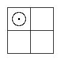
First, let us suppose that the Diagram above is an enclosure assigned to a certain Class of Things which we have chosen as our "Universe of Discourse", or, more briefly, our "Univ."
[For example, we might say "Let Univ. be 'books'"; and we might imagine the Diagram to be a large table assigned to all "books".]
[The Reader is strongly advised, in reading this Chapter, not to keep looking back at the Diagram above, but to draw a large one for himself with no letters on it, to have it beside him as he reads, and to keep his finger on whichever part of it he is reading about.]
Secondly, let us suppose that we have chosen a certain Adjunct, which we may call "x", and have divided the large Class to which we assigned the whole Diagram into the two smaller Classes whose Differentiae are "x" and "not-x" (which we may call "x′"); and that we have assigned the North Half of the Diagram to the one — which we may call "the Class of x-Things", or "the x-Class" — and the South Half to the other, which we may call "the Class of x′-Things", or "the x′-Class".
[For example, we might say "Let x mean 'old', so that x′ will mean 'new'", and we might suppose that we had divided books into the two Classes whose Differentiae are "old" and "new", and had assigned the North Half of the table to "old books" and the South Half to "new books".]
Thirdly, let us suppose that we have chosen another Adjunct, which we may call "y", and have subdivided the x-Class into the two Classes whose Differentiae are "y" and "y′"; and that we have assigned the North-West Cell to the one, which we may call "the xy-Class", and the North-East Cell to the other, which we may call "the xy′-Class".
[For example, we might say "Let y mean 'English', so that y′ will mean 'foreign'", and we might suppose that we had subdivided "old books" into the two Classes whose Differentiae are "English" and "foreign", and had assigned the North-West Cell to "old English books" and the North-East Cell to "old foreign books".]
Fourthly, let us suppose that we have subdivided the x′-Class in the same way, and have assigned the South-West Cell to the x′y-Class and the South-East Cell to the x′y′-Class.
[For example, we might suppose that we had subdivided "new books" into the two Classes "new English books" and "new foreign books", and had assigned the South-West Cell to the one and the South-East Cell to the other.]
Plainly, if we had begun by dividing for y and y′ and had then subdivided for x and x′, we should have got the same four Classes. Hence we see that we have assigned the West Half to the y-Class and the East Half to the y′-Class.
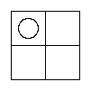
[Thus, in the Example above, we should find that we had assigned the West Half of the table to "English books" and the East Half to "foreign books".
[We have in fact assigned the four Quarters of the table to four different Classes of books, as shown here.]]
The Reader should carefully remember that in a phrase like "the x-Things" the word "Things" means that particular kind of Things to which the whole Diagram has been assigned.
[Thus, if we say "Let Univ. be 'books'", we mean that we have assigned the whole Diagram to "books". In that case, if we took "x" to mean "old", the phrase "the x-Things" would mean "the old books".]
The Reader should not go on to the next Chapter until he is thoroughly familiar with the blank Diagram I have advised him to draw.
He ought to be able to name, instantly, the Adjunct assigned to any Compartment named in the right-hand column of the Table below.
He ought also to be able to name, instantly, the Compartment assigned to any Adjunct named in the left-hand column.
To make sure of it, he had better put the book into the hands of some genial friend, keeping nothing but the blank Diagram for himself, and get that genial friend to question him on this Table, dodging about as much as possible. The Questions and Answers should go something like this:
Adjuncts of Classes. | Compartments, or Cells, assigned to them. x | North Half. x′ | South Half. y | West Half. y′ | East Half. xy | North-West Cell. xy′ | North-East Cell. x′y | South-West Cell. x′y′ | South-East Cell.
Q. | "Adjunct for West Half?" A. | "y." Q. | "Compartment for xy′?" A. | "North-East Cell." Q. | "Adjunct for South-West Cell?" A. | "x′y." | and so on, and so on.
After a little practice he will find he can do without the blank Diagram altogether, and will see it mentally — "in my mind's eye, Horatio!" — while answering his genial friend's questions. Once he has got that far, he may safely go on to the next Chapter.
Let us agree that a Red Counter placed inside a Cell shall mean "This Cell is occupied" — that is, "There is at least one Thing in it."
Let us also agree that a Red Counter placed on the partition between two Cells shall mean "The Compartment made up of these two Cells is occupied, but it is not known whereabouts in it the occupants are." So it may be taken to mean "At least one of these two Cells is occupied; possibly both are."
Our ingenious American cousins have invented a phrase for the state of a man who has not yet made up his mind which of two political parties to join: such a man is said to be "sitting on the fence". The phrase describes the condition of the Red Counter exactly.
Let us also agree that a Grey Counter placed inside a Cell shall mean "This Cell is empty" — that is, "There is nothing in it."
[The Reader had better provide himself with 4 Red Counters and 5 Grey ones.]
§ 1
From here on, in stating Propositions such as "Some x-Things exist" or "No x-Things are y-Things", I shall leave out the word "Things", which the Reader can supply for himself, and shall write them "Some x exist" or "No x are y".
[Note that the word "Things" is used here in a special sense, as explained in Book Three, Chapter I.]
A Proposition containing only one of the Letters used as Symbols for Attributes is said to be "Uniliteral".
[For example, "Some x exist", "No y′ exist", and so on.]
A Proposition containing two Letters is said to be "Biliteral".
[For example, "Some xy′ exist", "No x′ are y", and so on.]
A Proposition is said to be "in terms of" the Letters it contains, whether or not they carry accents.
[Thus "Some xy′ exist", "No x′ are y", and so on, are said to be in terms of x and y.]
§ 2
Let us take first the Proposition "Some x exist".
[Note that this Proposition is, as explained in Book Two, Chapter III, equivalent to "Some existing Things are x-Things".]
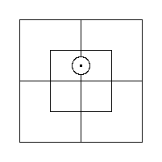
This tells us that there is at least one Thing in the North Half — that is, that the North Half is occupied. And plainly we can represent that by placing a Red Counter (here drawn as a dotted circle) on the partition that divides the North Half.
[In the "books" example this Proposition would be "Some old books exist".]
We may represent the three similar Propositions "Some x′ exist", "Some y exist" and "Some y′ exist" in the same way.
[The Reader should work all of these out for himself. In the "books" example these Propositions would be "Some new books exist", and so on.]
Let us take next the Proposition "No x exist".
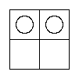
This tells us that there is nothing in the North Half — that is, that the North Half is empty; that is, that the North-West Cell and the North-East Cell are both of them empty. And we can represent that by placing two Grey Counters in the North Half, one in each Cell.
[The Reader may perhaps think it would be enough to place a Grey Counter on the partition in the North Half, and that just as a Red Counter placed there would mean "This Half is occupied", so a Grey one would mean "This Half is empty".
[That, however, would be a mistake. We have seen that a Red Counter placed there would mean "At least one of these two Cells is occupied; possibly both are." So a Grey one would mean only "At least one of these two Cells is empty; possibly both are." But what we have to represent is that both Cells are certainly empty, and that can only be done by placing a Grey Counter in each of them.]
[In the "books" example this Proposition would be "No old books exist".]]
We may represent the three similar Propositions "No x′ exist", "No y exist" and "No y′ exist" in the same way.
[The Reader should work all of these out for himself. In the "books" example these three Propositions would be "No new books exist", and so on.]
Let us take next the Proposition "Some xy exist".
This tells us that there is at least one Thing in the North-West Cell — that is, that the North-West Cell is occupied. And we can represent that by placing a Red Counter in it.
[In the "books" example this Proposition would be "Some old English books exist".]
We may represent the three similar Propositions "Some xy′ exist", "Some x′y exist" and "Some x′y′ exist" in the same way.
[The Reader should work all of these out for himself. In the "books" example these three Propositions would be "Some old foreign books exist", and so on.]
Let us take next the Proposition "No xy exist".
This tells us that there is nothing in the North-West Cell — that is, that the North-West Cell is empty. And we can represent that by placing a Grey Counter in it.
[In the "books" example this Proposition would be "No old English books exist".]
We may represent the three similar Propositions "No xy′ exist", "No x′y exist" and "No x′y′ exist" in the same way.
[The Reader should work all of these out for himself. In the "books" example these three Propositions would be "No old foreign books exist", and so on.]
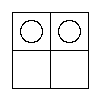
We have seen that the Proposition "No x exist" may be represented by placing two Grey Counters in the North Half, one in each Cell.
We have also seen that those two Grey Counters, taken separately, represent the two Propositions "No xy exist" and "No xy′ exist".
Hence we see that the Proposition "No x exist" is a Double Proposition, and is equivalent to the two Propositions "No xy exist" and "No xy′ exist".
[In the "books" example this Proposition would be "No old books exist".
[So it is a Double Proposition, and is equivalent to the two Propositions "No old English books exist" and "No old foreign books exist".]]
§ 3
Let us take first the Proposition "Some x are y".
This tells us that at least one Thing in the North Half is also in the West Half. Hence it must be in the space common to them — that is, in the North-West Cell. Hence the North-West Cell is occupied. And we can represent that by placing a Red Counter in it.
[Note that the Subject of the Proposition settles which Half we are to use, and that the Predicate settles in which part of it we are to place the Red Counter.
[In the "books" example this Proposition would be "Some old books are English".]]
We may represent the three similar Propositions "Some x are y′", "Some x′ are y" and "Some x′ are y′" in the same way.
[The Reader should work all of these out for himself. In the "books" example these three Propositions would be "Some old books are foreign", and so on.]
Let us take next the Proposition "Some y are x".

This tells us that at least one Thing in the West Half is also in the North Half. Hence it must be in the space common to them — that is, in the North-West Cell. Hence the North-West Cell is occupied. And we can represent that by placing a Red Counter in it.
[In the "books" example this Proposition would be "Some English books are old".]
We may represent the three similar Propositions "Some y are x′", "Some y′ are x" and "Some y′ are x′" in the same way.
[The Reader should work all of these out for himself. In the "books" example these three Propositions would be "Some English books are new", and so on.]
We see that this one Diagram has now served to represent no fewer than three Propositions, namely
(1) "Some xy exist; (2) Some x are y; (3) Some y are x".
Hence these three Propositions are equivalent.
[In the "books" example these Propositions would be
[(1) "Some old English books exist; (2) Some old books are English; (3) Some English books are old".]]
The two equivalent Propositions "Some x are y" and "Some y are x" are said to be "Converse" to each other, and the Process of changing one into the other is called "Converting", or "Conversion".
[For example, if we were told to convert the Proposition
["Some apples are not ripe,"]
[we should first choose our Univ. — say "fruit" — and then complete the Proposition by supplying the Substantive "fruit" in the Predicate, so that it would be]
["Some apples are not-ripe fruit";]
[and we should then convert it by interchanging its Terms, so that it would be]
["Some not-ripe fruit are apples".]]
We may represent the three similar Trios of equivalent Propositions in the same way, the whole Set of four Trios being as follows:
(1) "Some xy exist" = "Some x are y" = "Some y are x". (2) "Some xy′ exist" = "Some x are y′" = "Some y′ are x". (3) "Some x′y exist" = "Some x′ are y" = "Some y are x′". (4) "Some x′y′ exist" = "Some x′ are y′" = "Some y′ are x′".
Let us take next the Proposition "No x are y".
This tells us that no Thing in the North Half is also in the West Half. Hence there is nothing in the space common to them — that is, in the North-West Cell. Hence the North-West Cell is empty. And we can represent that by placing a Grey Counter in it.
[In the "books" example this Proposition would be "No old books are English".]
We may represent the three similar Propositions "No x are y′", "No x′ are y" and "No x′ are y′" in the same way.
[The Reader should work all of these out for himself. In the "books" example these three Propositions would be "No old books are foreign", and so on.]
Let us take next the Proposition "No y are x".

This tells us that no Thing in the West Half is also in the North Half. Hence there is nothing in the space common to them — that is, in the North-West Cell. That is, the North-West Cell is empty. And we can represent that by placing a Grey Counter in it.
[In the "books" example this Proposition would be "No English books are old".]
We may represent the three similar Propositions "No y are x′", "No y′ are x" and "No y′ are x′" in the same way.
[The Reader should work all of these out for himself. In the "books" example these three Propositions would be "No English books are new", and so on.]

We see that this one Diagram has now served to represent no fewer than three Propositions, namely
(1) "No xy exist; (2) No x are y; (3) No y are x."
Hence these three Propositions are equivalent.
[In the "books" example these Propositions would be
[(1) "No old English books exist; (2) No old books are English; (3) No English books are old".]]
The two equivalent Propositions "No x are y" and "No y are x" are said to be "Converse" to each other.
[For example, if we were told to convert the Proposition
["No porcupines are talkative",]
[we should first choose our Univ. — say "animals" — and then complete the Proposition by supplying the Substantive "animals" in the Predicate, so that it would be]
["No porcupines are talkative animals", and we should then convert it by interchanging its Terms, so that it would be]
["No talkative animals are porcupines".]]
We may represent the three similar Trios of equivalent Propositions in the same way, the whole Set of four Trios being as follows:
(1) "No xy exist" = "No x are y" = "No y are x". (2) "No xy′ exist" = "No x are y′" = "No y′ are x". (3) "No x′y exist" = "No x′ are y" = "No y are x′". (4) "No x′y′ exist" = "No x′ are y′" = "No y′ are x′".
Let us take next the Proposition "All x are y".
We know (see Book Two, Chapter III) that this is a Double Proposition, equivalent to the two Propositions "Some x are y" and "No x are y′", each of which we already know how to represent.
[Note that the Subject of the given Proposition settles which Half we are to use, and that its Predicate settles in which part of that Half we are to place the Red Counter.]
| Some x exist | No x exist | 
| ||
| Some x′ exist | 
| No x′ exist | ||
| Some y exist | No y exist | 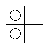 | ||
| Some y′ exist | No y′ exist |
We may represent the seven similar Propositions "All x are y′", "All x′ are y", "All x′ are y′", "All y are x", "All y are x′", "All y′ are x" and "All y′ are x′" in the same way.
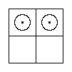
Let us take, lastly, the Double Proposition "Some x are y and some are y′", each part of which we already know how to represent.
We may represent the three similar Propositions "Some x′ are y and some are y′", "Some y are x and some are x′" and "Some y′ are x and some are x′" in the same way.
The Reader should now get his genial friend to question him, severely, on these two Tables. The Inquisitor should have the Tables in front of him; the Victim should have nothing but a blank Diagram and the Counters with which he is to represent the various Propositions his friend names — "Some y exist", "No y′ are x", "All x are y", and so on and so on.
| Some xy exist = Some x are y = Some y are x | 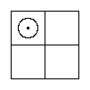 | All x are y | 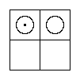 | |
| Some xy′ exist = Some x are y′ = Some y′ are x | 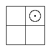 | All x are y′ | 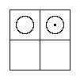 | |
| Some x′y exist = Some x′ are y = Some y are x′ | 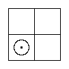 | All x′ are y | 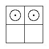 | |
| Some x′y′ exist = Some x′ are y′ = Some y′ are x′ | 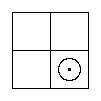 | All x′ are y′ | 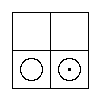 | |
| No xy exist = No x are y = No y are x | 
| All y are x | 
| |
| No xy′ exist = No x are y′ = No y′ are x | 
| All y are x′ | 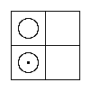 | |
| No x′y exist = No x′ are y = No y are x′ | 
| All y′ are x | 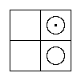 | |
| No x′y′ exist = No x′ are y′ = No y′ are x′ | 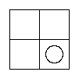 | All y′ are x′ | 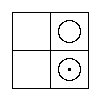 | |
| Some x are y, and some are y′ | Some y are x and some are x′ | 
| ||
| Some x′ are y, and some are y′ | 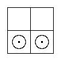 | Some y′ are x and some are x′ | 
|
The Diagram is supposed to be set before us with certain Counters placed on it, and the problem is to find out what Proposition, or Propositions, the Counters represent.
Since the process is simply the reverse of the one discussed in the previous Chapter, we can help ourselves to the results obtained there, as far as they go.

First, let us suppose that we find a Red Counter placed in the North-West Cell.
We know that this represents each of the Trio of equivalent Propositions
"Some xy exist" = "Some x are y" = "Some y are x".
A Red Counter placed in the North-East, South-West or South-East Cell may be interpreted in the same way.

Next, let us suppose that we find a Grey Counter placed in the North-West Cell.
We know that this represents each of the Trio of equivalent Propositions
"No xy exist" = "No x are y" = "No y are x".
A Grey Counter placed in the North-East, South-West or South-East Cell may be interpreted in the same way.

Next, let us suppose that we find a Red Counter placed on the partition that divides the North Half.
We know that this represents the Proposition "Some x exist".
A Red Counter placed on the partition dividing the South, West or East Half may be interpreted in the same way.

Next, let us suppose that we find two Red Counters placed in the North Half, one in each Cell.
We know that this represents the Double Proposition "Some x are y and some are y′".
Two Red Counters placed in the South, West or East Half may be interpreted in the same way.

Next, let us suppose that we find two Grey Counters placed in the North Half, one in each Cell.
We know that this represents the Proposition "No x exist".
Two Grey Counters placed in the South, West or East Half may be interpreted in the same way.
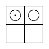
Lastly, let us suppose that we find a Red and a Grey Counter placed in the North Half, the Red in the North-West Cell and the Grey in the North-East Cell.
We know that this represents the Proposition "All x are y".
[Note that the Half occupied by the two Counters settles what the Subject of the Proposition is to be, and that the Cell occupied by the Red Counter settles what its Predicate is to be.]
A Red and a Grey Counter may be interpreted in the same way when placed in any one of the seven similar positions:
Red in North-East, Grey in North-West; Red in South-West, Grey in South-East; Red in South-East, Grey in South-West; Red in North-West, Grey in South-West; Red in South-West, Grey in North-West; Red in North-East, Grey in South-East; Red in South-East, Grey in North-East.
Once more the genial friend must be appealed to, and asked to examine the Reader on Tables II and III, and to make him not only represent Propositions but also interpret Diagrams when they are marked with Counters.
The Questions and Answers should go like this:
Q. Represent "No x′ are y′." A. Grey Counter in S.E. Cell. Q. Interpret Red Counter on E. partition. A. "Some y′ exist." Q. Represent "All y′ are x." A. Red in N.E. Cell; Grey in S.E. Q. Interpret Grey Counter in S.W. Cell. A. "No x′y exist" = "No x′ are y" = "No y are x′". and so on, and so on.
At first the Examinee will need to have the Board and Counters in front of him; but he will soon learn to do without them, and to answer with his eyes shut or gazing into vacancy.
[Work Examples § 1, 5–8 (Book Eight, Chapter I).]
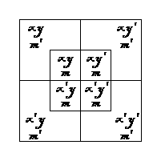
First, let us suppose that the left-hand Diagram above is the Biliteral Diagram we have been using in Book Three, and that we change it into a Triliteral Diagram by drawing an Inner Square, so as to cut each of its 4 Cells into 2 parts and so make 8 Cells in all. The right-hand Diagram shows the result.
[The Reader is strongly advised, in reading this Chapter, not to keep looking back at the Diagrams above, but to make a large copy of the right-hand one for himself with no letters on it, to have it beside him as he reads, and to keep his finger on whichever part of it he is reading about.]
Secondly, let us suppose that we have chosen a certain Adjunct, which we may call "m", and have subdivided the xy-Class into the two Classes whose Differentiae are m and m′; and that we have assigned the N.W. Inner Cell to the one — which we may call "the Class of xym-Things", or "the xym-Class" — and the N.W. Outer Cell to the other, which we may call "the Class of xym′-Things", or "the xym′-Class".
[Thus, in the "books" example, we might say "Let m mean 'bound', so that m′ will mean 'unbound'", and we might suppose that we had subdivided the Class "old English books" into the two Classes "old English bound books" and "old English unbound books", and had assigned the N.W. Inner Cell to the one and the N.W. Outer Cell to the other.]
Thirdly, let us suppose that we have subdivided the xy′-Class, the x′y-Class and the x′y′-Class in the same way, and have in each case assigned the Inner Cell to the Class possessing the Attribute m and the Outer Cell to the Class possessing the Attribute m′.
[Thus, in the "books" example, we might suppose that we had subdivided the "new English books" into the two Classes "new English bound books" and "new English unbound books", and had assigned the S.W. Inner Cell to the one and the S.W. Outer Cell to the other.]
Plainly we have now assigned the Inner Square to the m-Class and the Outer Border to the m′-Class.
[Thus, in the "books" example, we have assigned the Inner Square to "bound books" and the Outer Border to "unbound books".]
Once the Reader has made himself familiar with this Diagram, he ought to be able to find in a moment the Compartment assigned to a particular pair of Attributes, or the Cell assigned to a particular trio of them. These Rules will help him.
(1) Arrange the Attributes in the order x, y, m.
(2) Take the first of them and find the Compartment assigned to it. (3) Then take the second, and find what part of that Compartment is assigned to it. (4) Treat the third, if there is one, in the same way.
[For example, suppose we have to find the Compartment assigned to ym. We say to ourselves "y has the West Half, and m has the Inner part of that West Half."
[Again, suppose we have to find the Cell assigned to x′ym′. We say to ourselves "x′ has the South Half; y has the West part of that South Half, that is, the South-West Quarter; and m′ has the Outer part of that South-West Quarter."]]
The Reader should now get his genial friend to question him on the Table below, along the lines of this specimen dialogue.
Q. | | Adjunct for South Half, Inner Portion? A. | | x′m. Q. | | Compartment for m′? A. | | The Outer Border. Q. | | Adjunct for North-East Quarter, Outer Portion? A. | | xy′m′. Q. | | Compartment for ym? A. | | West Half, Inner Portion. Q. | | Adjunct for South Half? A. | | x′. Q. | | Compartment for x′y′m? A. | | South-East Quarter, Inner Portion. | | and so on, and so on.
Adjunct of Classes. | Compartments, or Cells, assigned to them. x | North Half. x′ | South Half. y | West Half. y′ | East Half. m | Inner Square. m′ | Outer Border. xy | North-West Quarter. xy′ | North-East Quarter. x′y | South-West Quarter. x′y′ | South-East Quarter. xm | North Half, Inner Portion. xm′ | North Half, Outer Portion. x′m | South Half, Inner Portion. x′m′ | South Half, Outer Portion. ym | West Half, Inner Portion. ym′ | West Half, Outer Portion. y′m | East Half, Inner Portion. y′m′ | East Half, Outer Portion. xym | North-West Quarter, Inner Portion. xym′ | North-West Quarter, Outer Portion. xy′m | North-East Quarter, Inner Portion. xy′m′ | North-East Quarter, Outer Portion. x′ym | South-West Quarter, Inner Portion. x′ym′ | South-West Quarter, Outer Portion. x′y′m | South-East Quarter, Inner Portion. x′y′m′ | South-East Quarter, Outer Portion.
§ 1
Representation of Propositions of Existence in terms of x and m, or of y and m
Let us take first the Proposition "Some xm exist".
[Note that the full meaning of this Proposition is, as explained in Book Two, Chapter III, "Some existing Things are xm-Things".]
This tells us that there is at least one Thing in the Inner Portion of the North Half — that is, that this Compartment is occupied. And plainly we can represent that by placing a Red Counter on the partition that divides it.
[In the "books" example this Proposition would mean "Some old bound books exist", or "There are some old bound books".]
We may represent the seven similar Propositions in the same way: "Some xm′ exist", "Some x′m exist", "Some x′m′ exist", "Some ym exist", "Some ym′ exist", "Some y′m exist" and "Some y′m′ exist".
Let us take next the Proposition "No xm exist".
This tells us that there is nothing in the Inner Portion of the North Half — that is, that this Compartment is empty. And we can represent that by placing two Grey Counters in it, one in each Cell.
We may represent the seven similar Propositions in terms of x and m, or of y and m, in the same way: "No xm′ exist", "No x′m exist", and so on.
These sixteen Propositions of Existence are the only ones we shall have to represent on this Diagram.
§ 2
Representation of Propositions of Relation in terms of x and m, or of y and m
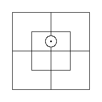
Let us take first the Pair of Converse Propositions:
"Some x are m" = "Some m are x."
We know that each of these is equivalent to the Proposition of Existence "Some xm exist", which we already know how to represent.
The same goes for the seven similar Pairs in terms of x and m, or of y and m.
Let us take next the Pair of Converse Propositions:
"No x are m" = "No m are x."
We know that each of these is equivalent to the Proposition of Existence "No xm exist", which we already know how to represent.
The same goes for the seven similar Pairs in terms of x and m, or of y and m.
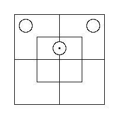
Let us take next the Proposition "All x are m."
We know (see Book Two, Chapter III) that this is a Double Proposition, equivalent to the two Propositions "Some x are m" and "No x are m′", each of which we already know how to represent.
The same goes for the fifteen similar Propositions in terms of x and m, or of y and m.
These thirty-two Propositions of Relation are the only ones we shall have to represent on this Diagram.
The Reader should now get his genial friend to question him on the four Tables below.
The Victim should have nothing in front of him but a blank Triliteral Diagram, a Red Counter and 2 Grey ones, with which he is to represent the various Propositions the Inquisitor names — "No y′ are m", "Some xm′ exist", and so on and so on.

| Some xm exist = Some x are m = Some m are x | No xm exist = No x are m = No m are x | |

| Some xm′ exist = Some x are m′ = Some m′ are x | 
| No xm′ exist = No x are m′ = No m′ are x |
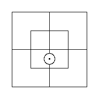 | Some x′m exist = Some x′ are m = Some m are x′ | 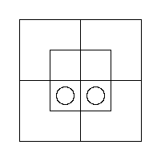 | No x′m exist = No x′ are m = No m are x′ |
| Some x′m′ exist = Some x′ are m′ = Some m′ are x′ | 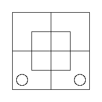 | No x′m′ exist = No x′ are m′ = No m′ are x′ |
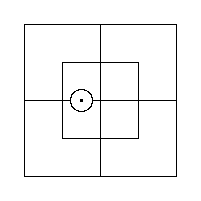 | Some ym exist = Some y are m = Some m are y | 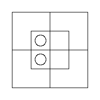 | No ym exist = No y are m = No m are y |

| Some ym′ exist = Some y are m′ = Some m′ are y | 
| No ym′ exist = No y are m′ = No m′ are y |
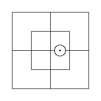 | Some y′m exist = Some y′ are m = Some m are y′ | 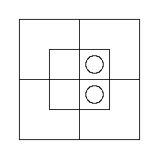 | No y′m exist = No y′ are m = No m are y′ |
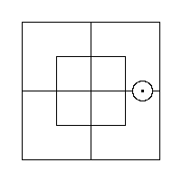 | Some y′m′ exist = Some y′ are m′ = Some m′ are y′ | 
| No y′m′ exist = No y′ are m′ = No m′ are y′ |
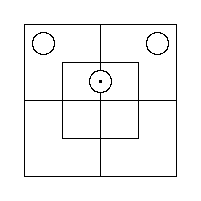 | All x are m | 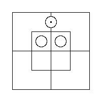 | All x are m′ |

| All x′ are m | 
| All x′ are m′ |
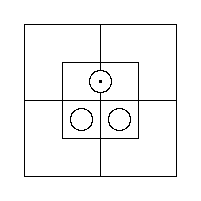 | All m are x | 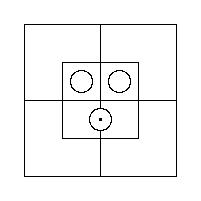 | All m are x′ |

| All m′ are x | 
| All m′ are x′ |
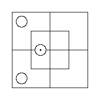 | All y are m | 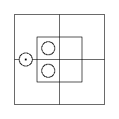 | All y are m′ |
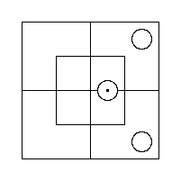 | All y′ are m | 
| All y′ are m′ |
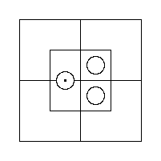 | All m are y | 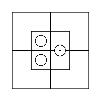 | All m are y′ |
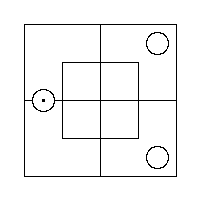 | All m′ are y | 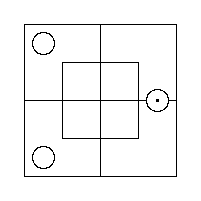 | All m′ are y′ |
The Reader had better now begin drawing little Diagrams for himself and marking them with the Digits "I" and "O" instead of using the Board and Counters. He may put a "I" for a Red Counter — read it as "There is at least one Thing here" — and a "O" for a Grey Counter — read it as "There is nothing here".
The Pair of Propositions we shall have to represent will always be one in terms of x and m and the other in terms of y and m.
When we have to represent a Proposition beginning with "All", we break it up into the two Propositions to which it is equivalent.
When we have to represent, on the same Diagram, Propositions of which some begin with "Some" and others with "No", we represent the negative ones first. That will sometimes save us from putting a "I" "on a fence" and then having to shift it into a Cell.
[Let us work a few examples.
(1)
["No x are m′; No y′ are m".]
[Let us first represent "No x are m′". This gives us Diagram a.]
[Then, representing "No y′ are m" on the same Diagram, we get Diagram b.]
| a | b | |

|
(2)
["Some m are x; No m are y".]
[If we ignored the Rule and began with "Some m are x", we should get Diagram a.]
[And if we then took "No m are y", which tells us that the Inner N.W. Cell is empty, we should have to take the "I" off the fence — since it no longer has a choice of two Cells — and put it into the Inner N.E. Cell, as in Diagram c.]
[We can save ourselves that trouble by beginning with "No m are y", as in Diagram b.]
[And now, when we take "Some m are x", there is no fence to sit on! The "I" has to go straight into the N.E. Cell, as in Diagram c.]
| a | b | c | ||
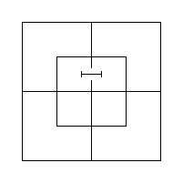 | 
| 
|
(3)
["No x′ are m′; All m are y".]
[Here we begin by breaking up the second into the two Propositions to which it is equivalent. So we have three Propositions to represent, namely]
[(1) "No x′ are m′; (2) Some m are y; (3) No m are y′".]
[We will take them in the order 1, 3, 2.]
[First we take No. (1), "No x′ are m′". This gives us Diagram a.]
[Adding No. (3), "No m are y′", we get Diagram b.]
[This time the "I" representing No. (2), "Some m are y", has to sit on the fence, since there is no "O" to order it off. This gives us Diagram c.]
| a | b | c | ||
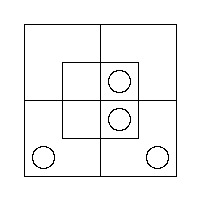 | 
|
(4)
["All m are x; All y are m".]
[Here we break up both Propositions, and so get four to represent, namely]
[(1) "Some m are x; (2) No m are x′; (3) Some y are m; (4) No y are m′".]
[We will take them in the order 2, 4, 1, 3.]
[First we take No. (2), "No m are x′". This gives us Diagram a.]
[To this we add No. (4), "No y are m′", and so get Diagram b.]
[If we now added No. (1), "Some m are x", we should have to put the "I" on a fence. So let us try No. (3) instead, "Some y are m". This gives us Diagram c.]
[And now there is no need to trouble about No. (1), since putting a "I" on the fence would add nothing to what we know. The Diagram already tells us that "Some m are x".]]
| a | b | c | ||
[Work Examples § 1, 9–12 (Book Eight, Chapter I); § 2, 1–20 (Book Eight, Chapter I).]
The problem before us is this: given a marked Triliteral Diagram, find out what Propositions of Relation, in terms of x and y, are represented on it.
The best plan for a beginner is to draw a Biliteral Diagram beside it and transfer from the one to the other all the information he can. He can then read the Propositions he wants off the Biliteral Diagram. After a little practice he will be able to do without the Biliteral Diagram and read the result off the Triliteral Diagram itself.
To transfer the information, follow these Rules.
(1) Examine the N.W. Quarter of the Triliteral Diagram. (2) If either Cell contains a "I", the Quarter is certainly occupied, and you may mark the N.W. Quarter of the Biliteral Diagram with a "I". (3) If it contains two "O"s, one in each Cell, it is certainly empty, and you may mark the N.W. Quarter of the Biliteral Diagram with a "O". (4) Deal with the N.E., the S.W. and the S.E. Quarter in the same way.
[Let us take as examples the results of the four Examples worked in the previous Chapter.
| (1) |

|
[In the N.W. Quarter only one of the two Cells is marked as empty, so we do not know whether the N.W. Quarter of the Biliteral Diagram is occupied or empty, and we cannot mark it.]

[In the N.E. Quarter we find two "O"s, so this Quarter is certainly empty, and we mark it so on the Biliteral Diagram.]
[In the S.W. Quarter we have no information at all.]
[In the S.E. Quarter we have not enough to use.]
[We may read the result off as "No x are y′", or "No y′ are x", whichever we prefer.]
| (2) |
[In the N.W. Quarter we have not enough information to use.]

[In the N.E. Quarter we find a "I". That shows us it is occupied, so we may mark the N.E. Quarter of the Biliteral Diagram with a "I".]
[In the S.W. Quarter we have not enough information to use.]
[In the S.E. Quarter we have none at all.]
[We may read the result off as "Some x are y′", or "Some y′ are x", whichever we prefer.]
| (3) |
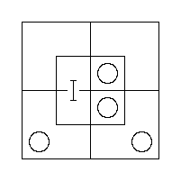 |
[In the N.W. Quarter we have no information. (The "I" sitting on the fence is no use to us until we know which side he means to jump down.)]

[In the N.E. Quarter we have not enough information to use.]
[Nor have we in the S.W. Quarter.]
[The S.E. Quarter is the only one that yields enough information to use. It is certainly empty, so we mark it as such on the Biliteral Diagram.]
[We may read the result off as "No x′ are y′", or "No y′ are x′", whichever we prefer.]
| (4) |
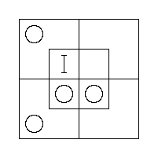 |

[The N.W. Quarter is occupied, in spite of the "O" in the Outer Cell. So we mark it with a "I" on the Biliteral Diagram.]
[The N.E. Quarter yields no information.]

[The S.W. Quarter is certainly empty. So we mark it as such on the Biliteral Diagram.]
[The S.E. Quarter does not yield enough information to use.]
[We read the result off as "All y are x."]]
[Review Tables V and VI (Book Four, Chapter II). Work Examples § 1, 13–16 (Book Eight, Chapter I); § 2, 21–32 (Book Eight, Chapter I); § 3, 1–20 (Book Eight, Chapter I).]
When a Trio of Biliteral Propositions of Relation is such that:
(1) all their six Terms are Species of the same Genus, (2) every two of them contain between them a Pair of codivisional Classes, (3) the three Propositions are so related that, if the first two were true, the third would be true,
the Trio is called a "Syllogism". The Genus of which each of the six Terms is a Species is called its "Universe of Discourse", or, more briefly, its "Univ."; the first two Propositions are called its "Premisses" and the third its "Conclusion"; and the Pair of codivisional Terms in the Premisses are called its "Eliminands", the other two its "Retinends".
The Conclusion of a Syllogism is said to be "consequent" from its Premisses, and so it is usual to put the word "Therefore" (or the Symbol "∴") in front of it.
[Note that the "Eliminands" are so called because they are eliminated and do not appear in the Conclusion, and that the "Retinends" are so called because they are retained and do appear in it.
[Note also that the question whether the Conclusion is or is not consequent from the Premisses is not affected by the actual truth or falsity of any of the Trio; it depends entirely on how they are related to one another.]
[As a specimen Syllogism, let us take the Trio]
["No x-Things are m-Things;
No y-Things are m′-Things.
No x-Things are y-Things."]
[which we may write, as explained in Book Three, Chapter II, thus:]
["No x are m;
No y are m′.
No x are y".]
[Here the first and second contain the Pair of codivisional Classes m and m′; the first and third contain the Pair x and x; and the second and third contain the Pair y and y.]
[Also the three Propositions are, as we shall see later on, so related that if the first two were true the third would be true as well.]
[So the Trio is a Syllogism. The two Propositions "No x are m" and "No y are m′" are its Premisses; the Proposition "No x are y" is its Conclusion; the Terms m and m′ are its Eliminands; and the Terms x and y are its Retinends.]
[So we may write it thus:]
["No x are m; No y are m′. ∴ No x are y".]
[As a second specimen, let us take the Trio]
["All cats understand French;
Some chickens are cats.
Some chickens understand French".]
[Put into normal form, these are]
["All cats are creatures understanding French;
Some chickens are cats.
Some chickens are creatures understanding French".]
[Here all six Terms are Species of the Genus "creatures".]
[Also the first and second Propositions contain the Pair of codivisional Classes "cats" and "cats"; the first and third contain the Pair "creatures understanding French" and "creatures understanding French"; and the second and third contain the Pair "chickens" and "chickens".]
[Also the three Propositions are, as we shall see in Book Five, Chapter II, so related that if the first two were true the third would be true. (The first two are, as it happens, not strictly true on our planet. But there is nothing to stop them being true on some other planet — Mars, say, or Jupiter — in which case the third would be true there too, and the inhabitants would probably engage chickens as nursery-governesses. They would thus secure a singular contingent privilege, unknown in England: namely that at any time when provisions ran short they would be able to make use of the nursery-governess for the nursery-dinner.)]
[So the Trio is a Syllogism. The Genus "creatures" is its "Univ."; the two Propositions "All cats understand French" and "Some chickens are cats" are its Premisses; the Proposition "Some chickens understand French" is its Conclusion; the Terms "cats" and "cats" are its Eliminands; and the Terms "creatures understanding French" and "chickens" are its Retinends.]
[So we may write it thus:]
["All cats understand French; Some chickens are cats; ∴ Some chickens understand French".]]
§ 1
When the Terms of a Proposition are represented by words, it is said to be "concrete"; when by letters, "abstract".
To translate a Proposition from concrete into abstract form, we fix on a Univ., regard each Term as a Species of it, and choose a letter to represent its Differentia.
[For example, suppose we want to translate "Some soldiers are brave" into abstract form. We may take "men" as Univ. and regard "soldiers" and "brave men" as Species of the Genus "men"; and we may choose x for the peculiar Attribute of "soldiers" — say "military" — and y for "brave". Then the Proposition may be written "Some military men are brave men", that is, "Some x-men are y-men", that is (leaving out "men", as explained in Book Three, Chapter III) "Some x are y."
[In practice we should simply say "Let Univ. be 'men', x = soldiers, y = brave", and translate "Some soldiers are brave" straight into "Some x are y."]]
The Problems we shall have to solve are of two kinds:
(1) "Given a Pair of Propositions of Relation which contain between them a pair of codivisional Classes, and which are proposed as Premisses: find what Conclusion, if any, is consequent from them."
(2) "Given a Trio of Propositions of Relation, every two of which contain a pair of codivisional Classes, and which are proposed as a Syllogism: find whether the proposed Conclusion is consequent from the proposed Premisses, and if so whether it is complete."
We will discuss these Problems separately.
§ 2
Given a Pair of Propositions of Relation proposed as Premisses: to find what Conclusion, if any, is consequent from them
The Rules for doing this are as follows.
(1) Settle the "Universe of Discourse".
(2) Construct a Dictionary, making m and m (or m and m′) stand for the pair of codivisional Classes, and x (or x′) and y (or y′) for the other two.
(3) Translate the proposed Premisses into abstract form.
(4) Represent them, together, on a Triliteral Diagram.
(5) Find what Proposition, if any, in terms of x and y, is also represented on it.
(6) Translate that back into concrete form.
Plainly, if the proposed Premisses were true, this other Proposition would be true as well. So it is a Conclusion consequent from the proposed Premisses.
[Let us work some examples.
(1)
["No son of mine is dishonest; People always treat an honest man with respect".]
[Taking "men" as Univ., we may write these as follows:]
["No sons of mine are dishonest men; All honest men are men treated with respect".]
[We can now construct our Dictionary: m = honest; x = sons of mine; y = treated with respect.]
[(Note that "x = sons of mine" is short for "x = the Differentia of 'sons of mine' when regarded as a Species of 'men'".)]
[The next thing is to translate the proposed Premisses into abstract form, as follows:]
["No x are m′; All m are y".]

[Next, by the process described in Book Four, Chapter III, we represent these on a Triliteral Diagram, thus:]
[Next, by the process described in Book Four, Chapter IV, we transfer to a Biliteral Diagram all the information we can.]
[The result we read as "No x are y′" or as "No y′ are x", whichever we prefer. So we consult our Dictionary to see which will look better, and we choose]
["No x are y′",]
[which, translated into concrete form, is]
["No son of mine fails to be treated with respect".]
(2)
["All cats understand French; Some chickens are cats".]
[Taking "creatures" as Univ., we write these as follows:]
["All cats are creatures understanding French; Some chickens are cats".]
[We can now construct our Dictionary: m = cats; x = understanding French; y = chickens.]
[The proposed Premisses, translated into abstract form, are]
["All m are x; Some y are m".]
[In order to represent these on a Triliteral Diagram we break the first up into the two Propositions to which it is equivalent, and so get three Propositions]
[(1) "Some m are x; (2) No m are x′; (3) Some y are m".]
[The Rule given in Book Four, Chapter III would make us take these in the order 2, 1, 3.]
[That, however, would produce the result shown.]

[So it would be better to take them in the order 2, 3, 1. Nos. (2) and (3) give us the result shown here; and now we need not trouble about No. (1), since the Proposition "Some m are x" is already represented on the Diagram.]
[Transferring our information to a Biliteral Diagram, we get]
[This result we can read either as "Some x are y" or as "Some y are x".]
[After consulting our Dictionary, we choose]
["Some y are x",]
[which, translated into concrete form, is]
["Some chickens understand French."]
(3)
["All diligent students are successful; All ignorant students are unsuccessful".]
[Let Univ. be "students"; m = successful; x = diligent; y = ignorant.]
[These Premisses, in abstract form, are]
["All x are m; All y are m′".]
[Broken up, they give us four Propositions]
[(1) "Some x are m; (2) No x are m′; (3) Some y are m′; (4) No y are m".]
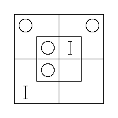
[which we will take in the order 2, 4, 1, 3.]
[Representing these on a Triliteral Diagram, we get]
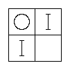
[And that information, transferred to a Biliteral Diagram, is]
[Here we get two Conclusions, namely]
["All x are y′; All y are x′."]
[And these, translated into concrete form, are]
["All diligent students are (not-ignorant, that is) learned; All ignorant students are (not-diligent, that is) idle". (See Book One, Chapter III.)]
(4)
["Of the prisoners who were put on their trial at the last
Assizes, all against whom the verdict 'guilty' was
returned were sentenced to imprisonment;
Some who were sentenced to imprisonment were also
sentenced to hard labour".]
[Let Univ. be "the prisoners who were put on their trial at the last Assizes"; m = who were sentenced to imprisonment; x = against whom the verdict 'guilty' was returned; y = who were sentenced to hard labour.]
[The Premisses, translated into abstract form, are]
["All x are m; Some m are y".]
[Breaking up the first, we get three]
[(1) "Some x are m; (2) No x are m′; (3) Some m are y".]

[Representing these in the order 2, 1, 3 on a Triliteral Diagram, we get]
[Here we get no Conclusion at all.]
[You would very likely have guessed, if you had seen only the Premisses, that the Conclusion would be]
["Some against whom the verdict 'guilty' was returned were sentenced to hard labour".]
[But that Conclusion is not even true of the Assizes I have invented here.]
["Not true!" you exclaim. "Then who were they, who were sentenced to imprisonment and were also sentenced to hard labour? They must have had the verdict 'guilty' returned against them, or how could they be sentenced?"]
[Well, it happened like this, you see. They were three ruffians who had committed highway robbery. When they were put on their trial they pleaded 'guilty'. So no verdict was returned at all, and they were sentenced at once.]]
I will now work out, in their briefest form, the four concrete Problems above, as models for the Reader to imitate in working examples.
(1) [see above]
"No son of mine is dishonest; People always treat an honest man with respect."
Univ. "men"; m = honest; x = my sons; y = treated with respect.
| "No x are m′; All m are y." | 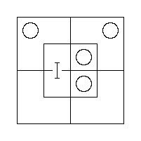 |
that is, "No son of mine ever fails to be treated with respect."
(2) [see above]
"All cats understand French; Some chickens are cats".
Univ. "creatures"; m = cats; x = understanding French; y = chickens.
| "All m are x; Some y are m." |
that is, "Some chickens understand French."
(3) [see above]
"All diligent students are successful; All ignorant students are unsuccessful".
Univ. "students"; m = successful; x = diligent; y = ignorant.
| "All x are m; All y are m′." | 
|
that is, "All diligent students are learned, and all ignorant students are idle".
(4) [see above]
"Of the prisoners who were put on their trial at the last Assizes, all against whom the verdict 'guilty' was returned were sentenced to imprisonment;
Some who were sentenced to imprisonment were also sentenced to hard labour".
Univ. "prisoners who were put on their trial at the last Assizes"; m = sentenced to imprisonment; x = against whom the verdict 'guilty' was returned; y = sentenced to hard labour.
| "All x are m; Some m are y." | 
| There is no Conclusion. |
[Review Tables VII and VIII (Book Four, Chapter II). Work Examples § 1, 17–21 (Book Eight, Chapter I); § 4, 1–6 (Book Eight, Chapter I); § 5, 1–6 (Book Eight, Chapter I).]
§ 3
Given a Trio of Propositions of Relation proposed as a Syllogism: to find whether the proposed Conclusion is consequent from the proposed Premisses, and if so whether it is complete
The Rules for doing this are as follows.
(1) Take the proposed Premisses and find, by the process described above, what Conclusion, if any, is consequent from them.
(2) If there is no Conclusion, say so.
(3) If there is a Conclusion, compare it with the proposed Conclusion and pronounce accordingly.
I will now work out, in their briefest form, six Problems, as models for the Reader to imitate in working examples.
(1)
"All soldiers are strong;
All soldiers are brave.
Some strong men are brave."
Univ. "men"; m = soldiers; x = strong; y = brave.
| "All m are x; All m are y. Some x are y." | 
|
So the proposed Conclusion is right.
(2)
"I admire these pictures;
When I admire anything I wish to examine it thoroughly.
I wish to examine some of these pictures thoroughly."
Univ. "things"; m = admired by me; x = these pictures; y = things I wish to examine thoroughly.
| "All x are m; All m are y. Some x are y." |
So the proposed Conclusion is incomplete; the complete one is "I wish to examine all these pictures thoroughly".
(3)
"None but the brave deserve the fair;
Some braggarts are cowards.
Some braggarts do not deserve the fair."
Univ. "persons"; m = brave; x = deserving of the fair; y = braggarts.
| "No m′ are x; Some y are m′. Some y are x′." |
So the proposed Conclusion is right.
(4)
"All soldiers can march;
Some babies are not soldiers.
Some babies cannot march".
Univ. "persons"; m = soldiers; x = able to march; y = babies.
| "All m are x; Some y are m′. Some y are x′." | 
| There is no Conclusion. |
(5)
"All selfish men are unpopular;
All obliging men are popular.
All obliging men are unselfish".
Univ. "men"; m = popular; x = selfish; y = obliging.
| "All x are m′; All y are m. All y are x′." |
So the proposed Conclusion is incomplete; the complete one also contains "All selfish men are disobliging".
(6)
"No one who means to go by the train, and cannot get a conveyance, and has not enough time to walk to the station, can do without running;
This party of tourists mean to go by the train and cannot get a conveyance, but they have plenty of time to walk to the station.
This party of tourists need not run."
Univ. "persons meaning to go by the train and unable to get a conveyance"; m = having enough time to walk to the station; x = needing to run; y = these tourists.
| "No m′ are x′; All y are m. All y are x′." | There is no Conclusion. |
[Here is another opportunity, gentle Reader, for playing a trick on your innocent friend. Put the proposed Syllogism in front of him and ask him what he thinks of the Conclusion.
[He will reply "Why, it's perfectly correct, of course! And if your precious Logic-book tells you it isn't, don't believe it! You don't mean to tell me those tourists need to run? If I were one of them, and knew the Premisses to be true, I should be quite clear that I needn't run — and I should walk!"]
[And you will reply "But suppose there was a mad bull behind you?"]
[And then your innocent friend will say "Hum! Ha! I must think that over a bit!"]
[You may then explain to him, as a convenient test of whether a Syllogism is sound, that if circumstances can be invented which would make the Conclusion false without interfering with the truth of the Premisses, the Syllogism must be unsound.]]
[Review Tables V to VIII (Book Four, Chapter II). Work Examples § 4, 7–12 (Book Eight, Chapter I); § 5, 7–12 (Book Eight, Chapter I); § 6, 1–10 (Book Eight, Chapter I); § 7, 1–6 (Book Eight, Chapter I).]
Let us agree that "x1" shall mean "Some existing Things have the Attribute x", or, more briefly, "Some x exist"; and that "xy1" shall mean "Some xy exist", and so on. Such a Proposition may be called an "Entity".
[Note that when there are two letters in the expression it does not matter in the least which stands first: "xy1" and "yx1" mean exactly the same.]
Let us also agree that "x0" shall mean "No existing Things have the Attribute x", or, more briefly, "No x exist"; and that "xy0" shall mean "No xy exist", and so on. Such a Proposition may be called a "Nullity".
Also that "†" shall mean "and".
[Thus "ab1 † cd0" means "Some ab exist and no cd exist".]
Also that "¶" shall mean "would, if true, prove".
[Thus "x0 ¶ xy0" means "The Proposition 'No x exist' would, if true, prove the Proposition 'No xy exist'".]
When two Letters are both accented, or both unaccented, they are said to have "Like Signs", or to be "Like"; when one is accented and the other is not, they are said to have "Unlike Signs", or to be "Unlike".
Let us take first the Proposition "Some x are y".
This, we know, is equivalent to the Proposition of Existence "Some xy exist" (see Book Three, Chapter III). So it may be represented by the expression "xy1".
The Converse Proposition "Some y are x" may of course be represented by the same expression, "xy1".
We may represent the three similar Pairs of Converse Propositions in the same way:
"Some x are y′" = "Some y′ are x", "Some x′ are y" = "Some y are x′", "Some x′ are y′" = "Some y′ are x′".
Let us take next the Proposition "No x are y".
This, we know, is equivalent to the Proposition of Existence "No xy exist" (see Book Three, Chapter III). So it may be represented by the expression "xy0".
The Converse Proposition "No y are x" may of course be represented by the same expression, "xy0".
We may represent the three similar Pairs of Converse Propositions in the same way:
"No x are y′" = "No y′ are x", "No x′ are y" = "No y are x′", "No x′ are y′" = "No y′ are x′".
Let us take next the Proposition "All x are y".
Now plainly the Double Proposition of Existence "Some x exist and no xy′ exist" tells us that some x-Things exist but that none of them have the Attribute y′ — that is, it tells us that all of them have the Attribute y; that is, it tells us that "All x are y".
And plainly the expression "x1 † xy′0" represents this Double Proposition.
So it represents the Proposition "All x are y" as well.
[The Reader will perhaps be puzzled by the statement that the Proposition "All x are y" is equivalent to the Double Proposition "Some x exist and no xy′ exist", remembering that in Book Three, Chapter III it was said to be equivalent to the Double Proposition "Some x are y and no x are y′" — that is, "Some xy exist and no xy′ exist". The explanation is that the Proposition "Some xy exist" contains more information than we need. "Some x exist" is enough for our purpose.]
This expression may be written in a shorter form, "x1y′0", since each Subscript takes effect back to the beginning of the expression.
We may represent the seven similar Propositions in the same way: "All x are y′", "All x′ are y", "All x′ are y′", "All y are x", "All y are x′", "All y′ are x" and "All y′ are x′".
[The Reader should work all of these out for himself.]
It will be handy to remember that in translating a Proposition beginning with "All" from abstract form into subscript form, or the other way round, the Predicate changes sign — that is, it changes from positive to negative, or else from negative to positive.
[Thus the Proposition "All y are x′" becomes "y1x0", where the Predicate changes from x′ to x.
[Again, the expression "x′1y′0" becomes "All x′ are y", where the Predicate changes from y′ to y.]]
§ 1
We already know how to represent each of the three Propositions of a Syllogism in subscript form. Once that is done, all we need besides is to write the three expressions in a row, with "†" between the Premisses and "¶" before the Conclusion.
[Thus the Syllogism
["No x are m′;
All m are y.
∴ No x are y′."]
[may be represented thus:]
[xm′0 † m1y′0 ¶ xy′0]
[When a Proposition has to be translated from concrete form into subscript form, the Reader will find it handy, just at first, to translate it into abstract form and from there into subscript form. But after a little practice he will find it quite easy to go straight from concrete form to subscript form.]]
§ 2
Once we have found the Conclusion to a given Pair of Premisses by Diagrams, and have represented the Syllogism in subscript form, we have a Formula by which we can at once find — without having to use Diagrams again — the Conclusion to any other Pair of Premisses with the same subscript forms.
[Thus the expression
[xm0 † ym′0 ¶ xy0]
[is a Formula by which we can find the Conclusion to any Pair of Premisses whose subscript forms are]
[xm0 † ym′0]
[For example, suppose we had the Pair of Propositions]
["No gluttons are healthy; No unhealthy men are strong"]
[proposed as Premisses. Taking "men" as our "Universe", and making m = healthy, x = gluttons, y = strong, we might translate the Pair into abstract form thus:]
["No x are m; No m′ are y".]
[These, in subscript form, would be]
[xm0 † m′y0]
[which are identical with those in our Formula. So we know at once that the Conclusion is]
[xy0]
[that is, in abstract form,]
["No x are y";]
[that is, in concrete form,]
["No gluttons are strong".]]
I shall now take three different forms of Pairs of Premisses and work out their Conclusions once for all by Diagrams, and so obtain some useful Formulae. I shall call them "Fig. I", "Fig. II" and "Fig. III".
This covers any Pair of Premisses which are both Nullities and which contain Unlike Eliminands.
The simplest case is
| xm0 † ym′0 | |

|
Here we see that the Conclusion is a Nullity and that the Retinends have kept their Signs.
And we should find this Rule holds good with any Pair of Premisses that meet the given conditions.
[The Reader had better satisfy himself of this by working out several varieties on Diagrams, such as
[m1x0 † ym′0 (which ¶ xy0) xm′0 † m1y0 (which ¶ xy0) x′m0 † ym′0 (which ¶ x′y0) m′1x′0 † m1y′0 (which ¶ x′y′0).]]
If either Retinend is asserted in the Premisses to exist, it may of course be asserted to exist in the Conclusion too.
So we get two Variants of Fig. I:
(α) where one Retinend is so asserted;
(β) where both are so asserted.
[The Reader had better work out examples of these two Variants on Diagrams, such as
[m1x0 † y1m′0 (which proves y1x0) x1m′0 † m1y0 (which proves x1y0) x′1m0 † y1m′0 (which proves x′1y0 † y1x′0).]]
The Formula to be remembered is
xm0 † ym′0 ¶ xy0
with these two Rules:
(1) Two Nullities with Unlike Eliminands yield a Nullity in which both Retinends keep their Signs.
(2) A Retinend asserted in the Premisses to exist may be asserted to exist in the Conclusion.
[Note that Rule (1) is simply the Formula put into words.]
This covers any Pair of Premisses of which one is a Nullity and the other an Entity, and which contain Like Eliminands.
The simplest case is
| xm0 † ym1 | |

|
Here we see that the Conclusion is an Entity and that the Nullity-Retinend has changed its Sign.
And we should find this Rule holds good with any Pair of Premisses that meet the given conditions.
[The Reader had better satisfy himself of this by working out several varieties on Diagrams, such as
[x′m0 † ym1 (which ¶ xy1) x1m′0 † y′m′1 (which ¶ x′y′1) m1x0 † y′m1 (which ¶ x′y′1).]]
The Formula to be remembered is
xm0 † ym1 ¶ x′y1
with this Rule:
A Nullity and an Entity, with Like Eliminands, yield an Entity in which the Nullity-Retinend changes its Sign.
[Note that this Rule is simply the Formula put into words.]
This covers any Pair of Premisses which are both Nullities and which contain Like Eliminands asserted to exist.
The simplest case is
xm0 † ym0 † m1
[Note that "m1" is stated separately here because it does not matter which of the two Premisses it occurs in: so this covers the three forms "m1x0 † ym0", "xm0 † m1y0" and "m1x0 † m1y0".]

|
Here we see that the Conclusion is an Entity and that both Retinends have changed their Signs.
And we should find this Rule holds good with any Pair of Premisses that meet the given conditions.
[The Reader had better satisfy himself of this by working out several varieties on Diagrams, such as
[x′m0 † m1y0 (which ¶ xy′1) m′1x0 † m′y′0 (which ¶ x′y1) m1x′0 † m1y′0 (which ¶ xy1).]]
The Formula to be remembered is
xm0 † ym0 † m1 ¶ x′y′1
with this Rule, which is simply the Formula put into words:
Two Nullities, with Like Eliminands asserted to exist, yield an Entity in which both Retinends change their Signs.
To help the Reader remember the peculiarities and Formulae of these three Figures, I will put them all together in one Table.
Fig. I. xm0 † ym′0 ¶ xy0 Two Nullities, with Unlike Eliminands, yield a Nullity, in which both Retinends keep their Signs. A Retinend, asserted in the Premisses to exist, may be so asserted in the Conclusion. Fig. II. xm0 † ym1 ¶ x′y1 A Nullity and an Entity, with Like Eliminands, yield an Entity, in which the Nullity-Retinend changes its Sign. Fig. III. xm0 † ym0 † m1 ¶ x′y′1 Two Nullities, with Like Eliminands asserted to exist, yield an Entity, in which both Retinends change their Signs.
I will now work out by these Formulae, as models for the Reader to imitate, some Problems in Syllogisms already worked by Diagrams in Book Five, Chapter II.
(1) [see Book Five, Chapter II]
"No son of mine is dishonest; People always treat an honest man with respect."
Univ. "men"; m = honest; x = my sons; y = treated with respect.
xm′0 † m1y′0 ¶ xy′0 [Fig. I.
that is, "No son of mine ever fails to be treated with respect."
(2) [see Book Five, Chapter II]
"All cats understand French; Some chickens are cats."
Univ. "creatures"; m = cats; x = understanding French; y = chickens.
m1x′0 † ym1 ¶ xy1 [Fig. II.
that is, "Some chickens understand French."
(3) [see Book Five, Chapter II]
"All diligent students are successful; All ignorant students are unsuccessful."
Univ. "students"; m = successful; x = diligent; y = ignorant.
x1m′0 † y1m0 ¶ x1y0 † y1x0 [Fig. I (β).
that is, "All diligent students are learned; and all ignorant students are idle."
(4) [see Book Five, Chapter II]
"All soldiers are strong;
All soldiers are brave.
Some strong men are brave."
Univ. "men"; m = soldiers; x = strong; y = brave.
m1x′0 † m1y′0 ¶ xy1 [Fig. III.
So the proposed Conclusion is right.
(5) [see Book Five, Chapter II]
"I admire these pictures;
When I admire anything, I wish to examine it thoroughly.
I wish to examine some of these pictures thoroughly."
Univ. "things"; m = admired by me; x = these; y = things I wish to examine thoroughly.
x1m′0 † m1y′0 ¶ x1y′0 [Fig. I (α).
So the proposed Conclusion, xy1, is incomplete; the complete one is "I wish to examine all these pictures thoroughly."
(6) [see Book Five, Chapter II]
"None but the brave deserve the fair;
Some braggarts are cowards.
Some braggarts do not deserve the fair."
Univ. "persons"; m = brave; x = deserving of the fair; y = braggarts.
m′x0 † ym′1 ¶ x′y1 [Fig. II.
So the proposed Conclusion is right.
(7) [see Book Five, Chapter II]
"No one who means to go by the train, and cannot get a conveyance, and has not enough time to walk to the station, can do without running;
This party of tourists mean to go by the train and cannot get a conveyance, but they have plenty of time to walk to the station.
This party of tourists need not run."
Univ. "persons meaning to go by the train and unable to get a conveyance"; m = having enough time to walk to the station; x = needing to run; y = these tourists.
m′x′0 † y1m′0 does not come under any of the three Figures. So we have to go back to the Method of Diagrams, as shown in Book Five, Chapter II.
So there is no Conclusion.
[Work Examples § 4, 12–20 (Book Eight, Chapter I); § 5, 13–24 (Book Eight, Chapter I); § 6, 1–6 (Book Eight, Chapter I); § 7, 1–3 (Book Eight, Chapter I). Also read Note (A) in the Notes.]
§ 3
Any argument that deceives us by seeming to prove what it does not really prove may be called a "Fallacy" (from the Latin verb fallo, "I deceive"); but the particular kind to be discussed now consists of a Pair of Propositions proposed as the Premisses of a Syllogism which yield no Conclusion.
When each of the proposed Premisses is a Proposition in I, or E, or A — the only kinds we are concerned with now — the Fallacy can be detected by the "Method of Diagrams", simply by setting them out on a Triliteral Diagram and noticing that they yield no information that can be transferred to the Biliteral Diagram.
But suppose we were working by the "Method of Subscripts" and had to deal with a Pair of proposed Premisses that happened to be a "Fallacy": how could we be certain they would yield no Conclusion?
Our best plan, I think, is to deal with Fallacies the same way we have already dealt with Syllogisms: that is, to take certain forms of Pairs of Propositions, work them out once for all on the Triliteral Diagram, establish that they yield no Conclusion, and then record them for future use as Formulae for Fallacies, just as we have already recorded our three Formulae for Syllogisms.
Now if we recorded the two Sets of Formulae in the same shape — by the Method of Subscripts — there would be a considerable risk of confusing the two kinds. So, to keep them distinct, I propose to record the Formulae for Fallacies in words, and to call them "Forms" instead of "Formulae".
Let us now go on to find, by the Method of Diagrams, three "Forms of Fallacies" which we will then put on record for future use. They are as follows:
(1) Fallacy of Like Eliminands not asserted to exist. (2) Fallacy of Unlike Eliminands with an Entity-Premiss. (3) Fallacy of two Entity-Premisses.
We shall discuss these separately, and it will be seen that each fails to yield a Conclusion.
(1) Fallacy of Like Eliminands not asserted to exist
Plainly neither of the given Propositions can be an Entity, since that kind asserts the existence of both its Terms (see Book Two, Chapter III). So they must both be Nullities.
So the given Pair may be represented by (xm0 † ym0), with or without x1, y1.
Set out on Triliteral Diagrams, these are:
| xm0 † ym0 | x1m0 † ym0 |
| xm0 † y1m0 | x1m0 † y1m0 |
Here the given Pair may be represented by (xm0 † ym′1), with or without x1 or m1.
Set out on Triliteral Diagrams, these are:
| xm0 † ym′1 | x1m0 † ym′1 | m1x0 † ym′1 |

|
Here the given Pair may be represented either by (xm1 † ym1) or by (xm1 † ym′1).
Set out on Triliteral Diagrams, these are:
| xm1 † ym1 | xm1 † ym′1 |

|
§ 4
Method of proceeding with a given Pair of Propositions
Suppose we have before us a Pair of Propositions of Relation containing between them a Pair of codivisional Classes, and we want to find what Conclusion, if any, is consequent from them. We translate them into subscript form if necessary, and then proceed as follows.
(1) We examine their Subscripts to see whether they are
(a) a Pair of Nullities; or (b) a Nullity and an Entity; or (c) a Pair of Entities.
(2) If they are a Pair of Nullities, we examine their Eliminands to see whether they are Unlike or Like.
If their Eliminands are Unlike, it is a case of Fig. I. We then examine their Retinends to see whether one or both are asserted to exist. If one Retinend is so asserted, it is a case of Fig. I (α); if both, it is a case of Fig. I (β).
If their Eliminands are Like, we examine them to see whether either is asserted to exist. If so, it is a case of Fig. III; if not, it is a case of "Fallacy of Like Eliminands not asserted to exist".
(3) If they are a Nullity and an Entity, we examine their Eliminands to see whether they are Like or Unlike.
If their Eliminands are Like, it is a case of Fig. II; if Unlike, it is a case of "Fallacy of Unlike Eliminands with an Entity-Premiss".
(4) If they are a Pair of Entities, it is a case of "Fallacy of two Entity-Premisses".
[Work Examples § 4, 1–11 (Book Eight, Chapter I); § 5, 1–12 (Book Eight, Chapter I); § 6, 7–12 (Book Eight, Chapter I); § 7, 7–12 (Book Eight, Chapter I).]
When a Set of three or more Biliteral Propositions is such that all their Terms are Species of the same Genus, and they are also so related that two of them taken together yield a Conclusion, which taken with another of them yields another Conclusion, and so on until all have been taken, then plainly, if the original Set were true, the last Conclusion would be true as well.
Such a Set, with the last Conclusion tacked on, is called a "Sorites". The original Set of Propositions is called its "Premisses"; each of the intermediate Conclusions is called a "Partial Conclusion" of the Sorites; the last Conclusion is called its "Complete Conclusion", or, more briefly, its "Conclusion"; the Genus of which all the Terms are Species is called its "Universe of Discourse", or, more briefly, its "Univ."; the Terms used as Eliminands in the Syllogisms are called its "Eliminands"; and the two Terms that are retained, and so appear in the Conclusion, are called its "Retinends".
[Note that each Partial Conclusion contains one or two Eliminands, but that the Complete Conclusion contains Retinends only.]
The Conclusion is said to be "consequent" from the Premisses, and so it is usual to put the word "Therefore" (or the symbol "∴") in front of it.
[Note that the question whether the Conclusion is or is not consequent from the Premisses is not affected by the actual truth or falsity of any one of the Propositions making up the Sorites; it depends entirely on how they are related to one another.
[As a specimen Sorites, let us take this Set of 5 Propositions:]
[(1) "No a are b′; (2) All b are c; (3) All c are d; (4) No e′ are a′; (5) All h are e′".]
[Here the first and second, taken together, yield "No a are c′".]
[This, taken with the third, yields "No a are d′".]
[This, taken with the fourth, yields "No d′ are e′".]
[And this, taken with the fifth, yields "All h are d".]
[So, if the original Set were true, this would be true as well.]
[So the original Set, with this tacked on, is a Sorites. The original Set is its Premisses; the Proposition "All h are d" is its Conclusion; the Terms a, b, c, e are its Eliminands; and the Terms d and h are its Retinends.]
[So we may write the whole Sorites thus:]
["No a are b′;
All b are c;
All c are d;
No e′ are a′;
All h are e′.
∴ All h are d".]
[In the Sorites above, the 3 Partial Conclusions are the Propositions "No a are c′", "No a are d′" and "No d′ are e′"; but if the Premisses were arranged in other ways, other Partial Conclusions might be obtained. Thus the order 4, 1, 5, 2, 3 yields the Partial Conclusions "No e′ are b′", "All h are b" and "All h are c". There are nine Partial Conclusions to this Sorites altogether, and the Reader will find it an interesting task to make them all out for himself.]]
§ 1
The Problems we shall have to solve are of this form:
"Given three or more Propositions of Relation proposed as Premisses: find what Conclusion, if any, is consequent from them."
We will limit ourselves for the present to Problems that can be worked by the Formulae of Fig. I (see Book Six, Chapter III). Those needing other Formulae are rather too hard for beginners.
Such Problems may be solved by either of two Methods:
(1) The Method of Separate Syllogisms; (2) The Method of Underscoring.
We shall discuss these separately.
§ 2
The Rules for doing this are as follows.
(1) Name the "Universe of Discourse".
(2) Construct a Dictionary, making a, b, c and so on stand for the Terms.
(3) Put the proposed Premisses into subscript form.
(4) Pick two which, containing between them a pair of codivisional Classes, can be used as the Premisses of a Syllogism.
(5) Find their Conclusion by Formula.
(6) Find a third Premiss which, along with that Conclusion, can be used as the Premisses of a second Syllogism.
(7) Find a second Conclusion by Formula.
(8) Go on like this until all the proposed Premisses have been used.
(9) Put the last Conclusion, which is the Complete Conclusion of the Sorites, into concrete form.
[As an example of the process, let us take as our proposed Set of Premisses
[(1) "All the policemen on this beat sup with our cook; (2) No man with long hair can fail to be a poet; (3) Amos Judd has never been in prison; (4) Our cook's 'cousins' all love cold mutton; (5) None but policemen on this beat are poets; (6) None but her 'cousins' ever sup with our cook; (7) Men with short hair have all been in prison."]
[Univ. "men"; a = Amos Judd; b = cousins of our cook; c = having been in prison; d = long-haired; e = loving cold mutton; h = poets; k = policemen on this beat; l = supping with our cook.]
[We now have to put the proposed Premisses into subscript form. Let us begin by putting them into abstract form. The result is]
[(1) "All k are l; (2) No d are h′; (3) All a are c′; (4) All b are e; (5) No k′ are h; (6) No b′ are l; (7) All d′ are c."]
[And it is now easy to put them into subscript form, as follows:]
[(1) k1l′0 (2) dh′0 (3) a1c0 (4) b1e′0 (5) k′h0 (6) b′l0 (7) d′1c′0]
[We now have to find a pair of Premisses that will yield a Conclusion. Let us begin with No. (1) and look down the list until we come to one we can take with it, so as to form Premisses belonging to Fig. I. We find that No. (5) will do, since we can take k as our Eliminand. So our first Syllogism is]
[(1) k1l′0 (5) k′h0 ∴ l′h0 … (8)]
[We must now begin again with l′h0 and find a Premiss to go with it. We find that No. (2) will do, h being our Eliminand. So our next Syllogism is]
[(8) l′h0 (2) dh′0 ∴ l′d0 … (9)]
[We have now used up Nos. (1), (5) and (2), and must search among the others for a partner for l′d0. We find that No. (6) will do. So we write]
[(9) l′d0 (6) b′l0 ∴ db′0 … (10)]
[Now what can we take along with db′0? No. (4) will do.]
[(10) db′0 (4) b1e′0 ∴ de′0 … (11)]
[Along with this we may take No. (7).]
[(11) de′0 (7) d′1c′0 ∴ c′e′0 … (12)]
[And along with this we may take No. (3).]
[(12) c′e′0 (3) a1c0 ∴ a1e′0]
[This Complete Conclusion, translated into abstract form, is]
["All a are e";]
[and this, translated into concrete form, is]
["Amos Judd loves cold mutton."]
[In actually working this Problem the explanations above would of course be left out, and all that would appear on paper is this:]
[(1) k1l′0 (2) dh′0 (3) a1c0 (4) b1e′0 (5) k′h0 (6) b′l0 (7) d′1c′0]
[(1) k1l′0 (5) k′h0 ∴ l′h0 … (8)]
[(8) l′h0 (2) dh′0 ∴ l′d0 … (9)]
[(9) l′d0 (6) b′l0 ∴ db′0 … (10)]
[(10) db′0 (4) b1e′0 ∴ de′0 … (11)]
[(11) de′0 (7) d′1c′0 ∴ c′e′0 … (12)]
[(12) c′e′0 (3) a1c0 ∴ a1e′0]
[Note that in working a Sorites by this process we may begin with whichever Premiss we choose.]]
§ 3
xm0 † ym′0
which yield the Conclusion xy0
We see that in order to get this Conclusion we must eliminate m and m′ and write x and y together in one expression.
Now if we agree to mark m and m′ as eliminated, and to read the two expressions together as though they were written as one, the two Premisses will then represent the Conclusion exactly, and we need not write it out separately.
Let us agree to mark the eliminated letters by underscoring them, putting a single score under the first and a double one under the second.
The two Premisses now become:
xm̲0 † ym̳′0
which we read as "xy0".
In copying out the Premisses for underscoring it will be handy to leave out all subscripts. As to the "0"s, we may always suppose them written; and as to the "1"s, we are not concerned to know which Terms are asserted to exist except those that appear in the Complete Conclusion, and for those it will be easy enough to look back at the original list.
[I will now go through the process of solving, by this method, the example worked in § 2.
[The Data are:]
[(1) k1l′0 † (2) dh′0 † (3) a1c0 † (4) b1e′0 † (5) k′h0 † (6) b′l0 † (7) d′1c′0]
[The Reader should take a piece of paper and write this solution out for himself. The first line will be the Data above; the second must be built up bit by bit, according to the following directions.]
[We begin by writing down the first Premiss, with its numeral over it, but leaving out the subscripts.]
[We now have to find a Premiss that can be combined with this — that is, a Premiss containing either k′ or l. The first we find is No. 5, and we tack it on with a †.]
[To get the Conclusion from these, k and k′ must be eliminated and what remains taken as one expression. So we underscore them, putting a single score under k and a double one under k′. The result we read as l′h.]
[We must now find a Premiss containing either l or h′. Looking along the row, we fix on No. 2 and tack it on.]
[Now these 3 Nullities are really equivalent to (l′h † dh′), in which h and h′ must be eliminated and what remains taken as one expression. So we underscore them. The result reads as l′d.]
[We now want a Premiss containing l or d′. No. 6 will do.]
[These 4 Nullities are really equivalent to (l′d † b′l). So we underscore l′ and l. The result reads as db′.]
[We now want a Premiss containing d′ or b. No. 4 will do.]
[Here we underscore b′ and b. The result reads as de′.]
[We now want a Premiss containing d′ or e. No. 7 will do.]
[Here we underscore d and d′. The result reads as c′e′.]
[We now want a Premiss containing c or e. No. 3 will do — in fact must do, as it is the only one left.]
[Here we underscore c′ and c; and, as the whole thing now reads as e′a, we tack on e′a0 as the Conclusion, with a ¶.]
[We now look along the row of Data to see whether e′ or a has been given as existent. We find that a has, in No. 3. So we add that fact to the Conclusion, which now stands as ¶ e′a0 † a1, that is, ¶ a1e′0, that is, "All a are e."]
[If the Reader has faithfully followed the directions above, his written solution will now stand as follows:]
[(1) k1l′0 † (2) dh′0 † (3) a1c0 † (4) b1e′0 † (5) k′h0 † (6) b′l0 † (7) d′1c′0]
[(1) k̲l̲′̲ † (5) k̳′̳h̲ † (2) d̲h̳′̳ † (6) b̲′̲l̳ † (4) b̳e′ † (7) d̳′̳c̲′̲ † (3) ac̳ ¶ e′a0 † a1 that is, ¶ a1e′0;]
[that is, "All a are e."]
[The Reader should now take a second piece of paper, copy out the Data only, and try to work the solution out for himself, beginning with some other Premiss.]
[If he fails to bring out the Conclusion a1e′0, I would advise him to take a third piece of paper and begin again!]]
I will now work out, in its briefest form, a Sorites of 5 Premisses, to serve as a model for the Reader to imitate in working examples.
(1) "I greatly value everything that John gives me; (2) Nothing but this bone will satisfy my dog; (3) I take particular care of everything that I greatly value; (4) This bone was a present from John; (5) The things I take particular care of are things I do not give to my dog".
Univ. "things"; a = given by John to me; b = given by me to my dog; c = greatly valued by me; d = satisfactory to my dog; e = taken particular care of by me; h = this bone.
(1) a1c′0 † (2) h′d0 † (3) c1e′0 † (4) h1a′0 † (5) e1b0
(1) a̲c̲′ † (3) c̳e̲′̲ † (4) h̲a̳′̳ † (2) h̳′̳d † (5) e̳b ¶ db0
that is, "Nothing that I give my dog satisfies him", or "My dog is not satisfied with anything I give him!"
[Note that in working a Sorites by this process we may begin with whichever Premiss we choose. For instance, we might begin with No. 5, and the result would then be
[(5) e̲b † (3) c̲e̳′̳ † (1) a̲c̳′̳ † (4) h̲a̳′̳ † (2) h̳′̳d ¶ bd0]]
[Work Examples § 4, 25–30 (Book Eight, Chapter I); § 5, 25–30 (Book Eight, Chapter I); § 6, 13–15 (Book Eight, Chapter I); § 7, 13–15 (Book Eight, Chapter I); § 8, 1–4, 13, 14, 19, 24 (Book Eight, Chapter I); § 9, 1–4, 26, 27, 40, 48 (Book Eight, Chapter I).]
The Reader who has successfully grappled with all the Examples set so far, and who thirsts, like Alexander the Great, for "more worlds to conquer", may spend his spare energies on the following 17 Examination Papers. He is advised not to attempt more than one Paper on any one day. The answers to the questions about words and phrases may be found by looking them up in the Index.
[In every Paper below, the numbered § references are to the Examples in Book Eight, Chapter I.]
I. § 4, 31; § 5, 31–34; § 6, 16, 17; § 7, 16; § 8, 5, 6; § 9, 5, 22, 42. What is "Classification"? And what is a "Class"?
II. § 4, 32; § 5, 35–38; § 6, 18; § 7, 17, 18; § 8, 7, 8; § 9, 6, 23, 43. What are "Genus", "Species" and "Differentia"?
III. § 4, 33; § 5, 39–42; § 6, 19, 20; § 7, 19; § 8, 9, 10; § 9, 7, 24, 44. What are "Real" and "Imaginary" Classes?
IV. § 4, 34; § 5, 43–46; § 6, 21; § 7, 20, 21; § 8, 11, 12; § 9, 8, 25, 45. What is "Division"? When are Classes said to be "Codivisional"?
V. § 4, 35; § 5, 47–50; § 6, 22, 23; § 7, 22; § 8, 15, 16; § 9, 9, 28, 46. What is "Dichotomy"? What arbitrary rule does it sometimes require?
VI. § 4, 36; § 5, 51–54; § 6, 24; § 7, 23, 24; § 8, 17; § 9, 10, 29, 47. What is a "Definition"?
VII. § 4, 37; § 5, 55–58; § 6, 25, 26; § 7, 25; § 8, 18; § 9, 11, 30, 49. What are the "Subject" and the "Predicate" of a Proposition? What is its "Normal" form?
VIII. § 4, 38; § 5, 59–62; § 6, 27; § 7, 26, 27; § 8, 20; § 9, 12, 31, 50. What is a Proposition "in I"? "In E"? And "in A"?
IX. § 4, 39; § 5, 63–66; § 6, 28, 29; § 7, 28; § 8, 21; § 9, 13, 32, 51. What is the "Normal" form of a Proposition of Existence?
X. § 4, 40; § 5, 67–70; § 6, 30; § 7, 29, 30; § 8, 22; § 9, 14, 33, 52. What is the "Universe of Discourse"?
XI. § 4, 41; § 5, 71–74; § 6, 31, 32; § 7, 31; § 8, 23; § 9, 15, 34, 53. What is implied, in a Proposition of Relation, as to the Reality of its Terms?
XII. § 4, 42; § 5, 75–78; § 6, 33; § 7, 32, 33; § 8, 25; § 9, 16, 35, 54. Explain the phrase "sitting on the fence".
XIII. § 5, 79–83; § 6, 34, 35; § 7, 34; § 8, 26; § 9, 17, 36, 55. What are "Converse" Propositions?
XIV. § 5, 84–88; § 6, 36; § 7, 35, 36; § 8, 27; § 9, 18, 37, 56. What are "Concrete" and "Abstract" Propositions?
XV. § 5, 89–93; § 6, 37, 38; § 7, 37; § 8, 28; § 9, 19, 38, 57. What is a "Syllogism"? And what are its "Premisses" and its "Conclusion"?
XVI. § 5, 94–97; § 6, 39; § 7, 38, 39; § 8, 29; § 9, 20, 39, 58. What is a "Sorites"? And what are its "Premisses", its "Partial Conclusions" and its "Complete Conclusion"?
XVII. § 5, 98–101; § 6, 40; § 7, 40; § 8, 30; § 9, 21, 41, 59, 60. What are the "Universe of Discourse", the "Eliminands" and the "Retinends" of a Syllogism? And of a Sorites?
[N.B. Every Example below is answered in Chapter II and worked in full in Chapter III.]
§ 1
Propositions of Relation, to be reduced to normal form
1. I have been out for a walk.
2. I am feeling better.
3. No one has read the letter but John.
4. Neither you nor I are old.
5. No fat creatures run well.
6. None but the brave deserve the fair.
7. No one looks poetical unless he is pale.
8. Some judges lose their tempers.
9. I never neglect important business.
10. What is difficult needs attention.
11. What is unwholesome should be avoided.
12. All the laws passed last week relate to excise.
13. Logic puzzles me.
14. There are no Jews in the house.
15. Some dishes are unwholesome if not well-cooked.
16. Unexciting books make one drowsy.
17. When a man knows what he's about, he can detect a swindler.
18. You and I know what we're about.
19. Some bald people wear wigs.
20. Those who are fully occupied never talk about their grievances.
21. No riddles interest me if they can be solved.
§ 2
Pairs of Abstract Propositions, one in terms of x and m, and the other in terms of y and m, to be represented on the same Triliteral Diagram
1. No x are m; No m′ are y.
2. No x′ are m′; All m′ are y.
3. Some x′ are m; No m are y.
4. All m are x; All m′ are y′.
5. All m′ are x; All m′ are y′.
6. All x′ are m′; No y′ are m.
7. All x are m; All y′ are m′.
8. Some m′ are x′; No m are y.
9. All m are x′; No m are y.
10. No m are x′; No y are m′.
11. No x′ are m′; No m are y.
12. Some x are m; All y′ are m.
13. All x′ are m; No m are y.
14. Some x are m′; All m are y.
15. No m′ are x′; All y are m.
16. All x are m′; No y are m.
17. Some m′ are x; No m′ are y′.
18. All x are m′; Some m′ are y′.
19. All m are x; Some m are y′.
20. No x′ are m; Some y are m.
21. Some x′ are m′; All y′ are m.
22. No m are x; Some m are y.
23. No m′ are x; All y are m′.
24. All m are x; No y′ are m′.
25. Some m are x; No y′ are m.
26. All m′ are x′; Some y are m′.
27. Some m are x′; No y′ are m′.
28. No x are m′; All m are y′.
29. No x′ are m; No m are y′.
30. No x are m; Some y′ are m′.
31. Some m′ are x; All y′ are m;
32. All x are m′; All y are m.
§ 3
Marked Triliteral Diagrams, to be interpreted in terms of x and y
| 1 | 2 |
| 3 | 4 |

| |
| 5 | 6 |
| 7 | 8 |

| 
|
| 9 | 10 |

| |
| 11 | 12 |

| |
| 13 | 14 |
| 15 | 16 |
| 17 | 18 |

| |
| 19 | 20 |

|
§ 4
Pairs of Abstract Propositions, proposed as Premisses: Conclusions to be found
1. No m are x′; All m′ are y.
2. No m′ are x; Some m′ are y′.
3. All m′ are x; All m′ are y′.
4. No x′ are m′; All y′ are m.
5. Some m are x′; No y are m.
6. No x′ are m; No m are y.
7. No m are x′; Some y′ are m.
8. All m′ are x′; No m′ are y.
9. Some x′ are m′; No m are y′.
10. All x are m; All y′ are m′.
11. No m are x; All y′ are m′.
12. No x are m; All y are m.
13. All m′ are x; No y are m.
14. All m are x; All m′ are y.
15. No x are m; No m′ are y.
16. All x are m′; All y are m.
17. No x are m; All m′ are y.
18. No x are m′; No m are y.
19. All m are x; All m are y′.
20. No m are x; All m′ are y.
21. All x are m; Some m′ are y.
22. Some x are m; All y are m.
23. All m are x; Some y are m.
24. No x are m; All y are m.
25. Some m are x′; All y′ are m′.
26. No m are x′; All y are m.
27. All x are m′; All y′ are m.
28. All m are x′; Some m are y.
29. No m are x; All y are m′.
30. All x are m′; Some y are m.
31. All x are m; All y are m.
32. No x are m′; All m are y.
33. No m are x; No m are y.
34. No m are x′; Some y are m.
35. No m are x; All y are m.
36. All m are x′; Some y are m.
37. All m are x; No y are m.
38. No m are x; No m′ are y.
39. Some m are x′; No m are y.
40. No x′ are m; All y′ are m.
41. All x are m′; No y are m′.
42. No m′ are x; No y are m.
§ 5
Pairs of Concrete Propositions, proposed as Premisses: Conclusions to be found
1. I have been out for a walk; I am feeling better.
2. No one has read the letter but John; No one, who has not read it, knows what it is about.
3. Those who are not old like walking; You and I are young.
4. Your course is always honest; Your course is always the best policy.
5. No fat creatures run well; Some greyhounds run well.
6. Some, who deserve the fair, get their deserts; None but the brave deserve the fair.
7. Some Jews are rich; All Inuit are Gentiles.
8. Sugar-plums are sweet; Some sweet things are liked by children.
9. John is in the house; Everybody in the house is ill.
10. Umbrellas are useful on a journey; What is useless on a journey should be left behind.
11. Audible music causes vibration in the air; Inaudible music is not worth paying for.
12. Some holidays are rainy; Rainy days are tiresome.
13. No Frenchmen like plum pudding; All Englishmen like plum pudding.
14. No portrait of a lady, that makes her simper or scowl, is satisfactory; No photograph of a lady ever fails to make her simper or scowl.
15. All pale people are phlegmatic; No one looks poetical unless he is pale.
16. No old misers are cheerful; Some old misers are thin.
17. No one, who exercises self-control, fails to keep his temper; Some judges lose their tempers.
18. All pigs are fat; Nothing that is fed on barley-water is fat.
19. All rabbits, that are not greedy, are black; No old rabbits are free from greediness.
20. Some pictures are not first attempts; No first attempts are really good.
21. I never neglect important business; Your business is unimportant.
22. Some lessons are difficult; What is difficult needs attention.
23. All clever people are popular; All obliging people are popular.
24. Thoughtless people do mischief; No thoughtful person forgets a promise.
25. Pigs cannot fly; Pigs are greedy.
26. All soldiers march well; Some babies are not soldiers.
27. No wedding cakes are wholesome; What is unwholesome should be avoided.
28. John is industrious; No industrious people are unhappy.
29. No philosophers are conceited; Some conceited persons are not gamblers.
30. Some excise laws are unjust; All the laws passed last week relate to excise.
31. No military men write poetry; None of my lodgers are civilians.
32. No medicine is nice; Senna is a medicine.
33. Some circulars are not read with pleasure; No begging-letters are read with pleasure.
34. All Britons are brave; No sailors are cowards.
35. Nothing intelligible ever puzzles me; Logic puzzles me.
36. Some pigs are wild; All pigs are fat.
37. All wasps are unfriendly; All unfriendly creatures are unwelcome.
38. No old rabbits are greedy; All black rabbits are greedy.
39. Some eggs are hard-boiled; No eggs are uncrackable.
40. No antelope is ungraceful; Graceful creatures delight the eye.
41. All well-fed canaries sing loud; No canary is melancholy if it sings loud.
42. Some poetry is original; No original work is producible at will.
43. No country, that has been explored, is infested by dragons; Unexplored countries are fascinating.
44. No coals are white; No ravens are white.
45. No bridges are made of sugar; Some bridges are picturesque.
46. No children are patient; No impatient person can sit still.
47. No quadrupeds can whistle; Some cats are quadrupeds.
48. Bores are terrible; You are a bore.
49. Some oysters are silent; No silent creatures are amusing.
50. There are no Jews in the house; No Gentiles have beards a yard long.
51. Canaries, that do not sing loud, are unhappy; No well-fed canaries fail to sing loud.
52. All my sisters have colds; No one can sing who has a cold.
53. All that is made of gold is precious; Some caskets are precious.
54. Some buns are rich; All buns are nice.
55. All my cousins are unjust; All judges are just.
56. Pain is wearisome; No pain is eagerly wished for.
57. All medicine is nasty; Senna is a medicine.
58. Some unkind remarks are annoying; No critical remarks are kind.
59. No tall men have woolly hair; All my cousins have woolly hair.
60. All philosophers are logical; An illogical man is always obstinate.
61. John is industrious; All industrious people are happy.
62. These dishes are all well-cooked; Some dishes are unwholesome if not well-cooked.
63. No exciting books suit feverish patients; Unexciting books make one drowsy.
64. No pigs can fly; All pigs are greedy.
65. When a man knows what he's about, he can detect a swindler; You and I know what we're about.
66. Some dreams are terrible; No lambs are terrible.
67. No bald creature needs a hairbrush; No lizards have hair.
68. All battles are noisy; What makes no noise may escape notice.
69. All my cousins are unjust; No judges are unjust.
70. All eggs can be cracked; Some eggs are hard-boiled.
71. Prejudiced persons are untrustworthy; Some unprejudiced persons are disliked.
72. No dictatorial person is popular; She is dictatorial.
73. Some bald people wear wigs; All your children have hair.
74. No lobsters are unreasonable; No reasonable creatures expect impossibilities.
75. No nightmare is pleasant; Unpleasant experiences are not eagerly desired.
76. No plum cakes are wholesome; Some wholesome things are nice.
77. Nothing that is nice need be shunned; Some kinds of jam are nice.
78. All ducks waddle; Nothing that waddles is graceful.
79. Sandwiches are satisfying; Nothing in this dish is unsatisfying.
80. No rich man begs in the street; Those who are not rich should keep accounts.
81. Spiders spin webs; Some creatures, that do not spin webs, are savage.
82. Some of these shops are not crowded; No crowded shops are comfortable.
83. Prudent travellers carry plenty of small change; Imprudent travellers lose their luggage.
84. Some geraniums are red; All these flowers are red.
85. None of my cousins are just; All judges are just.
86. No Jews are mad; All my lodgers are Jews.
87. Busy folk are not always talking about their grievances; Discontented folk are always talking about their grievances.
88. None of my cousins are just; No judges are unjust.
89. All teetotalers like sugar; No nightingale drinks wine.
90. No riddles interest me if they can be solved; All these riddles are insoluble.
91. All clear explanations are satisfactory; Some excuses are unsatisfactory.
92. All elderly ladies are talkative; All good-tempered ladies are talkative.
93. No kind deed is unlawful; What is lawful may be done without scruple.
94. No babies are studious; No babies are good violinists.
95. All shillings are round; All these coins are round.
96. No honest men cheat; No dishonest men are trustworthy.
97. None of my boys are clever; None of my girls are greedy.
98. All jokes are meant to amuse; No Act of Parliament is a joke.
99. No eventful tour is ever forgotten; Uneventful tours are not worth writing a book about.
100. All my boys are disobedient; All my girls are discontented.
101. No unexpected pleasure annoys me; Your visit is an unexpected pleasure.
§ 6
Trios of Abstract Propositions, proposed as Syllogisms: to be examined
1. | Some x are m; | | No m are y′. | | Some x are y. 2. | All x are m; | | No y are m′. | | No y are x′. 3. | Some x are m′; | | All y′ are m. | | Some x are y. 4. | All x are m; | | No y are m. | | All x are y′. 5. | Some m′ are x′; | | No m′ are y. | | Some x′ are y′. 6. | No x′ are m; | | All y are m′. | | All y are x′. 7. | Some m′ are x′; | | All y′ are m′. | | Some x′ are y′. 8. | No m′ are x′; | | All y′ are m′. | | All y′ are x. 9. | Some m are x′; | | No m are y. | | Some x′ are y′. 10. | All m′ are x′; | | All m′ are y. | | Some y are x′. 11. | All x are m′; | | Some y are m. | | Some y are x′. 12. | No x are m; | | No m′ are y′. | | No x are y′. 13. | No x are m; | | All y′ are m. | | All y′ are x′. 14. | All m′ are x′; | | All m′ are y. | | Some y are x′. 15. | Some m are x′; | | All y are m′. | | Some x′ are y′. 16. | No x′ are m; | | All y′ are m′. | | Some y′ are x. 17. | No m′ are x; | | All m′ are y′. | | Some x′ are y′. 18. | No x′ are m; | | Some m are y. | | Some x are y. 19. | Some m are x; | | All m are y. | | Some y are x′. 20. | No x′ are m′; | | Some m′ are y′. | | Some x are y′. 21. | No m are x; | | All m are y′. | | Some x′ are y′. 22. | All x′ are m; | | Some y are m′. | | All x′ are y′. 23. | All m are x; | | No m′ are y′. | | No x′ are y′. 24. | All x are m′; | | All m′ are y. | | All x are y. 25. | No x are m′; | | All m are y. | | No x are y′. 26. | All m are x′; | | All y are m. | | All y are x′. 27. | All x are m; | | No m are y′. | | All x are y. 28. | All x are m; | | No y′ are m′. | | All x are y. 29. | No x′ are m; | | No m′ are y′. | | No x′ are y′. 30. | All x are m; | | All m are y′. | | All x are y′. 31. | All x′ are m′; | | No y′ are m′. | | All x′ are y. 32. | No x are m; | | No y′ are m′. | | No x are y′. 33. | All m are x′; | | All y′ are m. | | All y′ are x′. 34. | All x are m′; | | Some y are m′. | | Some y are x. 35. | Some x are m; | | All m are y. | | Some x are y. 36. | All m are x′; | | All y are m. | | All y are x′. 37. | No m are x′; | | All m are y′. | | Some x are y′. 38. | No x are m; | | No m are y′. | | No x are y′. 39. | No m are x; | | Some m are y′. | | Some x′ are y′. 40. | No m are x′; | | Some y are m. | | Some x are y.
§ 7
Trios of Concrete Propositions, proposed as Syllogisms: to be examined
1. No doctors are enthusiastic; You are enthusiastic. You are not a doctor.
2. Dictionaries are useful; Useful books are valuable. Dictionaries are valuable.
3. No misers are unselfish; None but misers save egg-shells. No unselfish people save egg-shells.
4. Some epicures are ungenerous; All my uncles are generous. My uncles are not epicures.
5. Gold is heavy; Nothing but gold will silence him. Nothing light will silence him.
6. Some healthy people are fat; No unhealthy people are strong. Some fat people are not strong.
7. "I saw it in a newspaper." "All newspapers tell lies." It was a lie.
8. Some cravats are not artistic; I admire anything artistic. There are some cravats that I do not admire.
9. His songs never last an hour; A song, that lasts an hour, is tedious. His songs are never tedious.
10. Some candles give very little light; Candles are meant to give light. Some things, that are meant to give light, give very little.
11. All, who are anxious to learn, work hard; Some of these boys work hard. Some of these boys are anxious to learn.
12. All lions are fierce; Some lions do not drink coffee. Some creatures that drink coffee are not fierce.
13. No misers are generous; Some old men are ungenerous. Some old men are misers.
14. No fossil can be crossed in love; An oyster may be crossed in love. Oysters are not fossils.
15. All uneducated people are shallow; Students are all educated. No students are shallow.
16. All young lambs jump; No young animals are healthy, unless they jump. All young lambs are healthy.
17. Ill-managed business is unprofitable; Railways are never ill-managed. All railways are profitable.
18. No Professors are ignorant; All ignorant people are vain. No professors are vain.
19. A prudent man shuns hyenas; No banker is imprudent. No banker fails to shun hyenas.
20. All wasps are unfriendly; No puppies are unfriendly. Puppies are not wasps.
21. No gamblers are honest; Some who never gamble are rich. Some rich people are dishonest.
22. No idlers win fame; Some painters are not idle. Some painters win fame.
23. No monkeys are soldiers; All monkeys are mischievous. Some mischievous creatures are not soldiers.
24. All these bonbons are chocolate-creams; All these bonbons are delicious. Chocolate-creams are delicious.
25. No muffins are wholesome; All buns are unwholesome. Buns are not muffins.
26. Some unauthorised reports are false; All authorised reports are trustworthy. Some false reports are not trustworthy.
27. Some pillows are soft; No pokers are soft. Some pokers are not pillows.
28. Improbable stories are not easily believed; None of his stories are probable. None of his stories are easily believed.
29. No thieves are honest; Some dishonest people are found out. Some thieves are found out.
30. No muffins are wholesome; All puffy food is unwholesome. All muffins are puffy.
31. No birds, except peacocks, are proud of their tails; Some birds, that are proud of their tails, cannot sing. Some peacocks cannot sing.
32. Warmth relieves pain; Nothing, that does not relieve pain, is useful in toothache. Warmth is useful in toothache.
33. No bankrupts are rich; Some merchants are not bankrupts. Some merchants are rich.
34. Bores are dreaded; No bore is ever begged to prolong his visit. No one, who is dreaded, is ever begged to prolong his visit.
35. All wise men walk on their feet; All unwise men walk on their hands. No man walks on both.
36. No wheelbarrows are comfortable; No uncomfortable vehicles are popular. No wheelbarrows are popular.
37. No frogs are poetical; Some ducks are unpoetical. Some ducks are not frogs.
38. No emperors are dentists; All dentists are dreaded by children. No emperors are dreaded by children.
39. Sugar is sweet; Salt is not sweet. Salt is not sugar.
40. Every eagle can fly; Some pigs cannot fly. Some pigs are not eagles.
§ 8
Sets of Abstract Propositions, proposed as Premisses for Soriteses: Conclusions to be found
[N.B. At the end of this Section instructions are given for varying these Examples.]
1. 1. No c are d; 2. All a are d; 3. All b are c.
2. 1. All d are b; 2. No a are c′; 3. No b are c.
3. 1. No b are a; 2. No c are d′; 3. All d are b.
4. 1. No b are c; 2. All a are b; 3. No c′ are d.
5. 1. All b′ are a′; 2. No b are c; 3. No a′ are d.
6. 1. All a are b′; 2. No b′ are c; 3. All d are a.
7. 1. No d are b′; 2. All b are a; 3. No c are d′.
8. 1. No b′ are d; 2. No a′ are b; 3. All c are d.
9. 1. All b′ are a; 2. No a are d; 3. All b are c.
10. 1. No c are d; 2. All b are c; 3. No a are d′.
11. 1. No b are c; 2. All d are a; 3. All c′ are a′.
12. 1. No c are b′; 2. All c′ are d′; 3. All b are a.
13. 1. All d are e; 2. All c are a; 3. No b are d′; 4. All e are a′.
14. 1. All e are b; 2. All a are e; 3. All d are b′; 4. All a′ are c;
15. 1. No b′ are d; 2. All e are c; 3. All b are a; 4. All d′ are c′.
16. 1. No a′ are e; 2. All d are c′; 3. All a are b; 4. All e′ are d.
17. 1. All d are c; 2. All a are e; 3. No b are d′; 4. All c are e′.
18. 1. All a are b; 2. All d are e; 3. All a′ are c′; 4. No b are e.
19. 1. No b are c; 2. All e are h; 3. All a are b; 4. No d are h; 5. All e′ are c.
20. 1. No d are h′; 2. No c are e; 3. All h are b; 4. No a are d′; 5. No b are e′.
21. 1. All b are a; 2. No d are h; 3. No c are e; 4. No a are h′; 5. All c′ are b.
22. 1. All e are d′; 2. No b′ are h′; 3. All c′ are d; 4. All a are e; 5. No c are h.
23. 1. All b′ are a′; 2. No d are e′; 3. All h are b′; 4. No c are e; 5. All d′ are a.
24. 1. All h′ are k′; 2. No b′ are a; 3. All c are d; 4. All e are h′; 5. No d are k′; 6. No b are c′.
25. 1. All a are d; 2. All k are b; 3. All e are h; 4. No a′ are b; 5. All d are c; 6. All h are k.
26. 1. All a′ are h; 2. No d′ are k′; 3. All e are b′; 4. No h are k; 5. All a are e; 6. No b′ are d.
27. 1. All c are d′; 2. No h are b; 3. All a′ are k; 4. No c are e′; 5. All b′ are d; 6. No a are c′.
28. 1. No a′ are k; 2. All e are b; 3. No h are k′; 4. No d′ are c; 5. No a are b; 6. All c′ are h.
29. 1. No e are k; 2. No b′ are m; 3. No a are c′; 4. All h′ are e; 5. All d are k; 6. No c are b; 7. All d′ are l; 8. No h are m′.
30. 1. All n are m; 2. All a′ are e; 3. No c′ are l; 4. All k are r′; 5. No a are h′; 6. No d are l′; 7. No c are n′; 8. All e are b; 9. All m are r; 10. All h are d.
[N.B. In each Example, in Sections 8 and 9, it is possible to begin with any Premiss, at pleasure, and thus to get as many different Solutions (all of course yielding the same Complete Conclusion) as there are Premisses in the Example. Hence § 8 really contains 129 different Examples, and § 9 contains 273.]
§ 9
Sets of Concrete Propositions, proposed as Premisses for Soriteses: Conclusions to be found
1
(1) Babies are illogical; (2) Nobody is despised who can manage a crocodile; (3) Illogical persons are despised.
Univ. "persons"; a = able to manage a crocodile; b = babies; c = despised; d = logical.
2
(1) My saucepans are the only things I have that are made of tin; (2) I find all your presents very useful; (3) None of my saucepans are of the slightest use.
Univ. "things of mine"; a = made of tin; b = my saucepans; c = useful; d = your presents.
3
(1) No potatoes of mine, that are new, have been boiled; (2) All my potatoes in this dish are fit to eat; (3) No unboiled potatoes of mine are fit to eat.
Univ. "my potatoes"; a = boiled; b = eatable; c = in this dish; d = new.
4
(1) There are no gardeners in the kitchen; (2) No one but a gardener says "shpoonj"; (3) My servants are all in the kitchen.
Univ. "persons"; a = in the kitchen; b = gardeners; c = my servants; d = saying "shpoonj."
5
(1) No ducks waltz; (2) No officers ever decline to waltz; (3) All my poultry are ducks.
Univ. "creatures"; a = ducks; b = my poultry; c = officers; d = willing to waltz.
6
(1) Every one who is sane can do Logic; (2) No lunatics are fit to serve on a jury; (3) None of your sons can do Logic.
Univ. "persons"; a = able to do Logic; b = fit to serve on a jury; c = sane; d = your sons.
7
(1) There are no pencils of mine in this box; (2) No sugar-plums of mine are cigars; (3) The whole of my property, that is not in this box, consists of cigars.
Univ. "things of mine"; a = cigars; b = in this box; c = pencils; d = sugar-plums.
8
(1) No experienced person is incompetent; (2) Jenkins is always blundering; (3) No competent person is always blundering.
Univ. "persons"; a = always blundering; b = competent; c = experienced; d = Jenkins.
9
(1) No terriers wander among the signs of the zodiac; (2) Nothing, that does not wander among the signs of the zodiac, is a comet; (3) Nothing but a terrier has a curly tail.
Univ. "things"; a = comets; b = curly-tailed; c = terriers; d = wandering among the signs of the zodiac.
10
(1) No one takes in the Times, unless he is well-educated; (2) No hedge-hogs can read; (3) Those who cannot read are not well-educated.
Univ. "creatures"; a = able to read; b = hedge-hogs; c = taking in the Times; d = well-educated.
11
(1) All puddings are nice; (2) This dish is a pudding; (3) No nice things are wholesome.
Univ. "things"; a = nice; b = puddings; c = this dish; d = wholesome.
12
(1) My gardener is well worth listening to on military subjects; (2) No one can remember the battle of Waterloo, unless he is very old; (3) Nobody is really worth listening to on military subjects, unless he can remember the battle of Waterloo.
Univ. "persons"; a = able to remember the battle of Waterloo; b = my gardener; c = well worth listening to on military subjects; d = very old.
13
(1) All humming-birds are richly coloured; (2) No large birds live on honey; (3) Birds that do not live on honey are dull in colour.
Univ. "birds"; a = humming-birds; b = large; c = living on honey; d = richly coloured.
14
(1) No one but my uncles has red hair; (2) A man who is a good hand at a bargain always makes money; (3) No uncle of mine is ever a bad hand at a bargain.
Univ. "persons"; a = good hands at a bargain; b = red-haired; c = my uncles; d = making money.
15
(1) All ducks in this village, that are branded 'B,' belong to Mrs. Bond; (2) Ducks in this village never wear lace collars, unless they are branded 'B'; (3) Mrs. Bond has no gray ducks in this village.
Univ. "ducks in this village"; a = belonging to Mrs. Bond; b = branded 'B'; c = gray; d = wearing lace-collars.
16
(1) All the old articles in this cupboard are cracked; (2) No jug in this cupboard is new; (3) Nothing in this cupboard, that is cracked, will hold water.
Univ. "things in this cupboard"; a = able to hold water; b = cracked; c = jugs; d = old.
17
(1) All unripe fruit is unwholesome; (2) All these apples are wholesome; (3) No fruit, grown in the shade, is ripe.
Univ. "fruit"; a = grown in the shade; b = ripe; c = these apples; d = wholesome.
18
(1) Puppies, that will not lie still, are always grateful for the loan of a skipping-rope; (2) A lame puppy would not say "thank you" if you offered to lend it a skipping-rope. (3) None but lame puppies ever care to do worsted-work.
Univ. "puppies"; a = caring to do worsted-work; b = grateful for the loan of a skipping-rope; c = lame; d = willing to lie still.
19
(1) No name in this list is unsuitable for the hero of a romance; (2) Names beginning with a vowel are always melodious; (3) No name is suitable for the hero of a romance, if it begins with a consonant.
Univ. "names"; a = beginning with a vowel; b = in this list; c = melodious; d = suitable for the hero of a romance.
20
(1) All members of the House of Commons have perfect self-command; (2) No M.P., who wears a coronet, should ride in a donkey-race; (3) All members of the House of Lords wear coronets.
Univ. "M.P.'s"; a = belonging to the House of Commons; b = having perfect self-command; c = one who may ride in a donkey-race; d = wearing a coronet.
21
(1) No goods in this shop, that have been bought and paid for, are still on sale; (2) None of the goods may be carried away, unless labeled "sold"; (3) None of the goods are labeled "sold," unless they have been bought and paid for.
Univ. "goods in this shop"; a = allowed to be carried away; b = bought and paid for; c = labeled "sold"; d = on sale.
22
(1) No acrobatic feats, that are not announced in the bills of a circus, are ever attempted there; (2) No acrobatic feat is possible, if it involves turning a quadruple somersault; (3) No impossible acrobatic feat is ever announced in a circus bill.
Univ. "acrobatic feats"; a = announced in the bills of a circus; b = attempted in a circus; c = involving the turning of a quadruple somersault; d = possible.
23
(1) Nobody, who really appreciates Beethoven, fails to keep silence while the Moonlight-Sonata is being played; (2) Guinea-pigs are hopelessly ignorant of music; (3) No one, who is hopelessly ignorant of music, ever keeps silence while the Moonlight-Sonata is being played.
Univ. "creatures"; a = guinea-pigs; b = hopelessly ignorant of music; c = keeping silence while the Moonlight-Sonata is being played; d = really appreciating Beethoven.
24
(1) Coloured flowers are always scented; (2) I dislike flowers that are not grown in the open air; (3) No flowers grown in the open air are colourless.
Univ. "flowers"; a = coloured; b = grown in the open air; c = liked by me; d = scented.
25
(1) Showy talkers think too much of themselves; (2) No really well-informed people are bad company; (3) People who think too much of themselves are not good company.
Univ. "persons"; a = good company; b = really well-informed; c = showy talkers; d = thinking too much of one's self.
26
(1) No boys under 12 are admitted to this school as boarders; (2) All the industrious boys have red hair; (3) None of the day-boys learn Greek; (4) None but those under 12 are idle.
Univ. "boys in this school"; a = boarders; b = industrious; c = learning Greek; d = red-haired; e = under 12.
27
(1) The only articles of food, that my doctor allows me, are such as are not very rich; (2) Nothing that agrees with me is unsuitable for supper; (3) Wedding-cake is always very rich; (4) My doctor allows me all articles of food that are suitable for supper.
Univ. "articles of food"; a = agreeing with me; b = allowed by my doctor; c = suitable for supper; d = very rich; e = wedding-cake.
28
(1) No discussions in our Debating-Club are likely to rouse the British Lion, so long as they are checked when they become too noisy; (2) Discussions, unwisely conducted, endanger the peacefulness of our Debating-Club; (3) Discussions, that go on while Tomkins is in the Chair, are likely to rouse the British Lion; (4) Discussions in our Debating-Club, when wisely conducted, are always checked when they become too noisy.
Univ. "discussions in our Debating-Club"; a = checked when too noisy; b = dangerous to the peacefulness of our Debating-Club; c = going on while Tomkins is in the chair; d = likely to rouse the British Lion; e = wisely conducted.
29
(1) All my sons are slim; (2) No child of mine is healthy who takes no exercise; (3) All gluttons, who are children of mine, are fat; (4) No daughter of mine takes any exercise.
Univ. "my children"; a = fat; b = gluttons; c = healthy; d = sons; e = taking exercise.
30
(1) Things sold in the street are of no great value; (2) Nothing but rubbish can be had for a song; (3) Eggs of the Great Auk are very valuable; (4) It is only what is sold in the street that is really rubbish.
Univ. "things"; a = able to be had for a song; b = eggs of the Great Auk; c = rubbish; d = sold in the street; e = very valuable.
31
(1) No books sold here have gilt edges, except what are in the front shop; (2) All the authorised editions have red labels; (3) All the books with red labels are priced at 5s. and upwards; (4) None but authorised editions are ever placed in the front shop.
Univ. "books sold here"; a = authorised editions; b = gilt-edged; c = having red labels; d = in the front shop; e = priced at 5s. and upwards.
32
(1) Remedies for bleeding, which fail to check it, are a mockery; (2) Tincture of Calendula is not to be despised; (3) Remedies, which will check the bleeding when you cut your finger, are useful; (4) All mock remedies for bleeding are despicable.
Univ. "remedies for bleeding"; a = able to check bleeding; b = despicable; c = mockeries; d = Tincture of Calendula; e = useful when you cut your finger.
33
(1) None of the unnoticed things, met with at sea, are mermaids; (2) Things entered in the log, as met with at sea, are sure to be worth remembering; (3) I have never met with anything worth remembering, when on a voyage; (4) Things met with at sea, that are noticed, are sure to be recorded in the log;
Univ. "things met with at sea"; a = entered in log; b = mermaids; c = met with by me; d = noticed; e = worth remembering.
34
(1) The only books in this library, that I do not recommend for reading, are unhealthy in tone; (2) The bound books are all well-written; (3) All the romances are healthy in tone; (4) I do not recommend you to read any of the unbound books.
Univ. "books in this library"; a = bound; b = healthy in tone; c = recommended by me; d = romances; e = well-written.
35
(1) No birds, except ostriches, are 9 feet high; (2) There are no birds in this aviary that belong to any one but me; (3) No ostrich lives on mince-pies; (4) I have no birds less than 9 feet high.
Univ. "birds"; a = in this aviary; b = living on mince-pies; c = my; d = 9 feet high; e = ostriches.
36
(1) A plum-pudding, that is not really solid, is mere porridge; (2) Every plum-pudding, served at my table, has been boiled in a cloth; (3) A plum-pudding that is mere porridge is indistinguishable from soup; (4) No plum-puddings are really solid, except what are served at my table.
Univ. "plum-puddings"; a = boiled in a cloth; b = distinguishable from soup; c = mere porridge; d = really solid; e = served at my table.
37
(1) No interesting poems are unpopular among people of real taste; (2) No modern poetry is free from affectation; (3) All your poems are on the subject of soap-bubbles; (4) No affected poetry is popular among people of real taste; (5) No ancient poem is on the subject of soap-bubbles.
Univ. "poems"; a = affected; b = ancient; c = interesting; d = on the subject of soap-bubbles; e = popular among people of real taste; h = written by you.
38
(1) All the fruit at this Show, that fails to get a prize, is the property of the Committee; (2) None of my peaches have got prizes; (3) None of the fruit, sold off in the evening, is unripe; (4) None of the ripe fruit has been grown in a hot-house; (5) All fruit, that belongs to the Committee, is sold off in the evening.
Univ. "fruit at this Show"; a = belonging to the Committee; b = getting prizes; c = grown in a hot-house; d = my peaches; e = ripe; h = sold off in the evening.
39
(1) Promise-breakers are untrustworthy; (2) Wine-drinkers are very communicative; (3) A man who keeps his promises is honest; (4) No teetotalers are pawnbrokers; (5) One can always trust a very communicative person.
Univ. "persons"; a = honest; b = pawnbrokers; c = promise-breakers; d = trustworthy; e = very communicative; h = wine-drinkers.
40
(1) No kitten, that loves fish, is unteachable; (2) No kitten without a tail will play with a gorilla; (3) Kittens with whiskers always love fish; (4) No teachable kitten has green eyes; (5) No kittens have tails unless they have whiskers.
Univ. "kittens"; a = green-eyed; b = loving fish; c = tailed; d = teachable; e = whiskered; h = willing to play with a gorilla.
41
(1) All the Eton men in this College play cricket; (2) None but the Scholars dine at the higher table; (3) None of the cricketers row; (4) My friends in this College all come from Eton; (5) All the Scholars are rowing-men.
Univ. "men in this College"; a = cricketers; b = dining at the higher table; c = Etonians; d = my friends; e = rowing-men; h = Scholars.
42
(1) There is no box of mine here that I dare open; (2) My writing-desk is made of rose-wood; (3) All my boxes are painted, except what are here; (4) There is no box of mine that I dare not open, unless it is full of live scorpions; (5) All my rose-wood boxes are unpainted.
Univ. "my boxes"; a = boxes that I dare open; b = full of live scorpions; c = here; d = made of rose-wood; e = painted; h = writing-desks.
43
(1) Gentiles have no objection to pork; (2) Nobody who admires pigsties ever reads Hogg's poems; (3) No Mandarin knows Hebrew; (4) Every one, who does not object to pork, admires pigsties; (5) No Jew is ignorant of Hebrew.
Univ. "persons"; a = admiring pigsties; b = Jews; c = knowing Hebrew; d = Mandarins; e = objecting to pork; h = reading Hogg's poems.
44
(1) All writers, who understand human nature, are clever; (2) No one is a true poet unless he can stir the hearts of men; (3) Shakespeare wrote "Hamlet"; (4) No writer, who does not understand human nature, can stir the hearts of men; (5) None but a true poet could have written "Hamlet.";
Univ. "writers"; a = able to stir the hearts of men; b = clever; c = Shakespeare; d = true poets; e = understanding human nature; h = writer of 'Hamlet.'
45
(1) I despise anything that cannot be used as a bridge; (2) Everything, that is worth writing an ode to, would be a welcome gift to me; (3) A rainbow will not bear the weight of a wheel-barrow; (4) Whatever can be used as a bridge will bear the weight of a wheel-barrow; (5) I would not take, as a gift, a thing that I despise.
Univ. "things"; a = able to bear the weight of a wheel-barrow; b = acceptable to me; c = despised by me; d = rainbows; e = useful as a bridge; h = worth writing an ode to.
46
(1) When I work a Logic-example without grumbling, you may be sure it is one that I can understand; (2) These Soriteses are not arranged in regular order, like the examples I am used to; (3) No easy example ever make my head ache; (4) I can't understand examples that are not arranged in regular order, like those I am used to; (5) I never grumble at an example, unless it gives me a headache.
Univ. "Logic-examples worked by me"; a = arranged in regular order, like the examples I am used to; b = easy; c = grumbled at by me; d = making my head ache; e = these Soriteses; h = understood by me.
47
(1) Every idea of mine, that cannot be expressed as a Syllogism, is really ridiculous; (2) None of my ideas about Bath-buns are worth writing down; (3) No idea of mine, that fails to come true, can be expressed as a Syllogism; (4) I never have any really ridiculous idea, that I do not at once refer to my solicitor; (5) My dreams are all about Bath-buns; (6) I never refer any idea of mine to my solicitor, unless it is worth writing down.
Univ. "my ideas"; a = able to be expressed as a Syllogism; b = about Bath-buns; c = coming true; d = dreams; e = really ridiculous h = referred to my solicitor; k = worth writing down.
48
(1) None of the pictures here, except the battle-pieces, are valuable; (2) None of the unframed ones are varnished; (3) All the battle-pieces are painted in oils; (4) All those that have been sold are valuable; (5) All the English ones are varnished; (6) All those in frames have been sold.
Univ. "the pictures here"; a = battle-pieces; b = English; c = framed; d = oil-paintings; e = sold; h = valuable; k = varnished.
49
(1) Animals, that do not kick, are always unexcitable; (2) Donkeys have no horns; (3) A buffalo can always toss one over a gate; (4) No animals that kick are easy to swallow; (5) No hornless animal can toss one over a gate; (6) All animals are excitable, except buffaloes.
Univ. "animals"; a = able to toss one over a gate; b = buffaloes; c = donkeys; d = easy to swallow; e = excitable; h = horned; k = kicking.
50
(1) No one, who is going to a party, ever fails to brush his hair; (2) No one looks fascinating, if he is untidy; (3) Opium-eaters have no self-command; (4) Every one, who has brushed his hair, looks fascinating; (5) No one wears white kid gloves, unless he is going to a party; (6) A man is always untidy, if he has no self-command.
Univ. "persons"; a = going to a party; b = having brushed one's hair; c = having self-command; d = looking fascinating; e = opium-eaters; h = tidy; k = wearing white kid gloves.
51
(1) No husband, who is always giving his wife new dresses, can be a cross-grained man; (2) A methodical husband always comes home for his tea; (3) No one, who hangs up his hat on the gas-jet, can be a man that is kept in proper order by his wife; (4) A good husband is always giving his wife new dresses; (5) No husband can fail to be cross-grained, if his wife does not keep him in proper order; (6) An unmethodical husband always hangs up his hat on the gas-jet.
Univ. "husbands"; a = always coming home for his tea; b = always giving his wife new dresses; c = cross-grained; d = good; e = hanging up his hat on the gas-jet; h = kept in proper order; k = methodical.
52
(1) Everything, not absolutely ugly, may be kept in a drawing-room; (2) Nothing, that is encrusted with salt, is ever quite dry; (3) Nothing should be kept in a drawing-room, unless it is free from damp; (4) Bathing-machines are always kept near the sea; (5) Nothing, that is made of mother-of-pearl, can be absolutely ugly; (6) Whatever is kept near the sea gets encrusted with salt.
Univ. "things"; a = absolutely ugly; b = bathing-machines; c = encrusted with salt; d = kept near the sea; e = made of mother-of-pearl; h = quite dry; k = things that may be kept in a drawing-room.
53
(1) I call no day "unlucky," when Robinson is civil to me; (2) Wednesdays are always cloudy; (3) When people take umbrellas, the day never turns out fine; (4) The only days when Robinson is uncivil to me are Wednesdays; (5) Everybody takes his umbrella with him when it is raining; (6) My "lucky" days always turn out fine.
Univ. "days"; a = called by me 'lucky'; b = cloudy; c = days when people take umbrellas; d = days when Robinson is civil to me; e = rainy; h = turning out fine; k = Wednesdays.
54
(1) No shark ever doubts that it is well fitted out; (2) A fish, that cannot dance a minuet, is contemptible; (3) No fish is quite certain that it is well fitted out, unless it has three rows of teeth; (4) All fishes, except sharks, are kind to children; (5) No heavy fish can dance a minuet; (6) A fish with three rows of teeth is not to be despised.
Univ. "fishes"; a = able to dance a minuet; b = certain that he is well fitted out; c = contemptible; d = having 3 rows of teeth; e = heavy; h = kind to children; k = sharks.
55
(1) All the human race, except my footmen, have a certain amount of common-sense; (2) No one, who lives on barley-sugar, can be anything but a mere baby; (3) None but a hop-scotch player knows what real happiness is; (4) No mere baby has a grain of common sense; (5) No engine-driver ever plays hop-scotch; (6) No footman of mine is ignorant of what true happiness is.
Univ. "human beings"; a = engine-drivers; b = having common sense; c = hop-scotch players; d = knowing what real happiness is; e = living on barley-sugar; h = mere babies; k = my footmen.
56
(1) I trust every animal that belongs to me; (2) Dogs gnaw bones; (3) I admit no animals into my study, unless they will beg when told to do so; (4) All the animals in the yard are mine; (5) I admit every animal, that I trust, into my study; (6) The only animals, that are really willing to beg when told to do so, are dogs.
Univ. "animals"; a = admitted to my study; b = animals that I trust; c = dogs; d = gnawing bones; e = in the yard; h = my; k = willing to beg when told.
57
(1) Animals are always mortally offended if I fail to notice them; (2) The only animals that belong to me are in that field; (3) No animal can guess a conundrum, unless it has been properly trained in a Board-School; (4) None of the animals in that field are badgers; (5) When an animal is mortally offended, it always rushes about wildly and howls; (6) I never notice any animal, unless it belongs to me; (7) No animal, that has been properly trained in a Board-School, ever rushes about wildly and howls.
Univ. "animals"; a = able to guess a conundrum; b = badgers; c = in that field; d = mortally offended; e = my; h = noticed by me; k = properly trained in a Board-School; l = rushing about wildly and howling.
58
(1) I never put a cheque, received by me, on that file, unless I am anxious about it; (2) All the cheques received by me, that are not marked with a cross, are payable to bearer; (3) None of them are ever brought back to me, unless they have been dishonoured at the Bank; (4) All of them, that are marked with a cross, are for amounts of over £100; (5) All of them, that are not on that file, are marked "not negotiable"; (6) No cheque of yours, received by me, has ever been dishonoured; (7) I am never anxious about a cheque, received by me, unless it should happen to be brought back to me; (8) None of the cheques received by me, that are marked "not negotiable," are for amounts of over £100.
Univ. "cheques received by me"; a = brought back to me; b = cheques that I am anxious about; c = honoured; d = marked with a cross; e = marked 'not negotiable'; h = on that file; k = over £100; l = payable to bearer; m = your.
59
(1) All the dated letters in this room are written on blue paper; (2) None of them are in black ink, except those that are written in the third person; (3) I have not filed any of them that I can read; (4) None of them, that are written on one sheet, are undated; (5) All of them, that are not crossed, are in black ink; (6) All of them, written by Brown, begin with "Dear Sir"; (7) All of them, written on blue paper, are filed; (8) None of them, written on more than one sheet, are crossed; (9) None of them, that begin with "Dear Sir," are written in the third person.
Univ. "letters in this room"; a = beginning with "Dear Sir"; b = crossed; c = dated; d = filed; e = in black ink; h = in third person; k = letters that I can read; l = on blue paper; m = on one sheet; n = written by Brown.
60
(1) The only animals in this house are cats; (2) Every animal is suitable for a pet, that loves to gaze at the moon; (3) When I detest an animal, I avoid it; (4) No animals are carnivorous, unless they prowl at night; (5) No cats fails to kill mice; (6) No animals ever take to me, except what are in this house; (7) Kangaroos are not suitable for pets; (8) None but carnivora kill mice; (9) I detest animals that do not take to me; (10) Animals, that prowl at night, always love to gaze at the moon.
Univ. "animals"; a = avoided by me; b = carnivora; c = cats; d = detested by me; e = in this house; h = kangaroos; k = killing mice; l = loving to gaze at the moon; m = prowling at night; n = suitable for pets; r = taking to me.
Answers to § 1
1."All" | | Sign of Quantity. "persons represented by the Name 'I'" (or "I's") | | Subject. "are" | | Copula. "persons who have been out for a walk" | | Predicate.
or, more briefly,
"All | 'I's | are | persons who have been out for a walk".
2. "All | 'I's | are | persons who feel better".
3. "No | persons who are not 'John' | are | persons who have read the letter".
4. "No | Members of the Class 'you and I' | are | old persons".
5. "No | fat creatures | are | creatures that run well".
6. "No | not-brave persons | are | persons deserving of the fair".
7. "No | not-pale persons | are | persons who look poetical".
8. "Some | judges | are | persons who lose their tempers".
9. "All | 'I's | are | persons who do not neglect important business".
10. "All | difficult things | are | things that need attention".
11. "All | unwholesome things | are | things that should be avoided".
12. "All | laws passed last week | are | laws relating to excise".
13. "All | logical studies | are | things that puzzle me".
14. "No | persons in the house | are | Jews".
15. "Some | not well-cooked dishes | are | unwholesome dishes".
16. "All | unexciting books | are | books that make one drowsy".
17. "All | men who know what they're about | are | men who can detect a swindler".
18. "All | Members of the Class 'you and I' | are | persons who know what they're about".
19. "Some | bald persons | are | persons accustomed to wear wigs".
20. "All | fully occupied persons | are | persons who do not talk about their grievances".
21. "No | riddles that can be solved | are | riddles that interest me".
Answers to § 2
| 1 | 2 |

| |
| 3 | 4 |
| 5 | 6 |

| |
| 7 | 8 |
| 9 | 10 |

| |
| 11 | 12 |
| 13 | 14 |

| |
| 15 | 16 |
| 17 | 18 |

| |
| 19 | 20 |
| 21 | 22 |
| 23 | 24 |

| |
| 25 | 26 |
| 27 | 28 |

| 
|
| 29 | 30 |

| |
| 31 | 32 |

|
Answers to § 3
1. Some xy exist, or some x are y, or some y are x.
2. No information.
3. All y′ are x′.
4. No xy exist, and so on
5. All y′ are x.
6. All x′ are y.
7. All x are y.
8. All x′ are y′, and all y are x.
9. All x′ are y′.
10. All x are y′.
11. No information.
12. Some x′y′ exist, and so on
13. Some xy′ exist, and so on
14. No xy′ exist, and so on
15. Some xy exist, and so on
16. All y are x.
17. All x′ are y, and all y′ are x.
18. All x are y′, and all y are x′.
19. All x are y, and all y′ are x′.
20. All y are x′.
Answers to § 4
1. No x′ are y′.
2. Some x′ are y′.
3. Some x are y′.
4. [No Concl. Fallacy of Like Eliminands not asserted to exist.]
5. Some x′ are y′.
6. [No Concl. Fallacy of Like Eliminands not asserted to exist.]
7. Some x are y′.
8. Some x′ are y′.
9. [No Concl. Fallacy of Unlike Eliminands with an Entity-Premiss.]
10. All x are y, and all y′ are x′.
11. [No Concl. Fallacy of Like Eliminands not asserted to exist.]
12. All y are x′.
13. No x′ are y.
14. No x′ are y′.
15. No x are y.
16. All x are y′, and all y are x′.
17. No x are y′.
18. No x are y.
19. Some x are y′.
20. No x are y′.
21. Some y are x′.
22. [No Concl. Fallacy of Unlike Eliminands with an Entity-Premiss.]
23. Some x are y.
24. All y are x′.
25. Some y are x′.
26. All y are x.
27. All x are y, and all y′ are x′.
28. Some y are x′.
29. [No Concl. Fallacy of Like Eliminands not asserted to exist.]
30. Some y are x′.
31. [No Concl. Fallacy of Like Eliminands not asserted to exist.]
32. No x are y′.
33. [No Concl. Fallacy of Like Eliminands not asserted to exist.]
34. Some x are y.
35. All y are x′.
36. Some y are x′.
37. Some x are y′.
38. No x are y.
39. Some x′ are y′.
40. All y′ are x.
41. All x are y′.
42. No x are y.
Answers to § 5
1. Somebody who has been out for a walk is feeling better.
2. No one but John knows what the letter is about.
3. You and I like walking.
4. Honesty is sometimes the best policy.
5. Some greyhounds are not fat.
6. Some brave persons get their deserts.
7. Some rich persons are not Inuit.
8. [No Concl. Fallacy of Unlike Eliminands with an Entity-Premiss.]
9. John is ill.
10. Some things, that are not umbrellas, should be left behind on a journey.
11. No music is worth paying for, unless it causes vibration in the air.
12. Some holidays are tiresome.
13. Englishmen are not Frenchmen.
14. No photograph of a lady is satisfactory.
15. No one looks poetical unless he is phlegmatic.
16. Some thin persons are not cheerful.
17. Some judges do not exercise self-control.
18. Pigs are not fed on barley-water.
19. Some black rabbits are not old.
20. [No Concl. Fallacy of Unlike Eliminands with an Entity-Premiss.]
21. [No Concl. Fallacy of Like Eliminands not asserted to exist.]
22. Some lessons need attention.
23. [No Concl. Fallacy of Like Eliminands not asserted to exist.]
24. No one, who forgets a promise, fails to do mischief.
25. Some greedy creatures cannot fly.
26. [No Concl. Fallacy of Unlike Eliminands with an Entity-Premiss.]
27. No wedding cakes are things that need not be avoided.
28. John is happy.
29. Some people, who are not gamblers, are not philosophers.
30. [No Concl. Fallacy of Unlike Eliminands with an Entity-Premiss.]
31. None of my lodgers write poetry.
32. Senna is not nice.
33. [No Concl. Fallacy of Unlike Eliminands with an Entity-Premiss.]
34. [No Concl. Fallacy of Like Eliminands not asserted to exist.]
35. Logic is unintelligible.
36. Some wild creatures are fat.
37. All wasps are unwelcome.
38. All black rabbits are young.
39. Some hard-boiled things can be cracked.
40. No antelopes fail to delight the eye.
41. All well-fed canaries are cheerful.
42. Some poetry is not producible at will.
43. No country infested by dragons fails to be fascinating.
44. [No Concl. Fallacy of Like Eliminands not asserted to exist.]
45. Some picturesque things are not made of sugar.
46. No children can sit still.
47. Some cats cannot whistle.
48. You are terrible.
49. Some oysters are not amusing.
50. Nobody in the house has a beard a yard long.
51. Some ill-fed canaries are unhappy.
52. My sisters cannot sing.
53. [No Concl. Fallacy of Unlike Eliminands with an Entity-Premiss.]
54. Some rich things are nice.
55. My cousins are none of them judges, and judges are none of them cousins of mine.
56. Something wearisome is not eagerly wished for.
57. Senna is nasty.
58. [No Concl. Fallacy of Unlike Eliminands with an Entity-Premiss.]
59. My cousins are not any of them tall.
60. Some obstinate persons are not philosophers.
61. John is happy.
62. Some unwholesome dishes are not present here (that is cannot be spoken of as "these").
63. No books suit feverish patients unless they make one drowsy.
64. Some greedy creatures cannot fly.
65. You and I can detect a swindler.
66. Some dreams are not lambs.
67. No lizard needs a hairbrush.
68. Some things, that may escape notice, are not battles.
69. My cousins are not any of them judges.
70. Some hard-boiled things can be cracked.
71. [No Concl. Fallacy of Unlike Eliminands with an Entity-Premiss.]
72. She is unpopular.
73. Some people, who wear wigs, are not children of yours.
74. No lobsters expect impossibilities.
75. No nightmare is eagerly desired.
76. Some nice things are not plum cakes.
77. Some kinds of jam need not be shunned.
78. All ducks are ungraceful.
79. [No Concl. Fallacy of Like Eliminands not asserted to exist.]
80. No man, who begs in the street, should fail to keep accounts.
81. Some savage creatures are not spiders.
82. [No Concl. Fallacy of Unlike Eliminands with an Entity-Premiss.]
83. No travellers, who do not carry plenty of small change, fail to lose their luggage.
84. [No Concl. Fallacy of Unlike Eliminands with an Entity-Premiss.]
85. Judges are none of them cousins of mine.
86. All my lodgers are sane.
87. Those who are busy are contented, and discontented people are not busy.
88. None of my cousins are judges.
89. No nightingale dislikes sugar.
90. [No Concl. Fallacy of Like Eliminands not asserted to exist.]
91. Some excuses are not clear explanations.
92. [No Concl. Fallacy of Like Eliminands not asserted to exist.]
93. No kind deed need cause scruple.
94. [No Concl. Fallacy of Like Eliminands not asserted to exist.]
95. [No Concl. Fallacy of Like Eliminands not asserted to exist.]
96. No cheats are trustworthy.
97. No clever child of mine is greedy.
98. Some things, that are meant to amuse, are not Acts of Parliament.
99. No tour, that is ever forgotten, is worth writing a book about.
100. No obedient child of mine is contented.
101. Your visit does not annoy me.
Answers to § 6
1. Conclusion right.
2. No Concl. Fallacy of Like Eliminands not asserted to exist.
3. Concl. right.
4. Concl. right.
5. Concl. right.
6. No Concl. Fallacy of Like Eliminands not asserted to exist.
7. No Concl. Fallacy of Unlike Eliminands with an Entity-Premiss.
8. Concl. right.
9. Concl. right.
10. Concl. right.
11. Concl. right.
12. Concl. right.
13. Concl. right.
14. Concl. right.
15. Concl. right.
16. No Concl. Fallacy of Like Eliminands not asserted to exist.
17. Concl. right.
18. Concl. right.
19. Concl. right.
20. Concl. right.
21. Concl. right.
22. Concl. wrong: the right one is "Some x are y."
23. Concl. right.
24. Concl. right.
25. Concl. right.
26. Concl. right.
27. Concl. right.
28. No Concl. Fallacy of Like Eliminands not asserted to exist.
29. Concl. right.
30. Concl. right.
31. Concl. right.
32. Concl. right.
33. Concl. right.
34. No Concl. Fallacy of Unlike Eliminands with an Entity-Premiss.
35. Concl. right.
36. Concl. right.
37. Concl. right.
38. No Concl. Fallacy of Like Eliminands not asserted to exist.
39. Concl. right.
40. Concl. right.
Answers to § 7
1. Concl. right.
2. Concl. right.
3. Concl. right.
4. Concl. wrong: right one is "Some epicures are not uncles of mine."
5. Concl. right.
6. No Concl. Fallacy of Unlike Eliminands with an Entity-Premiss.
7. Concl. wrong: right one is "The publication, in which I saw it, tells lies."
8. No Concl. Fallacy of Unlike Eliminands with an Entity-Premiss.
9. Concl. wrong: right one is "Some tedious songs are not his."
10. Concl. right.
11. No Concl. Fallacy of Unlike Eliminands with an Entity-Premiss.
12. Concl. wrong: right one is "Some fierce creatures do not drink coffee."
13. No Concl. Fallacy of Unlike Eliminands with an Entity-Premiss.
14. Concl. right.
15. Concl. wrong: right one is "Some shallow persons are not students."
16. No Concl. Fallacy of Like Eliminands not asserted to exist.
17. Concl. wrong: right one is "Some business, other than railways, is unprofitable."
18. Concl. wrong: right one is "Some vain persons are not Professors."
19. Concl. right.
20. Concl. wrong: right one is "Wasps are not puppies."
21. No Concl. Fallacy of Unlike Eliminands with an Entity-Premiss.
22. No Concl. Same Fallacy.
23. Concl. right.
24. Concl. wrong: right one is "Some chocolate-creams are delicious."
25. No Concl. Fallacy of Like Eliminands not asserted to exist.
26. No Concl. Fallacy of Unlike Eliminands with an Entity-Premiss.
27. Concl. wrong: right one is "Some pillows are not pokers."
28. Concl. right.
29. No Concl. Fallacy of Unlike Eliminands with an Entity-Premiss.
30. No Concl. Fallacy of Like Eliminands not asserted to exist.
31. Concl. right.
32. No Concl. Fallacy of Like Eliminands not asserted to exist.
33. No Concl. Fallacy of Unlike Eliminands with an Entity-Premiss.
34. Concl. wrong: right one is "Some dreaded persons are not begged to prolong their visits."
35. Concl. wrong: right one is "No man walks on neither."
36. Concl. right.
37. No Concl. Fallacy of Unlike Eliminands with an Entity-Premiss.
38. Concl. wrong: right one is "Some persons, dreaded by children, are not emperors."
39. Concl. incomplete: the omitted portion is "Sugar is not salt."
40. Concl. right.
Answers to § 8
1. a1b0 † b1a0.
2. d1a0.
3. ac0.
4. a1d0.
5. cd0.
6. d1c0.
7. a′c0.
8. c1a′0.
9. c′d0.
10. b1a0.
11. d1b0.
12. a′d0.
13. e1b0.
14. d1e′0.
15. e1a′0.
16. b′c0.
17. a1b0.
18. d1c0.
19. a1d0.
20. ac0.
21. de0.
22. a1b′0.
23. h1c0.
24. e1a0.
25. e1c′0.
26. e1c′0.
27. hk′0.
28. e1d′0.
29. l′a0.
30. k1b′0.
Answers to § 9
1. Babies cannot manage crocodiles.
2. Your presents to me are not made of tin.
3. All my potatoes in this dish are old ones.
4. My servants never say "shpoonj."
5. My poultry are not officers.
6. None of your sons are fit to serve on a jury.
7. No pencils of mine are sugar-plums.
8. Jenkins is inexperienced.
9. No comet has a curly tail.
10. No hedge-hog takes in the Times.
11. This dish is unwholesome.
12. My gardener is very old.
13. All humming-birds are small.
14. No one with red hair ever fails to make money.
15. No gray ducks in this village wear lace collars.
16. No jug in this cupboard will hold water.
17. These apples were grown in the sun.
18. Puppies, that will not lie still, never care to do worsted work.
19. No name in this list is unmelodious.
20. No M.P. should ride in a donkey-race, unless he has perfect self-command.
21. No goods in this shop, that are still on sale, may be carried away.
22. No acrobatic feat, which involves turning a quadruple somersault, is ever attempted in a circus.
23. Guinea-pigs never really appreciate Beethoven.
24. No scentless flowers please me.
25. Showy talkers are not really well-informed.
26. None but red-haired boys learn Greek in this school.
27. Wedding-cake always disagrees with me.
28. Discussions, that go on while Tomkins is in the chair, endanger the peacefulness of our Debating-Club.
29. All gluttons, who are children of mine, are unhealthy.
30. An egg of the Great Auk is not to be had for a song.
31. No books sold here have gilt edges, unless they are priced at 5s. and upwards.
32. When you cut your finger, you will find Tincture of Calendula useful.
33. I have never come across a mermaid at sea.
34. All the romances in this library are well-written.
35. No bird in this aviary lives on mince-pies.
36. No plum-pudding, that has not been boiled in a cloth, can be distinguished from soup.
37. All your poems are uninteresting.
38. None of my peaches have been grown in a hot-house.
39. No pawnbroker is dishonest.
40. No kitten with green eyes will play with a gorilla.
41. All my friends dine at the lower table.
42. My writing-desk is full of live scorpions.
43. No Mandarin ever reads Hogg's poems.
44. Shakespeare was clever.
45. Rainbows are not worth writing odes to.
46. These Sorites-examples are difficult.
47. All my dreams come true.
48. All the English pictures here are painted in oils.
49. Donkeys are not easy to swallow.
50. Opium-eaters never wear white kid gloves.
51. A good husband always comes home for his tea.
52. Bathing-machines are never made of mother-of-pearl.
53. Rainy days are always cloudy.
54. No heavy fish is unkind to children.
55. No engine-driver lives on barley-sugar.
56. All the animals in the yard gnaw bones.
57. No badger can guess a conundrum.
58. No cheque of yours, received by me, is payable to order.
59. I cannot read any of Brown's letters.
60. I always avoid a kangaroo.
§ 1
Propositions of Relation reduced to normal form
Solutions for § 1
1. The Univ. is "persons." The Individual "I" may be regarded as a Class, of persons, whose peculiar Attribute is "represented by the Name 'I'", and may be called the Class of "I's". It is evident that this Class cannot possibly contain more than one Member: hence the Sign of Quantity is "all". The verb "have been" may be replaced by the phrase "are persons who have been". The Proposition may be written thus:
"All" | | Sign of Quantity. "I's" | | Subject. "are" | | Copula. "persons who have been out for a walk" | | Predicate.
or, more briefly,
"All | I's | are | persons who have been out for a walk".
2. The Univ. and the Subject are the same as in Ex. 1. The Proposition may be written
"All | I's | are | persons who feel better".
3. Univ. is "persons". The Subject is evidently the Class of persons from which John is excluded; that is it is the Class containing all persons who are not "John".
The Sign of Quantity is "no".
The verb "has read" may be replaced by the phrase "are persons who have read".
The Proposition may be written:
"No | persons who are not 'John' | are | persons who have read the letter".
4. Univ. is "persons". The Subject is evidently the Class of persons whose only two Members are "you and I".
Hence the Sign of Quantity is "no".
The Proposition may be written:
"No | Members of the Class 'you and I' | are | old persons".
5. Univ. is "creatures". The verb "run well" may be replaced by the phrase "are creatures that run well".
The Proposition may be written:
"No | fat creatures | are | creatures that run well".
6. Univ. is "persons". The Subject is evidently the Class of persons who are not brave.
The verb "deserve" may be replaced by the phrase "are deserving of".
The Proposition may be written:
"No | not-brave persons | are | persons deserving of the fair".
7. Univ. is "persons". The phrase "looks poetical" evidently belongs to the Predicate; and the Subject is the Class, of persons, whose peculiar Attribute is "not-pale".
The Proposition may be written:
"No | not-pale persons | are | persons who look poetical".
8. Univ. is "persons".
The Proposition may be written:
"Some | judges | are | persons who lose their tempers".
9. Univ. is "persons". The phrase "never neglect" is merely a stronger form of the phrase "am a person who does not neglect".
The Proposition may be written:
"All | 'I's' | are | persons who do not neglect important business".
10. Univ. is "things". The phrase "what is difficult" (that is "that which is difficult") is equivalent to the phrase "all difficult things".
The Proposition may be written:
"All | difficult things | are | things that need attention".
11. Univ. is "things". The phrase "what is unwholesome" may be interpreted as in Ex. 10.
The Proposition may be written:
"All | unwholesome things | are | things that should be avoided".
12. Univ. is "laws". The Predicate is evidently a Class whose peculiar Attribute is "relating to excise".
The Proposition may be written:
"All | laws passed last week | are | laws relating to excise".
13. Univ. is "things". The Subject is evidently the Class, of studies, whose peculiar Attribute is "logical"; hence the Sign of Quantity is "all".
The Proposition may be written:
"All | logical studies | are | things that puzzle me".
14. Univ. is "persons". The Subject is evidently "persons in the house".
The Proposition may be written:
"No | persons in the house | are | Jews".
15. Univ. is "dishes". The phrase "if not well-cooked" is equivalent to the Attribute "not well-cooked".
The Proposition may be written:
"Some | not well-cooked dishes | are | unwholesome dishes".
16. Univ. is "books". The phrase "make one drowsy" may be replaced by the phrase "are books that make one drowsy".
The Sign of Quantity is evidently "all".
The Proposition may be written:
"All | unexciting books | are | books that make one drowsy".
17. Univ. is "men". The Subject is evidently "a man who knows what he's about"; and the word "when" shows that the Proposition is asserted of every such man, that is of all such men. The verb "can" may be replaced by "are men who can".
The Proposition may be written:
"All | men who know what they're about | are | men who can detect a sharper".
18. The Univ. and the Subject are the same as in Ex. 4.
The Proposition may be written:
"All | Members of the Class 'you and I' | are | persons who know what they're about".
19. Univ. is "persons". The verb "wear" may be replaced by the phrase "are accustomed to wear".
The Proposition may be written:
"Some | bald persons | are | persons accustomed to wear wigs".
20. Univ. is "persons". The phrase "never talk" is merely a stronger form of "are persons who do not talk".
The Proposition may be written:
"All | fully occupied persons | are | persons who do not talk about their grievances".
21. Univ. is "riddles". The phrase "if they can be solved" is equivalent to the Attribute "that can be solved".
The Proposition may be written:
"No | riddles that can be solved | are | riddles that interest me".
§ 2
Solutions for § 4, Nos. 1–12
| 1. | No m are x′;All m′ are y. | ||
| 2. | No m′ are x;Some m′ are y′. | ||
| 3. | All m′ are x;All m′ are y′. | 
| |
| 4. | No x′ are m′;All y′ are m. | There is no Conclusion. | |
| 5. | Some m are x′;No y are m. | 
| 
|
| 6. | No x′ are m;No m are y. | There is no Conclusion. | |
| 7. | No m are x′;Some y′ are m. | 
| |
| 8. | All m′ are x′;No m′ are y. | 
| |
| 9. | Some x′ are m′;No m are y′. | There is no Conclusion. | |
| 10. | All x are m;All y′ are m′. | 
| |
| 11. | No m are x;All y′ are m′. | There is no Conclusion. | |
| 12. | No x are m;All y are m. |
Solutions for § 5, Nos. 1–12
1. I have been out for a walk; I am feeling better.
Univ. is "persons"; m = the Class of I's; x = persons who have been out for a walk; y = persons who are feeling better.
| All m are x;All m are y. | 
| 
|
that is Somebody, who has been out for a walk, is feeling better.
2. No one has read the letter but John; No one, who has not read it, knows what it is about.
Univ. is "persons"; m = persons who have read the letter; x = the Class of Johns; y = persons who know what the letter is about.
| No x′ are m;No m′ are y. | 
|
that is No one, but John, knows what the letter is about.
3. Those who are not old like walking; You and I are young.
Univ. is "persons"; m = old; x = persons who like walking; y = you and I.
| All m′ are x;All y are m′. | 
|
that is You and I like walking.
4. Your course is always honest; Your course is always the best policy.
Univ. is "courses"; m = your; x = honest; y = courses which are the best policy.
| All m are x;All m are y. |
that is Honesty is sometimes the best policy.
5. No fat creatures run well; Some greyhounds run well.
Univ. is "creatures"; m = creatures that run well; x = fat; y = greyhounds.
| No x are m;Some y are m. | 
|
that is Some greyhounds are not fat.
6. Some, who deserve the fair, get their deserts; None but the brave deserve the fair.
Univ. is "persons"; m = persons who deserve the fair; x = persons who get their deserts; y = brave.
| Some m are x;No y′ are m. | 
|
that is Some brave persons get their deserts.
7. Some Jews are rich; All Inuit are Gentiles.
Univ. is "persons"; m = Jews; x = rich; y = Inuit.
| Some m are x;All y are m′. |
that is Some rich persons are not Inuit.
8. Sugar-plums are sweet; Some sweet things are liked by children.
Univ. is "things"; m = sweet; x = sugar-plums; y = things that are liked by children.
| All x are m;Some m are y. |
There is no Conclusion.
9. John is in the house; Everybody in the house is ill.
Univ. is "persons"; m = persons in the house; x = the Class of Johns; y = ill.
| All x are m;All m are y. |
that is John is ill.
10. Umbrellas are useful on a journey; What is useless on a journey should be left behind.
Univ. is "things"; m = useful on a journey; x = umbrellas; y = things that should be left behind.
| All x are m;All m′ are y. | 
| 
|
that is Some things, that are not umbrellas, should be left behind on a journey.
11. Audible music causes vibration in the air; Inaudible music is not worth paying for.
Univ. is "music"; m = audible; x = music that causes vibration in the air; y = worth paying for.
| All m are x;All m′ are y′. | 
|
that is No music is worth paying for, unless it causes vibration in the air.
12. Some holidays are rainy; Rainy days are tiresome.
Univ. is "days"; m = rainy; x = holidays; y = tiresome.
| Some x are m;All m are y. | 
| 
|
that is Some holidays are tiresome.
Solutions for § 6, Nos. 1–10
1
Some x are m; No m are y′. Some x are y.
2
All x are m; No y are m′. No y are x′.
| There is no Conclusion. |
3
Some x are m′; All y′ are m. Some x are y.

|
4
All x are m; No y are m. All x are y′.
5
Some m′ are x′; No m′ are y. Some x′ are y′.

|
6
No x′ are m; All y are m′. All y are x.
| There is no Conclusion. |
7
Some m′ are x′; All y′ are m′. Some x′ are y′.
| There is no Conclusion. |
8
No m′ are x′; All y′ are m′. All y′ are x.
9
Some m are x′; No m are y. Some x′ are y′.
10
All m′ are x′; All m are y. Some y are x′.
Solutions for § 7, Nos. 1–6
1
No doctors are enthusiastic; You are enthusiastic. You are not a doctor.
Univ. "persons"; m = enthusiastic; x = doctors; y = you.
| No x are m;All y are m. All y are x′. | 
|
Hence proposed Conclusion is right.
2
All dictionaries are useful; Useful books are valuable. Dictionaries are valuable.
Univ. "books"; m = useful; x = dictionaries; y = valuable.
| All x are m;All m are y. All x are y. | 
|
Hence proposed Conclusion is right.
3
No misers are unselfish; None but misers save egg-shells. No unselfish people save egg-shells.
Univ. "people"; m = misers; x = selfish; y = people who save egg-shells.
| No m are x′;No m′ are y. No x′ are y. | 
| 
|
Hence proposed Conclusion is right.
4
Some epicures are ungenerous; All my uncles are generous. My uncles are not epicures.
Univ. "persons"; m = generous; x = epicures; y = my uncles.
| Some x are m′.All y are m. All y are x′. | 
|
Hence proposed Conclusion is wrong, the right one being "Some epicures are not uncles of mine."
5
Gold is heavy; Nothing but gold will silence him. Nothing light will silence him.
Univ. "things"; m = gold; x = heavy; y = able to silence him.
| All m are x;No m′ are y. No x′ are y. |
Hence proposed Conclusion is right.
6
Some healthy people are fat; No unhealthy people are strong. Some fat people are not strong.
Univ. "persons"; m = healthy; x = fat; y = strong.
| Some m are x;No m′ are y. Some x are y′. | There is no Conclusion. |
§ 3
Solutions for § 4
1. mx′0 † m′1y′0 ¶ x′y′0 [Fig. I. that is "No x′ are y′."
2. m′x0 † m′y′1 ¶ x′y′1 [Fig. II. that is "Some x′ are y′."
3. m′1x′0 † m′1y0 ¶ xy′1 [Fig. III. that is "Some x are y′."
4. x′m′0 † y′1m′0 ¶ nothing. [Fallacy of Like Eliminands not asserted to exist.]
5. mx′1 † ym0 ¶ x′y′1 [Fig. II. that is "Some x′ are y′."
6. x′m0 † my0 ¶ nothing. [Fallacy of Like Eliminands not asserted to exist.]
7. mx′0 † y′m1 ¶ xy′1 [Fig. II. that is "Some x are y′."
8. m′1x0 † m′y0 ¶ x′y′1 [Fig. III. that is "Some x′ are y′."
9. x′m′1 † my0 ¶ nothing. [Fallacy of Unlike Eliminands with an Entity-Premiss.]
10. x1m′0 † y′1m0 ¶ x1y′0 † y′1x0 [Fig. I (β). that is "All x are y, and all y′ are x′."
11. mx0 † y′1m0 ¶ nothing. [Fallacy of Like Eliminands not asserted to exist.]
12. xm0 † y1m′0 ¶ y1x0 [Fig. I (α). that is "All y are x′."
13. m′1x′0 † ym0 ¶ x′y0 [Fig. I. that is "No x′ are y."
14. m1x′0 † m′1y′0 ¶ x′y′0 [Fig. I. that is "No x′ are y′."
15. xm0 † m′y0 ¶ xy0 [Fig. I. that is "No x are y."
16. x1m0 † y1m′0 ¶ (x1y0 † y1x0) [Fig. I (β). that is "All x are y′ and all y are x′."
17. xm0 † m′1y′0 ¶ xy′0 [Fig. I. that is "No x are y′."
18. xm′0 † my0 ¶ xy0 [Fig. I. that is "No x are y."
19. m1x′0 † m1y0 ¶ xy′1 [Fig. III. that is "Some x are y′."
20. mx0 † m′1y′0 ¶ xy′0 [Fig. I. that is "No x are y′."
21. x1m′0 † m′y1 ¶ x′y1 [Fig. II. that is "Some x′ are y."
22. xm1 † y1m′0 ¶ nothing. [Fallacy of Unlike Eliminands with an Entity-Premiss.]
23. m1x′0 † ym1 ¶ xy1 [Fig. II. that is "Some x are y."
24. xm0 † y1m′0 ¶ y1x0 [Fig. I (α). that is "All y are x′."
25. mx′1 † my′0 ¶ x′y1 [Fig. II. that is "Some x′ are y."
26. mx′0 † y1m′0 ¶ y1x′0 [Fig. I (α). that is "All y are x."
27. x1m0 † y′1m′0 ¶ (x1y′0 † y′1x0) [Fig. I (β). that is "All x are y, and all y′ are x′."
28. m1x0 † my1 ¶ x′y1 [Fig. II. that is "Some x′ are y."
29. mx0 † y1m0 ¶ nothing. [Fallacy of Like Eliminands not asserted to exist.]
30. x1m0 † ym1 ¶ x′y1 [Fig. II. that is "Some y are x′."
31. x1m′0 † y1m′0 ¶ nothing. [Fallacy of Like Eliminands not asserted to exist.]
32. xm′0 † m1y′0 ¶ xy′0 [Fig. I. that is "No x are y′."
33. mx0 † my0 ¶ nothing. [Fallacy of Like Eliminands not asserted to exist.]
34. mx′0 † ym1 ¶ xy1 [Fig. II. that is "Some x are y."
35. mx0 † y1m′0 ¶ y1x0 [Fig. I (α). that is "All y are x′."
36. m1x0 † ym1 ¶ x′y1 [Fig. II. that is "Some x′ are y."
37. m1x′0 † ym0 ¶ xy′1 [Fig. III. that is "Some x are y′."
38. mx0 † m′y0 ¶ xy0 [Fig. I. that is "No x are y."
39. mx′1 † my0 ¶ x′y′1 [Fig. II. that is "Some x′ are y′."
40. x′m0 † y′1m′0 ¶ y′1x′0 [Fig. I (α). that is "All y′ are x."
41. x1m0 † ym′0 ¶ x1y0 [Fig. I (α). that is "All x are y′."
42. m′x0 † ym0 ¶ xy0 [Fig. I. that is "No x are y."
Solutions for § 5, Nos. 13–24
13. No Frenchmen like plum pudding; All Englishmen like plum pudding.
Univ. "men"; m = liking plum pudding; x = French; y = English.
xm0 † y1m′0 ¶ y1x0 [Fig. I (α).
that is Englishmen are not Frenchmen.
14. No portrait of a lady, that makes her simper or scowl, is satisfactory; No photograph of a lady ever fails to make her simper or scowl.
Univ. "portraits of ladies"; m = making the subject simper or scowl; x = satisfactory; y = photographic.
mx0 † ym′0 ¶ xy0 [Fig. I.
that is No photograph of a lady is satisfactory.
15. All pale people are phlegmatic; No one looks poetical unless he is pale.
Univ. "people"; m = pale; x = phlegmatic; y = looking poetical.
m1x′0 † m′y0 ¶ x′y0 [Fig. I.
that is No one looks poetical unless he is phlegmatic.
16. No old misers are cheerful; Some old misers are thin.
Univ. "persons"; m = old misers; x = cheerful; y = thin.
mx0 † my1 ¶ x′y1 [Fig. II.
that is Some thin persons are not cheerful.
17. No one, who exercises self-control, fails to keep his temper; Some judges lose their tempers.
Univ. "persons"; m = keeping their tempers; x = exercising self-control; y = judges.
xm′0 † ym′1 ¶ x′y1 [Fig. II.
that is Some judges do not exercise self-control.
18. All pigs are fat; Nothing that is fed on barley-water is fat.
Univ. is "things"; m = fat; x = pigs; y = fed on barley-water.
x1m′0 † ym0 ¶ x1y0 [Fig. I (α).
that is Pigs are not fed on barley-water.
19. All rabbits, that are not greedy, are black; No old rabbits are free from greediness.
Univ. is "rabbits"; m = greedy; x = black; y = old.
m′1x′0 † ym′0 ¶ xy′1 [Fig. III.
that is Some black rabbits are not old.
20. Some pictures are not first attempts; No first attempts are really good.
Univ. is "things"; m = first attempts; x = pictures; y = really good.
xm′1 † my0 ¶ nothing.
[Fallacy of Unlike Eliminands with an Entity-Premiss.]
21. I never neglect important business; Your business is unimportant.
Univ. is "business"; m = important; x = neglected by me; y = your.
mx0 † y1m0 ¶ nothing.
[Fallacy of Like Eliminands not asserted to exist.]
22. Some lessons are difficult; What is difficult needs attention.
Univ. is "things"; m = difficult; x = lessons; y = needing attention.
xm1 † m1y′0 ¶ xy1 [Fig. II.
that is Some lessons need attention.
23. All clever people are popular; All obliging people are popular.
Univ. is "people"; m = popular; x = clever; y = obliging.
x1m′0 † y1m′0 ¶ nothing.
[Fallacy of Like Eliminands not asserted to exist.]
24. Thoughtless people do mischief; No thoughtful person forgets a promise.
Univ. is "persons"; m = thoughtful; x = mischievous; y = forgetful of promises.
m′1x′0 † my0 ¶ x′y0
that is No one, who forgets a promise, fails to do mischief.
Solutions for § 6
1. xm1 † my′0 ¶ xy1 [Fig. II.] Concl. right.
2. x1m′0 † ym′0 Fallacy of Like Eliminands not asserted to exist.
3. xm′1 † y′1m′0 ¶ xy1 [Fig. II.] Concl. right.
4. x1m′0 † ym0 ¶ x1y0 [Fig. I (α).] Concl. right.
5. m′x′1 † m′y0 ¶ x′y′1 [Fig. II.] Concl. right.
6. x′m0 † y1m0 Fallacy of Like Eliminands not asserted to exist.
7. m′x′1 † y′1m0 Fallacy of Unlike Eliminands with an Entity-Premiss.
8. m′x′0 † y′1m0 ¶ y′1x′0 [Fig. I (α).] Concl. right.
9. mx′1 † my0 ¶ x′y′1 [Fig. II.] Concl. right.
10. m′1x0 † m′1y′0 ¶ x′y1 [Fig. III.] Concl. right.
11. x1m0 † ym1 ¶ x′y1 [Fig. II.] Concl. right.
12. xm0 † m′y′0 ¶ xy′0 [Fig. I.] Concl. right.
13. xm0 † y′1m′0 ¶ y′1x0 [Fig. I (α).] Concl. right.
14. m′1x0 † m′1y′0 ¶ x′y1 [Fig. III.] Concl. right.
15. mx′1 † y1m0 ¶ x′y′1 [Fig. II.] Concl. right.
16. x′m0 † y′1m0 Fallacy of Like Eliminands not asserted to exist.
17. m′x0 † m′1y0 ¶ x′y′1 [Fig. III.] Concl. right.
18. x′m0 † my1 ¶ xy1 [Fig. II.] Concl. right.
19. mx′1 † m1y′0 ¶ x′y1 [Fig. II.] Concl. right.
20. x′m′0 † m′y′1 ¶ xy′1 [Fig. II.] Concl. right.
21. mx0 † m1y0 ¶ x′y′1 [Fig. III.] Concl. right.
22. x′1m′0 † ym′1 ¶ xy1 [Fig. II.] Concl. wrong: the right one is "Some x are y."
23. m1x′0 † m′y′0 ¶ x′y′0 [Fig. I.] Concl. right.
24. x1m0 † m′1y′0 ¶ x1y′0 [Fig. I (α).] Concl. right.
25. xm′0 † m1y′0 ¶ xy′0 [Fig. I.] Concl. right.
26. m1x0 † y1m′0 ¶ y1x0 [Fig. I (α).] Concl. right.
27. x1m′0 † my′0 ¶ x1y′0 [Fig. I (α).] Concl. right.
28. x1m′0 † y′m′0 Fallacy of Like Eliminands not asserted to exist.
29. x′m0 † m′y′0 ¶ x′y′0 [Fig. I.] Concl. right.
30. x1m′0 † m1y0 ¶ x1y0 [Fig. I (α).] Concl. right.
31. x′1m0 † y′m′0 ¶ x′1y′0 [Fig. I (α).] Concl. right.
32. xm0 † y′m′0 ¶ xy′0 [Fig. I.] Concl. right.
33. m1x0 † y′1m′0 ¶ y′1x0 [Fig. I (α).] Concl. right.
34. x1m0 † ym′1 Fallacy of Unlike Eliminands with an Entity-Premiss.
35. xm1 † m1y′0 ¶ xy1 [Fig. II.] Concl. right.
36. m1x0 † y1m′0 ¶ y1x0 [Fig. I (α).] Concl. right.
37. mx′0 † m1y0 ¶ xy′1 [Fig. III.] Concl. right.
38. xm0 † my′0 Fallacy of Like Eliminands not asserted to exist.
39. mx0 † my′1 ¶ x′y′1 [Fig. II.] Concl. right.
40. mx′0 † ym1 ¶ xy1 [Fig. II.] Concl. right.
Solutions for § 7
1. No doctors are enthusiastic; You are enthusiastic. You are not a doctor.
Univ. "persons"; m = enthusiastic; x = doctors; y = you.
xm0 † y1m′0 ¶ y1x0 [Fig. I (α).
Conclusion right.
2. Dictionaries are useful; Useful books are valuable. Dictionaries are valuable.
Univ. "books"; m = useful; x = dictionaries; y = valuable.
x1m′0 † m1y′0 ¶ x1y′0 [Fig. I (α).
Conclusion right.
3. No misers are unselfish; None but misers save egg-shells. No unselfish people save egg-shells.
Univ. "people"; m = misers; x = selfish; y = people who save egg-shells.
mx′0 † m′y0 ¶ x′y0 [Fig. I.
Conclusion right.
4. Some epicures are ungenerous; All my uncles are generous. My uncles are not epicures.
Univ. "persons"; m = generous; x = epicures; y = my uncles.
xm′1 † y1m′0 ¶ xy′1 [Fig. II.
Conclusion wrong: right one is "Some epicures are not uncles of mine."
5. Gold is heavy; Nothing but gold will silence him. Nothing light will silence him.
Univ. "things"; m = gold; x = heavy; y = able to silence him.
m1x′0 † m′y0 ¶ x′y0 [Fig. I.
Conclusion right.
6. Some healthy people are fat; No unhealthy people are strong. Some fat people are not strong.
Univ. "people"; m = healthy; x = fat; y = strong.
mx1 † m′y0
No Conclusion. [Fallacy of Unlike Eliminands with an Entity-Premiss.]
7. I saw it in a newspaper; All newspapers tell lies. It was a lie.
Univ. "publications"; m = newspapers; x = publications in which I saw it; y = telling lies.
x1m′0 † m1y′0 ¶ x1y′0 [Fig. I (α).
Conclusion wrong: right one is "The publication, in which I saw it, tells lies."
8. Some cravats are not artistic; I admire anything artistic. There are some cravats that I do not admire.
Univ. "things"; m = artistic; x = cravats; y = things that I admire.
xm1 † m1y0
No Conclusion. [Fallacy of Unlike Eliminands with an Entity-Premiss.]
9. His songs never last an hour. A song, that lasts an hour, is tedious. His songs are never tedious.
Univ. "songs"; m = lasting an hour; x = his; y = tedious.
x1m0 † m1y′0 ¶ x′y1 [Fig. III.
Conclusion wrong: right one is "Some tedious songs are not his."
10. Some candles give very little light; Candles are meant to give light. Some things, that are meant to give light, give very little.
Univ. "things"; m = candles; x = giving and so on; y = meant and so on
mx1 † m1y′0 ¶ xy1 [Fig. II.
Conclusion right.
11. All, who are anxious to learn, work hard. Some of these boys work hard. Some of these boys are anxious to learn.
Univ. "persons"; m = hard-working; x = anxious to learn; y = these boys.
x1m′0 † ym1
No Conclusion. [Fallacy of Unlike Eliminands with an Entity-Premiss.]
12. All lions are fierce; Some lions do not drink coffee. Some creatures that drink coffee are not fierce.
Univ. "creatures"; m = lions; x = fierce; y = creatures that drink coffee.
m1x′0 † my′1 ¶ xy′1 [Fig. II.
Conclusion wrong: right one is "Some fierce creatures do not drink coffee."
13. No misers are generous; Some old men are ungenerous. Some old men are misers.
Univ. "persons"; m = generous; x = misers; y = old men.
xm0 † ym′1
No Conclusion. [Fallacy of Unlike Eliminands with an Entity-Premiss.]
14. No fossil can be crossed in love; An oyster may be crossed in love. Oysters are not fossils.
Univ. "things"; m = things that can be crossed in love; x = fossils; y = oysters.
xm0 † y1m′0 ¶ y1x0 [Fig. I (α).
Conclusion right.
15. All uneducated people are shallow; Students are all educated. No students are shallow.
Univ. "people"; m = educated; x = shallow; y = students.
m′1x′0 † y1m′0 ¶ xy′1 [Fig. III.
Conclusion wrong: right one is "Some shallow people are not students."
16. All young lambs jump; No young animals are healthy, unless they jump. All young lambs are healthy.
Univ. "young animals"; m = young animals that jump; x = lambs; y = healthy.
x1m′0 † m′y0
No Conclusion. [Fallacy of Like Eliminands not asserted to exist.]
17. Ill-managed business is unprofitable; Railways are never ill-managed. All railways are profitable.
Univ. "business"; m = ill-managed; x = profitable; y = railways.
m1x0 † y1m0 ¶ x′y′1 [Fig. III.
Conclusion wrong: right one is "Some business, other than railways, is profitable."
18. No Professors are ignorant; All ignorant people are vain. No Professors are vain.
Univ. "people"; m = ignorant; x = Professors; y = vain.
xm0 † m1y′0 ¶ x′y1 [Fig. III.
Conclusion wrong: right one is "Some vain persons are not Professors."
19. A prudent man shuns hyenas. No banker is imprudent. No banker fails to shun hyenas.
Univ. "men"; m = prudent; x = shunning hyenas; y = bankers.
m1x′0 † ym′0 ¶ x′y0 [Fig. I.
Conclusion right.
20. All wasps are unfriendly; No puppies are unfriendly. No puppies are wasps.
Univ. "creatures"; m = friendly; x = wasps; y = puppies.
x1m0 † ym′0 ¶ x1y0 [Fig. I (α).
Conclusion incomplete: complete one is "Wasps are not puppies".
21. No gamblers are honest; Some who never gamble are rich. Some rich people are dishonest.
Univ. "persons"; m = gamblers; x = honest; y = rich.
mx0 † m′y1
No Conclusion. [Fallacy of Unlike Eliminands with an Entity-Premiss.]
22. No idlers win fame; Some painters are not idle. Some painters win fame.
Univ. "persons"; m = idlers; x = persons who win fame; y = painters.
mx0 † ym′1
No Conclusion. [Fallacy of Unlike Eliminands with an Entity-Premiss.]
23. No monkeys are soldiers; All monkeys are mischievous. Some mischievous creatures are not soldiers.
Univ. "creatures"; m = monkeys; x = soldiers; y = mischievous.
mx0 † m1y′0 ¶ x′y1 [Fig. III.
Conclusion right.
24. All these bonbons are chocolate-creams; All these bonbons are delicious. Chocolate-creams are delicious.
Univ. "food"; m = these bonbons; x = chocolate-creams; y = delicious.
m1x′0 † m1y′0 ¶ xy1 [Fig. III.
Conclusion wrong, being in excess of the right one, which is "Some chocolate-creams are delicious."
25. No muffins are wholesome; All buns are unwholesome. Buns are not muffins.
Univ. "food"; m = wholesome; x = muffins; y = buns.
xm0 † y1m0
No Conclusion. [Fallacy of Like Eliminands not asserted to exist.]
26. Some unauthorised reports are false; All authorised reports are trustworthy. Some false reports are not trustworthy.
Univ. "reports"; m = authorised; x = true; y = trustworthy.
m′x′1 † m1y′0
No Conclusion. [Fallacy of Unlike Eliminands with an Entity-Premiss.]
27. Some pillows are soft; No pokers are soft. Some pokers are not pillows.
Univ. "things"; m = soft; x = pillows; y = pokers.
xm1 † ym0 ¶ xy′1 [Fig. II.
Conclusion wrong: right one is "Some pillows are not pokers."
28. Improbable stories are not easily believed; None of his stories are probable. None of his stories are easily believed.
Univ. "stories"; m = probable; x = easily believed; y = his.
m′1x0 † ym0 ¶ xy0 [Fig. I.
Conclusion right.
29. No thieves are honest; Some dishonest people are found out. Some thieves are found out.
Univ. "people"; m = honest; x = thieves; y = found out.
xm0 † m′y1
No Conclusion. [Fallacy of Unlike Eliminands with an Entity-Premiss.]
30. No muffins are wholesome; All puffy food is unwholesome. All muffins are puffy.
Univ. is "food"; m = wholesome; x = muffins; y = puffy.
xm0 † y1m0
No Conclusion. [Fallacy of Like Eliminands not asserted to exist.]
31. No birds, except peacocks, are proud of their tails; Some birds, that are proud of their tails, cannot sing. Some peacocks cannot sing.
Univ. "birds"; m = proud of their tails; x = peacocks; y = birds that cannot sing.
x′m0 † my′1 ¶ xy′1 [Fig. II.
Conclusion right.
32. Warmth relieves pain; Nothing, that does not relieve pain, is useful in toothache. Warmth is useful in toothache.
Univ. "applications"; m = relieving pain; x = warmth; y = useful in toothache.
x1m′0 † m′y0
No Conclusion. [Fallacy of Like Eliminands not asserted to exist.]
33. No bankrupts are rich; Some merchants are not bankrupts. Some merchants are rich.
Univ. "persons"; m = bankrupts; x = rich; y = merchants.
mx0 † ym′1
No Conclusion. [Fallacy of Unlike Eliminands with an Entity-Premiss.]
34. Bores are dreaded; No bore is ever begged to prolong his visit. No one, who is dreaded, is ever begged to prolong his visit.
Univ. "persons"; m = bores; x = dreaded; y = begged to prolong their visits.
m1x′0 † my0 ¶ xy′1 [Fig. III.
Conclusion wrong: the right one is "Some dreaded persons are not begged to prolong their visits."
35. All wise men walk on their feet; All unwise men walk on their hands. No man walks on both.
Univ. "men"; m = wise; x = walking on their feet; y = walking on their hands.
m1x′0 † m′1y′0 ¶ x′y′0 [Fig. I.
Conclusion wrong: right one is "No man walks on neither."
36. No wheelbarrows are comfortable; No uncomfortable vehicles are popular. No wheelbarrows are popular.
Univ. "vehicles"; m = comfortable; x = wheelbarrows; y = popular.
xm0 † m′x0 ¶ xy0 [Fig. I.
Conclusion right.
37. No frogs are poetical; Some ducks are unpoetical. Some ducks are not frogs.
Univ. "creatures"; m = poetical; x = frogs; y = ducks.
xm0 † ym′1
No Conclusion. [Fallacy of Unlike Eliminands with an Entity-Premiss.]
38. No emperors are dentists; All dentists are dreaded by children. No emperors are dreaded by children.
Univ. "persons"; m = dentists; x = emperors; y = dreaded by children.
xm0 † m1y′0 ¶ x′y1 [Fig. III.
Conclusion wrong: right one is "Some persons, dreaded by children, are not emperors."
39. Sugar is sweet; Salt is not sweet. Salt is not sugar.
Univ. "things"; m = sweet; x = sugar; y = salt.
x1m′0 † y1m0 ¶ (x1y0 † y1x0) [Fig. I (β).
Conclusion incomplete: omitted portion is "Sugar is not salt."
40. Every eagle can fly; Some pigs cannot fly. Some pigs are not eagles.
Univ. "creatures"; m = creatures that can fly; x = eagles; y = pigs.
x1m′0 † ym′1 ¶ x′y1 [Fig. II.
Conclusion right.
Solutions for § 8
1. (1)cd0 † (2)a1d′0 † (3)b1c′0; (1)c̲d̲ † (2)ad̳′̳ † (3)bc̳′̳ ¶ ab0 † a1 † b1 that is ¶ a1b0 † b1a0
2. (1)d1b′0 † (2)ac′0 † (3)bc0; (1)db̲′̲ † (3)b̳c̲ † (2)ac̳′̳ ¶ da0 † d1 that is ¶ d1a0
3. (1)ba0 † (2)cd′0 † (3)d1b′0; (1)b̲a † (3)d̲b̳′̳ † (2)cd̳′̳ ¶ ac0
4. (1)bc0 † (2)a1b′0 † (3)c′d0; (1)b̲c̲ † (2)ab̳′̳ † (3)c̳′̳d ¶ ad0 † a1 that is ¶ a1d0
5. (1)b′1a0 † (2)bc0 † (3)a′d0; (1)b̲′̲a̲ † (2)b̳c † (3)a̳′̳d ¶ cd0
6. (1)a1b0 † (2)b′c0 † (3)d1a′0; (1)a̲b̲ † (2)b̳′̳c † (3)da̳′̳ ¶ cd0 † d1 that is ¶ d1c0
7. (1)db′0 † (2)b1a′0 † (3)cd′0; (1)d̲b̲′̲ † (2)b̳a′ † (3)cd̳′̳ ¶ a′c0
8. (1)b′d0 † (2)a′b0 † (3)c1d′0; (1)b̲′̲d̲ † (2)a′b̳ † (3)cd̳′̳ ¶ a′c0 † c1 that is ¶ c1a′0
9. (1)b′1a′0 † (2)ad0 † (3)b1c′0; (1)b̲′̲a̲′̲ † (2)a̳d † (3)b̳c′ ¶ dc′0
10. (1)cd0 † (2)b1c′0 † (3)ad′0; (1)c̲d̲ † (2)bc̳′̳ † (3)ad̳′̳ ¶ ba0 † b1 that is ¶ b1a0
11. (1)bc0 † (2)d1a′0 † (3)c′1a0; (1)bc̲ † (3)c̳′̳a̲ † (2)da̳′̳ ¶ bd0 † d1 that is ¶ d1b0
12. (1)cb′0 † (2)c′1d0 † (3)b1a′0; (1)c̲b̲′̲ † (2)c̳′̳d † (3)b̳a′ ¶ da′0
13. (1)d1e′0 † (2)c1a′0 † (3)bd′0 † (4)e1a0; (1)d̲e̲′̲ † (3)bd̳′̳ † (4)e̳a̲ † (2)ca̳′̳ ¶ bc0 † c1 that is ¶ c1b0
14. (1)c1b′0 † (2)a1e′0 † (3)d1b0 † (4)a′1c′0; (1)c̲b̲′̲ † (3)db̳ † (4)a̲′̲c̳′̳ † (2)a̳e′ ¶ de′0 † d1 that is ¶ d1e′0
15. (1)b′d0 † (2)e1c′0 † (3)b1a′0 † (4)d′1c0; (1)b̲′̲d̲ † (3)b̳a′ † (4)d̳′̳c̲ † (2)ec̳′̳ ¶ a′e0 † e1 that is ¶ e1a′0
16. (1)a′e0 † (2)d1c0 † (3)a1b′0 † (4)e′1d′0; (1)a̲′̲e̲ † (3)a̳b′ † (4)e̳′̳d̲′̲ † (2)d̳c ¶ b′c0
17. (1)d1c′0 † (2)a1e′0 † (3)bd′0 † (4)c1e0; (1)d̲c̲′̲ † (3)bd̳′̳ † (4)c̳e̲ † (2)ae̳′̳ ¶ ba0 † a1 that is ¶ a1b0
18. (1)a1b′0 † (2)d1e′0 † (3)a′1c0 † (4)be0; (1)a̲b̲′̲ † (3)a̳′̳c † (4)b̳e̲ † (2)de̳′̳ ¶ cd0 † d1 that is ¶ d1c0
19. (1)bc0 † (2)e1h′0 † (3)a1b′0 † (4)dh0 † (5)e′1c′0; (1)b̲c̲ † (3)ab̳′̳ † (5)e̲′̲c̳′̳ † (2)e̳h̲′̲ † (4)dh̳ ¶ ad0 † a1 that is ¶ a1d0
20. (1)dh′0 † (2)ce0 † (3)h1b′0 † (4)ad′0 † (5)be′0; (1)d̲h̲′̲ † (3)h̳b̲′̲ † (4)ad̳′̳ † (5)b̳e̲′̲ † (2)ce̳ ¶ ac0
21. (1)b1a′0 † (2)dh0 † (3)ce0 † (4)ah′0 † (5)c′1b′0; (1)b̲a̲′̲ † (4)a̳h̲′̲ † (2)dh̳ † (5)c̲′̲b̳′̳ † (3)c̳e ¶ de0
22. (1)e1d0 † (2)b′h′0 † (3)c′1d′0 † (4)a1e′0 † (5)ch0; (1)e̲d̲ † (3)c̲′̲d̳′̳ † (4)ae̳′̳ † (5)c̳h̲ † (2)b′h̳′̳ ¶ ab′0 † a1 that is ¶ a1b0
23. (1)b′1a0 † (2)de′0 † (3)h1b0 † (4)ce0 † (5)d′1a′0; (1)b̲′̲a̲ † (3)hb̳ † (5)d̲′̲a̳′̳ † (2)d̳e̲′̲ † (4)ce̳ ¶ hc0 † h1 that is ¶ h1c0
24. (1)h′1k0 † (2)b′a0 † (3)c1d′0 † (4)e1h0 † (5)dk′0 † (6)bc′0; (1)h̲′̲k̲ † (4)eh̳ † (5)d̲k̳′̳ † (3)c̲d̳′̳ † (6)b̲c̳′̳ † (2)b̳′̳a ¶ ea0 † e1 that is ¶ e1a0
25. (1)a1d′0 † (1)k1b′0 † (1)e1h′0 † (1)a′b0 † (5)d1c′0 † (6)h1k′0; (1)a̲d̲′̲ † (4)a̳′̳b̲ † (2)k̲b̳′̳ † (5)d̳c′ † (6)h̲k̳′̳ † (3)e̳h′ ¶ c′e0 † e1 that is ¶ e1c′0
26. (1)a′1h′0 † (2)d′k′0 † (3)e1b0 † (4)hk0 † (5)a1c′0 † (6)b′d0; (1)a̲′̲h̲′̲ † (4)h̳k̲ † (2)d̲′̲k̳′̳ † (5)a̳c′ † (6)b̲′̲d̳ † (3)eb̳ ¶ c′e0 † e1 that is ¶ e1c′0
27. (1)e1d0 † (2)hb0 † (3)a′1k′0 † (4)ce′0 † (5)b′1d′0 † (6)ac′0; (1)e̲d̲ † (4)c̲e̳′̳ † (5)b̲′̲d̳′̳ † (2)hb̳ † (6)a̲c̳′̳ † (3)a̳′̳k′ ¶ hk′0
28. (1)a′k0 † (2)e1b′0 † (3)hk′0 † (4)d′c0 † (5)ab0 † (6)c′1h′0; (1)a̲′̲k̲ † (3)h̲k̳′̳ † (5)a̳b̲ † (2)eb̳′̳ † (6)c̲′̲h̳′̳ † (4)d′c̳ ¶ ed′0 † e1 that is ¶ e1d′0
29. (1)ek0 † (2)b′m0 † (3)ac′0 † (4)h′1e′0 † (5)d1k′0 † (6)cb0 † (7)d′1l′0 † (8)hm′0; (1)e̲k̲ † (4)h̲′̲e̳′̳ † (5)d̲k̳′̳ † (7)d̳′̳l′ † (8)h̳m̲′̲ † (2)b̲′̲m̳ † (6)c̲b̳ † (3)ac̳′̳ ¶ l′a0
30. (1)n1m′0 † (2)a′1e′0 † (3)c′l0 † (5)k1r0 † (5)ah′0 † (6)dl′0 † (7)cn′0 † (8)e1b′0 † (9)m1r′0 † 10h1d′0; (1)n̲m̲′̲ † (7)c̲n̳′̳ † (3)c̳′̳l̲ † (6)d̲l̳′̳ † (9)m̳r̲′̲ † (4)kr̳ † 10h̲d̳′̳ † (5)a̲h̳′̳ † (2)a̳′̳e̲′̲ † (8)e̳b′ ¶ kb′0 † k1 that is ¶ k1b′0
Solutions for § 9
1. (1)b1d0 † (2)ac0 † (3)d′1c′0; (1)bd̲ † (3)d̳′̳c̲′̲ † (2)ac̳ ¶ ba0 † b1, that is ¶ b1a0
that is Babies cannot manage crocodiles.
2. (1)a1b′0 † (2)d1c′0 † (3)bc0; (1)ab̲′̲ † (3)b̳c̲ † (2)dc̳′̳ ¶ ad0 † d1, that is ¶ d1a0
that is Your presents to me are not made of tin.
3. (1)da0 † (2)c1b′0 † (3)a′b0; (1)da̲ † (3)a̳′̳b̲ † (2)cb̳′̳ ¶ dc0 † c1, that is ¶ c1d0
that is All my potatoes in this dish are old ones.
4. (1)ba0 † (2)b′d0 † (3)c1a′0; (1)b̲a̲ † (2)b̳′̳d † (3)ca̳′̳ ¶ dc0 † c1, that is ¶ c1d0
that is My servants never say "shpoonj."
5. (1)ad0 † (2)cd′0 † (3)b1a′0; (1)a̲d̲ † (2)cd̳′̳ † (3)ba̳′̳ ¶ cb0 † b1, that is ¶ b1c0
that is My poultry are not officers.
6. (1)c1a′0 † (2)c′b0 † (3)da0; (1)c̲a̲′̲ † (2)c̳′̳b † (3)da̳ ¶ bd0
that is None of your sons are fit to serve on a jury.
7. (1)cb0 † (2)da0 † (3)b′1a′0; (1)cb̲ † (3)b̳′̳a̲′̲ † (2)da̳ ¶ cd0
that is No pencils of mine are sugarplums.
8. (1)cb′0 † (2)d1a′0 † (3)ba0; (1)cb̲′̲ † (3)b̳a̲ † (2)da̳′̳ ¶ cd0 † d1, that is ¶ d1c0
that is Jenkins is inexperienced.
9. (1)cd0 † (2)d′a0 † (3)c′b0; (1)c̲d̲ † (2)d̳′̳a † (3)c̳′̳b ¶ ab0
that is No comet has a curly tail.
10. (1)d′c0 † (2)ba0 † (3)a′1d0; (1)d̲′̲c † (3)a̲′̲d̳ † (2)ba̳ ¶ cb0
that is No hedgehog takes in the Times.
11. (1)b1a′0 † (2)c1b′0 † (3)ad0; (1)b̲a̲′̲ † (2)cb̳′̳ † (3)a̳d ¶ cd0 † c1, that is ¶ c1d0
that is This dish is unwholesome.
12. (1)b1c′0 † (2)d′a0 † (3)a′c0; (1)bc̲′̲ † (3)a̲′̲c̳ † (2)d′a̳ ¶ bd′0 † b1, that is ¶ b1d′0
that is My gardener is very old.
13. (1)a1d′0 † (2)bc0 † (3)c′1d0; (1)ad̲′̲ † (3)c̲′̲d̳ † (2)bc̳ ¶ ab0 † a1, that is ¶ a1b0
that is All humming-birds are small.
14. (1)c′b0 † (2)a1d′0 † (3)ca′0; (1)c̲′̲b † (3)c̳a̲′̲ † (2)a̳d′ ¶ bd′0
that is No one with red hair ever fails to make money.
15. (1)b1a′0 † (2)b′1d0 † (3)ca0; (1)b̲a̲′̲ † (2)b̳′̳d † (3)ca̳ ¶ dc0
that is No gray ducks in this village wear lace collars.
16. (1)d1b′0 † (2)cd′0 † (3)ba0; (1)d̲b̲′̲ † (2)cd̳′̳ † (3)b̳a ¶ ca0
that is No jug in this cupboard will hold water.
17. (1)b′1d0 † (2)c1d′0 † (3)ab0; (1)b̲′̲d̲ † (2)cd̳′̳ † (3)ab̳ ¶ ca0 † c1, that is ¶ c1a0
that is These apples were grown in the sun.
18. (1)d′1b′0 † (2)c1b0 † (3)c′a0; (1)d′b̲′̲ † (2)c̲b̳ † (3)c̳′̳a ¶ d′a0 † d′1, that is ¶ d′1a0
that is Puppies, that will not lie still, never care to do worsted-work.
19. (1)bd′0 † (2)a1c′0 † (3)a′d0; (1)bd̲′̲ † (3)a̲′̲d̳ † (2)a̳c′ ¶ bc′0
that is No name in this list is unmelodious.
20. (1)a1b′0 † (2)dc0 † (3)a′1d′0; (1)a̲b′ † (3)a̳′̳d̲′̲ † (2)d̳c ¶ b′c0
that is No M.P. should ride in a donkey-race, unless he has perfect self-command.
21. (1)bd0 † (2)c′a0 † (3)b′c0; (1)b̲d † (3)b̳′̳c̲ † (2)c̳′̳a ¶ da0
that is No goods in this shop, that are still on sale, may be carried away.
22. (1)a′b0 † (2)cd0 † (3)d′a0; (1)a̲′̲b † (3)d̲′̲a̳ † (2)cd̳ ¶ bc0
that is No acrobatic feat, which involves turning a quadruple somersault, is ever attempted in a circus.
23. (1)dc′0 † (2)a1b′0 † (3)bc0; (1)dc̲′̲ † (3)b̲c̳ † (2)ab̳′̳ ¶ da0 † a1, that is ¶ a1d0
that is Guinea-pigs never really appreciate Beethoven.
24. (1)a1d′0 † (2)b′1c0 † (3)ba′0; (1)a̲d′ † (3)b̲a̳′̳ † (2)b̳′̳c ¶ d′c0
that is No scentless flowers please me.
25. (1)c1d′0 † (2)ba′0 † (3)d1a0; (1)cd̲′̲ † (3)d̳a̲ † (2)ba̳′̳ ¶ cb0 † c1, that is ¶ c1b0
that is Showy talkers are not really well-informed.
26. (1)ea0 † (2)b1d′0 † (3)a′1c0 † (4)e′b′0; (1)e̲a̲ † (3)a̳′̳c † (4)e̳′̳b̲′̲ † (2)b̳d′ ¶ cd′0
that is None but red-haired boys learn Greek in this school.
27. (1)b1d0 † (2)ac′0 † (3)e1d′0 † (4)c1b′0; (1)b̲d̲ † (3)ed̳′̳ † (4)c̲b̳′̳ † (2)a̳c′ ¶ ea0 † e1, that is ¶ e1a0
that is Wedding-cake always disagrees with me.
28. (1)ad0 † (2)e′1b′0 † (3)c1d′0 † (4)e1a′0; (1)a̲d̲ † (3)cd̳′̳ † (4)e̲a̳′̳ † (2)e̳′̳b′ ¶ cb′0 † c1, that is ¶ c1b′0
that is Discussions, that go on while Tomkins is in the chair, endanger the peacefulness of our Debating-Club.
29. (1)d1a0 † (2)e′c0 † (3)b1a′0 † (4)d′e0; (1)d̲a̲ † (3)ba̳′̳ † (4)d̳′̳e̲ † (2)e̳′̳c ¶ bc0 † b1, that is ¶ b1c0
that is All gluttons in my family are unhealthy.
30. (1)d1e0 † (2)c′a0 † (3)b1e′0 † (4)c1d′0; (1)d̲e̲ † (3)be̳′̳ † (4)c̲d̳′̳ † (2)c̳′̳a ¶ ba0 † b1, that is ¶ b1a0
that is An egg of the Great Auk is not to be had for a song.
31. (1)d′b0 † (2)a1c′0 † (3)c1e′0 † (4)a′d0; (1)d̲′̲b † (4)a̲′̲d̳ † (2)a̳c̲′̲ † (3)c̳e′ ¶ be′0
that is No books sold here have gilt edges unless they are priced at 5s. and upwards.
32. (1)a′1c′0 † (2)d1b0 † (3)a1e′0 † (4)c1b′0; (1)a̲′̲c̲′̲ † (3)a̳e′ † (4)c̳b̲′̲ † (2)db̳ ¶ e′d0 † d1, that is ¶ d1e′0
that is When you cut your finger, you will find Tincture of Calendula useful.
33. (1)d′b0 † (2)a1e′0 † (3)ec0 † (4)d1a′0; (1)d̲′̲b † (4)d̳a̲′̲ † (2)a̳e̲′̲ † (3)e̳c ¶ bc0
that is I have never come across a mermaid at sea.
34. (1)c′1b0 † (2)a1e′0 † (3)d1b′0 † (4)a′1c0; (1)c̲′̲b̲ † (3)db̳′̳ † (4)a̲′̲c̳ † (2)a̳e′ ¶ de′0 † d1, that is ¶ d1e′0
that is All the romances in this library are well-written.
35. (1)e′d0 † (2)c′a0 † (3)eb0 † (4)d′c0; (1)e̲′̲d̲ † (3)e̳b † (4)d̳′̳c̲ † (2)c̳′̳a ¶ ba0
that is No bird in this aviary lives on mince-pies.
36. (1)d′1c′0 † (2)e1a′0 † (3)c1b0 † (4)e′d0; (1)d̲′̲c̲′̲ † (3)c̳b † (4)e̲′̲d̳ † (2)e̳a′ ¶ ba′0
that is No plum-pudding, that has not been boiled in a cloth, can be distinguished from soup.
37. (1)ce′0 † (2)b′a′0 † (3)h1d′0 † (4)ae0 † (5)bd0; (1)ce̲′̲ † (4)a̲e̳ † (2)b̲′̲a̳′̳ † (5)b̳d̲ † (3)hd̳′̳ ¶ ch0 † h1, that is ¶ h1c0
that is All your poems are uninteresting.
38. (1)b′1a′0 † (2)db0 † (3)he′0 † (4)ec0 † (5)a1h′0; (1)b̲′̲a̲′̲ † (2)db̳ † (5)a̳h̲′̲ † (3)h̳e̲′̲ † (4)e̳c ¶ dc0
that is None of my peaches have been grown in a hothouse.
39. (1)c1d0 † (2)h1e′0 † (3)c′1a′0 † (4)h′b0 † (5)e1d′0; (1)c̲d̲ † (3)c̳′̳a′ † (5)e̲d̳′̳ † (2)h̲e̳′̳ † (4)h̳′̳b ¶ a′b0
that is No pawnbroker is dishonest.
40. (1)bd′0 † (2)c′h0 † (3)e1b′0 † (4)da0 † (5)e′c0; (1)b̲d̲′̲ † (3)e̲b̳′̳ † (4)d̳a † (5)e̳′̳c̲ † (2)c̳′̳h ¶ ah0
that is No kitten with green eyes will play with a gorilla.
41. (1)c1a′0 † (2)h′b0 † (3)ae0 † (4)d1c′0 † (5)h1e′0; (1)c̲a̲′̲ † (3)a̳e̲ † (4)dc̳′̳ † (5)h̲e̳′̳ † (2)h̳′̳b ¶ db0 † d1, that is ¶ d1b0
that is All my friends in this College dine at the lower table.
42. (1)ca0 † (2)h1d′0 † (3)c′1e′0 † (4)b′a′0 † (5)d1e0; (1)c̲a̲ † (3)c̳′̳e̲′̲ † (4)b′a̳′̳ † (5)d̲e̳ † (2)hd̳′̳ ¶ b′h0 † h1, that is ¶ h1b′0
that is My writing-desk is full of live scorpions.
43. (1)b′1e0 † (2)ah0 † (3)dc0 † (4)e′1a′0 † (5)bc′0 (1)b̲′̲e̲ † (4)e̳′̳a̲′̲ † (2)a̳h † (5)b̳c̲′̲ † (3)dc̳ ¶ hd0
that is No Mandarin ever reads Hogg's poems.
44. (1)e1b′0 † (2)a′d0 † (3)c1h′0 † (4)e′a0 † (5)d′h0; (1)e̲b′ † (4)e̳′̳a̲ † (2)a̳′̳d̲ † (5)d̳′̳h̲ † (3)ch̳′̳ ¶ b′c0 † c1, that is ¶ c1b′0
that is Shakespeare was clever.
45. (1)e′1c′0 † (2)hb′0 † (3)d1a0 † (4)e1a′0 † (5)c1b0; (1)e̲′̲c̲′̲ † (4)e̳a̲′̲ † (3)da̳ † (5)c̳b̲ † (2)hb̳′̳ ¶ dh0 † d1, that is ¶ d1h0
that is Rainbows are not worth writing odes to.
46. (1)c′1h′0 † (2)e1a0 † (3)bd0 † (4)a′1h0 † (5)d′c0; (1)c̲′̲h̲′̲ † (4)a̲′̲h̳ † (2)ea̳ † (5)d̲′̲c̳ † (3)bd̳ ¶ eb0 † e1, that is ¶ e1b0
that is These Sorites-examples are difficult.
47. (1)a′1e′0 † (2)bk0 † (3)c′a0 † (4)eh′0 † (5)d1b′0 † (6)k′h0; (1)a̲′̲e̲′̲ † (3)c′a̳ † (4)e̳h̲′̲ † (6)k̲′̲h̳ † (2)b̲k̳ † (5)db̳′̳ ¶ c′d0 † d1, that is ¶ d1c′0
that is All my dreams come true.
48. (1)a′h0 † (2)c′k0 † (3)a1d′0 † (4)e1h′0 † (5)b1k′0 † (6)c1e′0; (1)a̲′̲h̲ † (3)a̳d′ † (4)e̲h̳′̳ † (6)c̲e̳′̳ † (2)c̳′̳k̲ † (5)bk̳′̳ ¶ d′b0 † b1, that is ¶ b1d′0
that is All the English pictures here are painted in oils.
49. (1)k′1e0 † (2)c1h0 † (3)b1a′0 † (4)kd0 † (5)h′a0 † (6)b′1e′0; (1)k̲′̲e̲ † (4)k̳d † (6)b̲′̲e̳′̳ † (3)b̳a̲′̲ † (5)h̲′̲a̳ † (2)ch̳ ¶ dc0 † c1, that is ¶ c1d0
that is Donkeys are not easy to swallow.
50. (1)ab′0 † (2)h′d0 † (3)e1c0 † (4)b1d′0 † (5)a′k0 † (6)c′1h0; (1)a̲b̲′̲ † (4)b̳d̲′̲ † (2)h̲′̲d̳ † (6)a̳′̳k † (5)c̲′̲h̳ † (3)ec̳ ¶ ke0 † e1, that is ¶ e1k0
that is Opium-eaters never wear white kid gloves.
51. (1)bc0 † (2)k1a′0 † (3)eh0 † (4)d1b′0 † (5)h′c′0 † (6)k′1e′0; (1)b̲c̲ † (4)db̳′̳ † (5)h̲′̲c̳′̳ † (3)e̲h̳ † (6)k̲′̲e̳′̳ † (2)k̳a′ ¶ da′0 † d1, that is ¶ d1a′0
that is A good husband always comes home for his tea.
52. (1)a′1k′0 † (2)ch0 † (3)h′k0 † (4)b1d′0 † (5)ea0 † (6)d1c′0 (1)a̲′̲k̲′̲ † (3)h̲′̲k̳ † (2)c̲h̳ † (6)d̲c̳′̳ † (4)bd̳′̳ † (5)ea̳ ¶ be0 † b1, that is ¶ b1e0
that is Bathing-machines are never made of mother-of-pearl.
53. (1)da′0 † (2)k1b′0 † (3)c1h0 † (4)d′1k′0 † (5)e1c′0 † (6)a1h′0; (1)d̲a̲′̲ † (4)d̳′̳k̲′̲ † (2)k̳b′ † (6)a̳h̲′̲ † (5)c̲h̳ † (3)ec̳′̳ ¶ b′e0 † e1, that is ¶ e1b′0
that is Rainy days are always cloudy.
54. (1)kb′0 † (1)a′1c′0 † (3)d′b0 † (4)k′1h′0 † (5)ea0 † (6)d1c0; (1)k̲b̲′̲ † (3)d̲′̲b̳ † (4)k̳′̳h′ † (6)d̳c̲ † (2)a̲′̲c̳′̳ † (5)ea̳ ¶ h′e0
that is No heavy fish is unkind to children.
55. (1)k′1b′0 † (2)eh′0 † (3)c′d0 † (4)hb0 † (5)ac0 † (6)kd′0; (1)k̲′̲b̲′̲ † (4)h̲b̳ † (2)eh̳′̳ † (6)k̳d̲′̲ † (3)c̲′̲d̳ † (5)ac̳ ¶ ea0
that is No engine-driver lives on barley-sugar.
56. (1)h1b′0 † (2)c1d′0 † (3)k′a0 † (4)e1h′0 † (5)b1a′0 † (6)k1c′0; (1)h̲b̲′̲ † (4)eh̳′̳ † (5)b̳a̲′̲ † (3)k̲′̲a̳ † (6)k̳c̲′̲ † (2)c̳d′ ¶ ed′0 † e1, that is ¶ e1d′0
that is All the animals in the yard gnaw bones.
57. (1)h′1d′0 † (2)e1c′0 † (3)k′a0 † (4)cb0 † (5)d1l′0 † (6)e′h0 † (7)kl0; (1)h̲′̲d̲′̲ † (5)d̳l̲′̲ † (7)k̲l̳ † (3)k̳′̳a † (6)e̲′̲h̳ † (2)e̳c̲′̲ † (4)c̳b ¶ ab0
that is No badger can guess a conundrum.
58. (1)b′h0 † (2)d′1l′0 † (3)ca0 † (4)d1k′0 † (5)h′1e′0 † (6)mc′0 † (7)a′b0 † (8)ek0; (1)b̲′̲h̲ † (5)h̳′̳e̲′̲ † (7)a̲′̲b̳ † (3)c̲a̳ † (6)mc̳′̳ † (8)e̳k̲ † (4)d̲k̳′̳ † (2)d̳′̳l′ ¶ ml′0
that is No cheque of yours, received by me, is payable to order.
59. (1)c1l′0 † (2)h′e0 † (3)kd0 † (4)mc′0 † (5)b′1e′0 † (6)n1a′0 † (7)l1d′0 † (8)m′b0 † (9)ah0; (1)c̲l̲′̲ † (4)m̲c̳′̳ † (7)l̳d̲′̲ † (3)kd̳ † (8)m̳′̳b̲ † (5)b̳′̳e̲′̲ † (2)h̲′̲e̳ † (9)a̲h̳ † (6)na̳′̳ ¶ kn0
that is I cannot read any of Brown's letters.
60. (1)e1c′0 † (2)l1n′0 † (3)d1a′0 † (4)m′b0 † (5)ck′0 † (6)e′r0 † (7)h1n0 † (8)b′k0 † (9)r′1d′0 † 10m1l′0; (1)e̲c̲′̲ † (5)c̳k̲′̲ † (6)e̳′̳r̲ † (8)b̲′̲k̳ † (4)m̲′̲b̳ † (9)r̳′̳d̲′̲ † (3)d̳a′ † 10m̳l̲′̲ † (2)l̳n̲′̲ † (7)hn̳ ¶ a′h0 † h1, that is ¶ h1a′0
that is I always avoid a kangaroo.
(A) [See Book Six, Chapter III.]
One of the favourite objections brought against the Science of Logic by its detractors is that a Syllogism has no real validity as an argument, since it involves the Fallacy of Petitio Principii — that is, "Begging the Question", the essence of which is that the whole Conclusion is already contained in one of the Premisses.
This formidable objection is refuted, with beautiful clearness and simplicity, by these three Diagrams, which show us that in each of the three Figures the Conclusion really is contained in the two Premisses taken together, each contributing its share.
Thus in Fig. I the Premiss xm0 empties the Inner Cell of the N.W. Quarter, while the Premiss ym0 empties its Outer Cell. So it takes the two Premisses to empty the whole of the N.W. Quarter, and so to prove the Conclusion xy0.
Again, in Fig. II the Premiss xm0 empties the Inner Cell of the N.W. Quarter. The Premiss ym1 merely tells us that the Inner Portion of the W. Half is occupied, so that we may place a "I" somewhere in it; but if that were all our information we should not know which Cell to put it in, and it would have to "sit on the fence". It is only when we learn from the other Premiss that the upper of those two Cells is empty that we feel entitled to place the "I" in the lower Cell, and so to prove the Conclusion x′y1.
Lastly, in Fig. III the information that m exists merely entitles us to place a "I" somewhere in the Inner Square — but it has a large choice of fences to sit on! It takes the Premiss xm0 to drive it out of the N. Half of that Square, and the Premiss ym0 to drive it out of the W. Half. So it takes the two Premisses to drive it into the Inner Portion of the S.E. Quarter, and so to prove the Conclusion x′y′1.
§ 1
There are several matters too hard to discuss with Learners which nevertheless need explaining to any Teachers into whose hands this book may fall, so that they may thoroughly understand what my Symbolic Method is, and how it differs from the many other Methods already published.
They are these:
The "Existential Import" of Propositions. The use of "is-not" (or "are-not") as a Copula. The theory that "two Negative Premisses prove nothing." Euler's Method of Diagrams. Venn's Method of Diagrams. My Method of Diagrams. The Solution of a Syllogism by various Methods. My Method of treating Syllogisms and Soriteses. Some account of Parts II and III.
§ 2
The writers and editors of the Logical text-books that run in the ordinary grooves — whom I shall refer to hereafter by the, I hope inoffensive, title "The Logicians" — take on this subject what seems to me a far humbler position than is at all necessary. They speak of the Copula of a Proposition "with bated breath", almost as though it were a living, conscious Entity, able to declare for itself what it chose to mean, and as though we poor human creatures had nothing to do but find out its sovereign will and pleasure and submit to it.
Against that view, I maintain that the writer of a book is fully entitled to attach whatever meaning he likes to any word or phrase he means to use. If I find an author saying at the beginning of his book, "Let it be understood that by the word 'black' I shall always mean 'white', and that by the word 'white' I shall always mean 'black'," I meekly accept his ruling, however ill-judged I may think it.
And so, on the question whether a Proposition is or is not to be understood as asserting the existence of its Subject, I maintain that every writer may adopt his own rule — provided, of course, that it is consistent with itself and with the accepted facts of Logic.
Let us consider the views that may logically be held, and so settle which of them may conveniently be held; after which I shall hold myself free to declare which of them I intend to hold.
The kinds of Propositions to be considered are those beginning with "some", with "no", and with "all". These are usually called Propositions "in I", "in E" and "in A".
First, then, a Proposition in I may be understood as asserting, or else as not asserting, the existence of its Subject. (By "existence" I mean, of course, whatever kind of existence suits its nature. The two Propositions "dreams exist" and "drums exist" denote two entirely different kinds of "existence". A dream is an aggregate of ideas and exists only in the mind of a dreamer, whereas a drum is an aggregate of wood and parchment and exists in the hands of a drummer.)
First, let us suppose that I "asserts" — that is, asserts the existence of its Subject.
Here, of course, we must regard a Proposition in A as making the same assertion, since it necessarily contains a Proposition in I.
We now have I and A "asserting". Does that leave us free to suppose what we like about E? My answer is "No. We are tied down to the supposition that E does not assert." This can be proved as follows.
If possible, let E "assert". Then, taking x, y and z to represent Attributes, we see that if the Proposition "No xy are z" is true, some things exist with the Attributes x and y — that is, "Some x are y."
We also know that if the Proposition "Some xy are z" is true, the same result follows.
But these two Propositions are Contradictories, so one or other of them must be true. Hence this result is always true — that is, the Proposition "Some x are y" is always true!
Quod est absurdum. (See Note (A) in the Notes to the Appendix.)
We see, then, that the supposition "I asserts" necessarily leads to "A asserts, but E does not". And that is the first of the views that may conceivably be held.
Next, let us suppose that I does not "assert", and along with that let us take the supposition that E does "assert".
Then the Proposition "No x are y" means "Some x exist, and none of them are y" — that is, "all of them are not-y", which is a Proposition in A. And we know, of course, that the Proposition "All x are not-y" proves "No x are y". Now two Propositions each of which proves the other are equivalent. Hence every Proposition in A is equivalent to one in E, and therefore "asserts".
So our second conceivable view is "E and A assert, but I does not."
This view does not seem to involve any necessary contradiction with itself or with the accepted facts of Logic. But when we come to test it against the actual facts of life, we shall find, I think, that it fits them so badly that adopting it would be — to say the least of it — singularly inconvenient for ordinary folk.
Let me record a little dialogue I have just had with my friend Jones, who is trying to form a new Club, to be run on strictly Logical principles.
Author. "Well, Jones! Have you got your new Club started yet?"
Jones (rubbing his hands). "You'll be glad to hear that some of the Members — mind, I only say 'some' — are millionaires! Rolling in gold, my boy!"
Author. "That sounds well. And how many Members have joined?"
Jones (staring). "None at all. We haven't got it started yet. What makes you think we have?"
Author. "Why, I thought you said that some of the Members —"
Jones (contemptuously). "You don't seem to be aware that we're working on strictly Logical principles. A Particular Proposition does not assert the existence of its Subject. I merely meant to say that we've made a Rule not to admit any Members until we have at least three Candidates with incomes over ten thousand a year!"
Author. "Oh, that's what you meant, is it? Let's hear some more of your Rules."
Jones. "Another is that no one who has been convicted seven times of forgery is admissible."
Author. "And here again, I suppose, you don't mean to assert that any such convicts exist?"
Jones. "Why, that's exactly what I do mean to assert! Don't you know that a Universal Negative asserts the existence of its Subject? Of course we didn't make that Rule until we had satisfied ourselves that there are several such convicts now living."
The Reader can now decide for himself how far this second conceivable view would fit the facts of life. He will, I think, agree with me that Jones's view of the "Existential Import" of Propositions would lead to some inconvenience.
Thirdly, let us suppose that neither I nor E "asserts".
Now the supposition that the two Propositions "Some x are y" and "No x are not-y" do not "assert" necessarily involves the supposition that "All x are y" does not "assert" either, since it would be absurd to suppose that they assert more when combined than they do taken separately.
So the third — and last — of the conceivable views is that neither I, nor E, nor A "asserts".
The advocates of this third view would read the Proposition "Some x are y" as meaning "If there were any x in existence, some of them would be y"; and likewise for E and A.
It admits of proof that this view, as regards A, conflicts with the accepted facts of Logic.
Let us take the Syllogism Darapti, which is universally accepted as valid. Its form is
"All m are x; All m are y. ∴ Some y are x".
They would read this as follows:
"If there were any m in existence, all of them would be x; If there were any m in existence, all of them would be y. ∴ If there were any y in existence, some of them would be x".
That this Conclusion does not follow has been explained so briefly and clearly by Mr. Keynes (in his Formal Logic, dated 1894, pp. 356, 357) that I prefer to quote his words:
"Let no proposition imply the existence either of its subject or of its predicate.
"Take, as an example, a syllogism in Darapti:
'All M is P, All M is S, ∴ Some S is P.'
"Taking S, M, P, as the minor, middle, and major terms respectively, the conclusion will imply that, if there is an S, there is some P. Will the premisses also imply this? If so, then the syllogism is valid; but not otherwise.
"The conclusion implies that if S exists P exists; but, consistently with the premisses, S may be existent while M and P are both non-existent. An implication is, therefore, contained in the conclusion, which is not justified by the premisses."
That seems to me entirely clear and convincing. Still, to make surer, I may as well throw the above so-called Syllogism into a concrete form, which even a non-logical Reader can take hold of.
Suppose a Boys' School has been set up with this system of Rules:
"All boys in the First (the highest) Class are to do French, Greek and Latin. All in the Second Class are to do Greek only. All in the Third Class are to do Latin only."
Suppose also that there are boys in the Third Class and in the Second, but that no boy has yet risen into the First.
Plainly there are no boys in the School doing French — yet we know from the Rules what would happen if there were any.
The Data entitle us, then, to assert these two Propositions:
"If there were any boys doing French, all of them would be doing Greek; If there were any boys doing French, all of them would be doing Latin."
And the Conclusion, according to "The Logicians", would be
"If there were any boys doing Latin, some of them would be doing Greek."
So here we have two true Premisses and a false Conclusion — since we know that there are boys doing Latin and that none of them are doing Greek. So the argument is invalid.
It can be shown in the same way that this "non-existential" reading destroys the validity of Disamis, Datisi, Felapton and Fresison.
Some of "The Logicians" will no doubt be ready to reply, "But we are not Aldrichians! Why should we be answerable for the validity of the Syllogisms of so antiquated an author as Aldrich?"
Very good. Then for the special benefit of these "friends" of mine — with what ominous emphasis that name is sometimes used! "I must have a private interview with you, my young friend," says the bland Dr. Birch, "in my library, at 9 a.m. tomorrow. And you will please to be punctual!" — for their special benefit, I say, I will bring another charge against this "non-existential" reading.
It actually invalidates the ordinary Process of "Conversion" as applied to a Proposition in "I".
Every logician, Aldrichian or otherwise, accepts it as an established fact that "Some x are y" may legitimately be converted into "Some y are x."
But is it equally clear that the Proposition "If there were any x, some of them would be y" may legitimately be converted into "If there were any y, some of them would be x"? I think not.
The example I have already used — a Boys' School with a non-existent First Class — will serve admirably to illustrate this new flaw in the theory of "The Logicians".
Suppose there is yet another Rule in this School: "In each Class, at the end of the Term, the head boy and the second boy shall receive prizes."
This Rule entirely entitles us to assert — in the sense in which "The Logicians" would use the words — "Some boys in the First Class will receive prizes", since that simply means, according to them, "If there were any boys in the First Class, some of them would receive prizes."
Now the Converse of this Proposition is, of course, "Some boys who will receive prizes are in the First Class", which means, according to "The Logicians", "If there were any boys about to receive prizes, some of them would be in the First Class" — which Class we know to be empty.
Of this Pair of Converse Propositions the first is undoubtedly true; the second is just as undoubtedly false.
It is always sad to see a batsman knock down his own wicket. One pities him as a man and a brother; but as a cricketer one can only pronounce him "Out!"
We see, then, that of all the conceivable views we have considered here, there are only two that can logically be held:
I and A "assert", but E does not. E and A "assert", but I does not.
The second I have shown to involve great practical inconvenience.
The first is the one adopted in this book. (See Book Two, Chapter III.)
Some further remarks on this subject will be found in Note (B) in the Notes to the Appendix.
§ 3
The use of "is-not" (or "are-not") as a Copula
Is it better to say "John is-not in-the-house" or "John is not-in-the-house"? "Some of my acquaintances are-not men-I-should-like-to-be-seen-with" or "Some of my acquaintances are men-I-should-not-like-to-be-seen-with"? That is the sort of question we have now to discuss.
This is no question of Logical Right and Wrong; it is merely a matter of taste, since the two forms mean exactly the same thing. And here again "The Logicians" seem to me to take much too humble a position. When they are putting the final touches to the grouping of their Proposition, just before the curtain goes up, and the Copula — always a rather fussy "heavy father" — asks them "Am I to have the 'not', or will you tack it on to the Predicate?", they are much too ready to answer, like the subtle cab-driver, "Leave it to you, Sir!" The result seems to be that the grasping Copula is constantly getting a "not" that had much better have been merged in the Predicate, and that Propositions are distinguished which had better have been recognised as precisely similar. Surely it is simpler to treat "Some men are Jews" and "Some men are Gentiles" as both of them affirmative Propositions, instead of translating the second into "Some men are-not Jews" and calling it a negative Proposition?
The fact is that "The Logicians" have somehow acquired a perfectly morbid dread of negative Attributes, which makes them shut their eyes like frightened children when they come across such terrible Propositions as "All not-x are y"; and so they exclude from their system many very useful forms of Syllogism.
Under the influence of this unreasoning terror, they plead that in Dichotomy by Contradiction the negative part is too large to deal with, so that it is better to regard each Thing as either included in, or excluded from, the positive part. I see no force in this plea, and the facts often go the other way. As a personal question, dear Reader: if you were to group your acquaintances into the two Classes, men you would like to be seen with and men you would not like to be seen with, do you really think the second group would be so very much the larger of the two?
For the purposes of Symbolic Logic it is so very much the most convenient plan to treat the two sub-divisions produced by Dichotomy on the same footing, and to say of any Thing either that it "is" in the one or that it "is" in the other, that I do not think any Reader of this book is likely to object to my taking that course.
§ 4
The theory that "two Negative Premisses prove nothing"
This I take to be another craze of "The Logicians", fully as morbid as their dread of a negative Attribute.
It is perhaps best refuted by the method of Instantia Contraria — the contrary instance.
Take the following Pairs of Premisses:
"None of my boys are conceited; None of my girls are greedy".
"None of my boys are clever; None but a clever boy could solve this problem".
"None of my boys are learned; Some of my boys are not choristers".
(This last Proposition is, in my system, an affirmative one, since I should read it "are not-choristers"; but in dealing with "The Logicians" I may fairly treat it as a negative one, since they would read it "are-not choristers".)
If you, dear Reader, declare after full consideration of these Pairs of Premisses that you cannot deduce a Conclusion from any of them — why, all I can say is that, like the Duke in Patience, you "will have to be contented with our heart-felt sympathy"! [See Note (C) in the Notes to the Appendix.]
§ 5
Diagrams seem to have been used at first to represent Propositions only. In Euler's well-known Circles, each was supposed to contain a Class, and the Diagram consisted of two circles which exhibited the relations of inclusion and exclusion holding between the two Classes.

Thus the Diagram given here exhibits the two Classes whose respective Attributes are x and y as so related to each other that the following Propositions are all true at once: "All x are y", "No x are not-y", "Some x are y", "Some y are not-x", "Some not-y are not-x" — and, of course, the Converses of the last four.
Similarly, with this Diagram the following Propositions are true: "All y are x", "No y are not-x", "Some y are x", "Some x are not-y", "Some not-x are not-y" — and, of course, the Converses of the last four.

Similarly, with this Diagram the following are true: "All x are not-y", "All y are not-x", "No x are y", "Some x are not-y", "Some y are not-x", "Some not-x are not-y" — and the Converses of the last four.
Similarly, with this Diagram the following are true: "Some x are y", "Some x are not-y", "Some not-x are y", "Some not-x are not-y" — and, of course, their four Converses.
Note that all Euler's Diagrams assert "Some not-x are not-y". Apparently it never occurred to him that this might sometimes fail to be true!
Now to represent "All x are y" the first of these Diagrams would do; and to represent "No x are y" the third would do. But to represent any Particular Proposition at least three Diagrams would be needed, to cover all the possible cases — and for "Some not-x are not-y", all four.
§ 6
Let us write "not-x" as "x′".
Mr. Venn's Method of Diagrams is a great advance on the above.
He uses the last of the Diagrams above to represent any relation he likes between x and y, simply by shading a Compartment known to be empty and putting a + in one known to be occupied.
Thus he would represent the three Propositions "Some x are y", "No x are y" and "All x are y" as follows:

It will be seen that of the four Classes whose peculiar Sets of Attributes are xy, xy′, x′y and x′y′, only three are given closed Compartments here, while the fourth is allowed the rest of the Infinite Plane to range about in!
This arrangement would land us in very serious trouble if we ever tried to represent "No x′ are y′." Mr. Venn once meets this awful task, on page 281 of his own book; but he evades it in quite masterly fashion, with the simple footnote "We have not troubled to shade the outside of this diagram"!
To represent two Propositions together, when they contain a common Term, a three-letter Diagram is needed. This is the one Mr. Venn uses.
Here again we have only seven closed Compartments to accommodate the eight Classes whose peculiar Sets of Attributes are xym, xym′, and so on.
"With four terms in request," Mr. Venn says, "the most simple and symmetrical diagram seems to me that produced by making four ellipses intersect one another in the desired manner". This, however, provides only fifteen closed compartments.
For five letters, "the simplest diagram I can suggest," Mr. Venn says, "is one like this (the small ellipse in the centre is to be regarded as a portion of the outside of c; i.e. its four component portions are inside b and d but are no part of c). It must be admitted that such a diagram is not quite so simple to draw as one might wish it to be; but then consider what the alternative is if one undertakes to deal with five terms and all their combinations — nothing short of the disagreeable task of writing out, or in some way putting before us, all the 32 combinations involved."

This Diagram gives us 31 closed compartments.
For six letters Mr. Venn suggests that we might use two Diagrams like the one above, one for the f-part and the other for the not-f-part of all the other combinations. "This", he says, "would give the desired 64 subdivisions." It would, however, give only 62 closed Compartments, plus one infinite area, which the two Classes a′b′c′d′e′f and a′b′c′d′e′f′ would have to share between them.
Beyond six letters Mr. Venn does not go.
§ 7
My Method of Diagrams is like Mr. Venn's in giving separate Compartments to the various Classes, and in marking those Compartments as occupied or as empty; but it differs from his in giving the Universe of Discourse a closed area of its own, so that the Class which under Mr. Venn's liberal rule has been ranging at will through Infinite Space is suddenly dismayed to find itself "cabin'd, cribb'd, confined" in a limited Cell like any other Class! I also use straight-sided instead of curved Figures, and I mark an occupied Cell with a "I" — meaning that there is at least one Thing in it — and an empty Cell with a "O", meaning that there is no Thing in it.
For two letters I use this Diagram, in which the North Half is assigned to "x", the South to "not-x" (or "x′"), the West to y and the East to y′. So the N.W. Cell holds the xy-Class, the N.E. Cell the xy′-Class, and so on.

For three letters I subdivide those four Cells by drawing an Inner Square, which I assign to m, the Outer Border being assigned to m′. That gives me the eight Cells needed to accommodate the eight Classes whose peculiar Sets of Attributes are xym, xym′, and so on.
This last Diagram is the most complex I use in the Elementary Part of my Symbolic Logic. But I may as well take this chance of describing the more complex ones that will appear in Part II.
For four letters — which I call a, b, c, d — I use this Diagram, assigning the North Half to a (and of course the rest of the Diagram to a′), the West Half to b, the Horizontal Oblong to c and the Upright Oblong to d. We have now got 16 Cells.
For five letters — adding e — I subdivide the 16 Cells of the previous Diagram by oblique partitions, assigning all the upper portions to e and all the lower portions to e′. Here, I admit, we lose the advantage of having the e-Class all together "in a ring-fence", as the other 4 Classes are. Still, it is very easy to find, and erasing it is nearly as easy as erasing any other Class. We have now got 32 Cells.

For six letters — adding h, since I avoid tailed letters — I put upright crosses in place of the oblique partitions, assigning the 4 portions into which each of the 16 Cells is thus divided to the four Classes eh, eh′, e′h and e′h′. We have now got 64 Cells.
For seven letters — adding k — I add a little inner square to each upright cross. All 16 of these little squares are assigned to the k-Class and everything outside them to the k′-Class, so that the 8 little Cells into which each of the 16 Cells is now divided go to the 8 Classes ehk, ehk′, and so on. We have now got 128 Cells.
For eight letters — adding l — I put in each of the 16 Cells a lattice, which is a reduced copy of the whole Diagram; and just as the 16 large Cells of the whole Diagram go to the 16 Classes abcd, abcd′, and so on, so the 16 little Cells of each lattice go to the 16 Classes ehkl, ehkl′, and so on. Thus the lattice in the N.W. corner accommodates the 16 Classes abc′d′ehkl, abc′d′eh′kl′, and so on. This Octoliteral Diagram contains 256 Cells.
For nine letters I set 2 Octoliteral Diagrams side by side, assigning one to m and the other to m′. We have now got 512 Cells.
Finally, for ten letters I arrange 4 Octoliteral Diagrams like the one above in a square, assigning them to the 4 Classes mn, mn′, m′n and m′n′. We have now got 1024 Cells.
§ 8
The best way, I think, to exhibit the differences between these various Methods of solving Syllogisms will be to take a concrete example and solve it by each Method in turn. Let us take as our example No. 29 (see Book Eight, Chapter I).
"No philosophers are conceited; Some conceited persons are not gamblers. ∴ Some persons who are not gamblers are not philosophers."
(1) Solution by the ordinary Method.
These Premisses as they stand will give no Conclusion, since they are both negative.
If by "Permutation", or "Obversion", we write the Minor Premiss thus,
"Some conceited persons are not-gamblers,"
we can get a Conclusion in Fresison, namely
"No philosophers are conceited; Some conceited persons are not-gamblers. ∴ Some not-gamblers are not philosophers"
This can be proved by reduction to Ferio, thus:
"No conceited persons are philosophers; Some not-gamblers are conceited. ∴ Some not-gamblers are not philosophers".
The validity of Ferio follows directly from the Axiom De Omni et Nullo.
(2) Symbolic Representation.
Before going on to discuss other Methods of Solution, we must translate our Syllogism into abstract form.
Let us take "persons" as our "Universe of Discourse", and let x = "philosophers", m = "conceited", and y = "gamblers".
Then the Syllogism may be written thus:
"No x are m; Some m are y′. ∴ Some y′ are x′."
(3) Solution by Euler's Method of Diagrams.
The Major Premiss needs only one Diagram, namely:
| 1 |

|
The Minor needs three, namely:
| 2 |

|
| 3 |

|
| 4 |
Combining Major and Minor in every possible way needs nine, namely
Figs. 1 and 2 give
| 5 |
| 6 |

|
| 7 |
| 8 |
| 9 |
Figs. 1 and 3 give
| 10 |
| 11 |
| 12 |
Figs. 1 and 4 give
| 13 |
From this group — Figs. 5 to 13 — we have to find the relation of x and y by disregarding m. On examination we find that Figs. 5, 10 and 13 express entire mutual exclusion; that Figs. 6 and 11 express partial inclusion and partial exclusion; that Fig. 7 expresses coincidence; that Figs. 8 and 12 express entire inclusion of x in y; and that Fig. 9 expresses entire inclusion of y in x.
We thus get five Biliteral Diagrams for x and y, namely
| 14 |
| 15 |
| 16 |
| 17 |
| 18 |

|
and the only Proposition represented by all of them is "Some not-y are not-x" — that is, "Some persons who are not gamblers are not philosophers". Euler would hardly have thought that a valuable result, since he seems to have assumed that a Proposition of this form is always true!
(4) Solution by Venn's Method of Diagrams.
The following Solution has been kindly supplied to me by Mr. Venn himself.
"The Minor Premiss declares that some of the constituents in my′ must be saved: mark these constituents with a cross.

The Major declares that all xm must be destroyed; erase it.
Then, as some my′ is to be saved, it must clearly be my′x′. That is, there must exist my′x′; or, eliminating m, y′x′. In common phraseology,
'Some y′ are x′,' or, 'Some not-gamblers are not-philosophers.'"
(5) Solution by my Method of Diagrams.
The first Premiss asserts that no xm exist, so we mark the xm-Compartment as empty by putting a "O" in each of its Cells.
The second asserts that some my′ exist, so we mark the my′-Compartment as occupied by putting a "I" in its only available Cell.
The only information this gives us about x and y is that the x′y′-Compartment is occupied — that is, that some x′y′ exist.
So "Some x′ are y′": that is, "Some persons who are not philosophers are not gamblers".
(6) Solution by my Method of Subscripts.
xm0 † my′1 ¶ x′y′1
that is, "Some persons who are not philosophers are not gamblers."
§ 9
Of all the strange things to be met with in the ordinary text-books of Formal Logic, perhaps the strangest is the violent contrast between their ways of dealing with these two subjects. They have elaborately discussed no fewer than nineteen different forms of Syllogism — each with its own special and exasperating Rules, the whole constituting an almost useless machine for practical purposes, many of the Conclusions being incomplete and many perfectly legitimate forms being ignored — while they have limited Soriteses to two forms only, of childish simplicity, and have dignified these with special names, apparently under the impression that no other forms were possible!
As to Syllogisms, I find that their nineteen forms, along with a score of others they have ignored, can all be arranged under three forms, each with a very simple Rule of its own; and the only question the Reader has to settle in working any one of the 101 Examples given in Book Eight, Chapter I of this book is "Does it belong to Fig. I, II or III?"
As to Soriteses, the only two forms recognised by the text-books are the Aristotelian, whose Premisses are a series of Propositions in A so arranged that the Predicate of each is the Subject of the next, and the Goclenian, whose Premisses are the very same series written backwards. Goclenius, it seems, was the first to notice the startling fact that inverting the order of a Syllogism's Premisses does not affect its force, and to apply this discovery to a Sorites. If we may assume — as surely we may? — that he is the same man as that transcendent genius who first noticed that 4 times 5 is the same thing as 5 times 4, we may apply to him what somebody (Edmund Yates, I think it was) said of Tupper: "here is a man who, beyond all others of his generation, has been favoured with Glimpses of the Obvious!"
These puerile — not to say infantine — forms of a Sorites I have ignored in this book from the very first. I have not only admitted Propositions in E freely, but have deliberately stated the Premisses in random order, leaving the Reader the useful task of arranging them for himself in an order that can be worked as a series of regular Syllogisms. In doing this he may begin with whichever of them he likes.
Out of curiosity I have tabulated the various orders in which the Premisses of the Aristotelian Sorites
1. All a are b; 2. All b are c; 3. All c are d; 4. All d are e; 5. All e are h. ∴ All a are h.
may be arranged syllogistically, and I find there are no fewer than sixteen such orders: 12345, 21345, 23145, 23415, 23451, 32145, 32415, 32451, 34215, 34251, 34521, 43215, 43251, 43521, 45321, 54321. Of these the first and the last have been dignified with names; the other fourteen — first enumerated by an obscure Writer on Logic towards the end of the Nineteenth Century — remain without a name!
§ 10
In Part II will be found some of the matters mentioned in this Appendix: the "Existential Import" of Propositions, the use of a negative Copula, and the theory that "two negative Premisses prove nothing". I shall also extend the range of Syllogisms by bringing in Propositions containing alternatives (such as "Not-all x are y"), Propositions containing 3 or more Terms (such as "All ab are c", which, taken with "Some bc′ are d", would prove "Some d are a′"), and so on. I shall also discuss Soriteses containing Entities, and the very puzzling subjects of Hypotheticals and Dilemmas. In the course of Part II I hope to go over all the ground usually covered in the text-books used in our Schools and Universities, and to enable my Readers to solve Problems of the same kind as — and far harder than — those at present set in their Examinations.
In Part III I hope to deal with many curious and out-of-the-way subjects, some of which are not so much as mentioned in any of the treatises I have met with. In this Part will be found such matters as the Analysis of Propositions into their Elements (let the Reader who has never gone into this branch of the subject try to make out for himself what additional Proposition would be needed to turn "Some a are b" into "Some a are bc"), the treatment of Numerical and Geometrical Problems, the construction of Problems, and the solution of Syllogisms and Soriteses containing Propositions more complex than any I have used in Part II.
I will conclude with nine Problems, as a taste of what is coming in Part II. I shall be very glad to receive from any Reader who thinks he has solved any one of them — more especially if he has done so without using any Method of Symbols — what he takes to be its complete Conclusion.
It may be as well to explain what I mean by the complete Conclusion of a Syllogism or a Sorites. I divide their Terms into two kinds: those that can be eliminated (the Middle Term of a Syllogism, for instance), which I call the "Eliminands", and those that cannot, which I call the "Retinends". And I do not call the Conclusion complete unless it states all the relations among the Retinends only that can be deduced from the Premisses.
1
All the boys in a certain School sit together in one large room every evening. They are of no fewer than five nationalities — English, Scotch, Welsh, Irish and German. One of the Monitors, who is a great reader of Wilkie Collins's novels, is very observant, and takes written notes of almost everything that happens, with a view to being a good sensational witness in case any conspiracy to commit a murder should be on foot. The following are some of his notes:
(1) Whenever some of the English boys are singing "Rule Britannia" and some not, some of the Monitors are wide awake;
(2) Whenever some of the Scotch are dancing reels and some of the Irish fighting, some of the Welsh are eating toasted cheese;
(3) Whenever all the Germans are playing chess, some of the Eleven are not oiling their bats;
(4) Whenever some of the Monitors are asleep and some not, some of the Irish are fighting;
(5) Whenever some of the Germans are playing chess and none of the Scotch are dancing reels, some of the Welsh are not eating toasted cheese;
(6) Whenever some of the Scotch are not dancing reels and some of the Irish not fighting, some of the Germans are playing chess;
(7) Whenever some of the Monitors are awake and some of the Welsh are eating toasted cheese, none of the Scotch are dancing reels;
(8) Whenever some of the Germans are not playing chess and some of the Welsh are not eating toasted cheese, none of the Irish are fighting;
(9) Whenever all the English are singing "Rule Britannia" and some of the Scotch are not dancing reels, none of the Germans are playing chess;
(10) Whenever some of the English are singing "Rule Britannia" and some of the Monitors are asleep, some of the Irish are not fighting;
(11) Whenever some of the Monitors are awake and some of the Eleven are not oiling their bats, some of the Scotch are dancing reels;
(12) Whenever some of the English are singing "Rule Britannia" and some of the Scotch are not dancing reels, * * * *
Here the notes break off suddenly. The Problem is to complete the sentence, if possible.
[N.B. In solving this Problem, remember that the Proposition "All x are y" is a Double Proposition, equivalent to "Some x are y, and none are y′." See Book Two, Chapter III.]
2
(1) A logician who eats pork chops for supper will probably lose money;
(2) A gambler whose appetite is not ravenous will probably lose money;
(3) A man who is depressed, having lost money and being likely to lose more, always rises at 5 a.m.;
(4) A man who neither gambles nor eats pork chops for supper is sure to have a ravenous appetite;
(5) A lively man who goes to bed before 4 a.m. had better take to cab-driving;
(6) A man with a ravenous appetite, who has not lost money and does not rise at 5 a.m., always eats pork chops for supper;
(7) A logician who is in danger of losing money had better take to cab-driving;
(8) An earnest gambler who is depressed though he has not lost money is in no danger of losing any;
(9) A man who does not gamble and whose appetite is not ravenous is always lively;
(10) A lively logician who is really in earnest is in no danger of losing money;
(11) A man with a ravenous appetite has no need to take to cab-driving if he is really in earnest;
(12) A gambler who is depressed though in no danger of losing money sits up till 4 a.m.
(13) A man who has lost money and does not eat pork chops for supper had better take to cab-driving, unless he gets up at 5 a.m.
(14) A gambler who goes to bed before 4 a.m. need not take to cab-driving, unless he has a ravenous appetite;
(15) A man with a ravenous appetite who is depressed though in no danger of losing is a gambler.
Univ. "men"; a = earnest; b = eating pork chops for supper; c = gamblers; d = getting up at 5; e = having lost money; h = having a ravenous appetite; k = likely to lose money; l = lively; m = logicians; n = men who had better take to cab-driving; r = sitting up till 4.
[N.B. In this Problem, clauses beginning with "though" are meant to be treated as essential parts of the Propositions they occur in, just as if they had begun with "and".]
3
(1) When the day is fine, I tell Froggy "You're quite the dandy, old chap!";
(2) Whenever I let Froggy forget that £10 he owes me, and he begins to strut about like a peacock, his mother declares "He shall not go out a-wooing!";
(3) Now that Froggy's hair is out of curl, he has put away his gorgeous waistcoat;
(4) Whenever I go out on the roof to enjoy a quiet cigar, I am sure to discover that my purse is empty;
(5) When my tailor calls with his little bill, and I remind Froggy of that £10 he owes me, he does not grin like a hyena;
(6) When it is very hot, the thermometer is high;
(7) When the day is fine, and I am not in the humour for a cigar, and Froggy is grinning like a hyena, I never venture to hint that he's quite the dandy;
(8) When my tailor calls with his little bill and finds me with an empty purse, I remind Froggy of that £10 he owes me;
(9) My railway shares are going up like anything!
(10) When my purse is empty, and when, noticing that Froggy has got his gorgeous waistcoat on, I venture to remind him of that £10 he owes me, things are apt to get rather warm;
(11) Now that it looks like rain, and Froggy is grinning like a hyena, I can do without my cigar;
(12) When the thermometer is high, you need not trouble yourself to take an umbrella;
(13) When Froggy has his gorgeous waistcoat on but is not strutting about like a peacock, I betake myself to a quiet cigar;
(14) When I tell Froggy that he's quite the dandy, he grins like a hyena;
(15) When my purse is tolerably full, and Froggy's hair is one mass of curls, and when he is not strutting about like a peacock, I go out on the roof;
(16) When my railway shares are going up, and when it is chilly and looks like rain, I have a quiet cigar;
(17) When Froggy's mother lets him go a-wooing, he seems nearly mad with joy, and puts on a waistcoat that is gorgeous beyond words;
(18) When it is going to rain, and I am having a quiet cigar, and Froggy is not intending to go a-wooing, you had better take an umbrella;
(19) When my railway shares are going up, and Froggy seems nearly mad with joy, that is the time my tailor always chooses for calling with his little bill;
(20) When the day is cool and the thermometer low, and I say nothing to Froggy about his being quite the dandy, and there's not the ghost of a grin on his face, I haven't the heart for my cigar!
4
(1) Anyone fit to be an M.P. who is not always speaking is a public benefactor;
(2) Clear-headed people who express themselves well have had a good education;
(3) A woman who deserves praise is one who can keep a secret;
(4) People who benefit the public but do not use their influence for good purposes are not fit to go into Parliament;
(5) People who are worth their weight in gold and who deserve praise are always unassuming;
(6) Public benefactors who use their influence for good objects deserve praise;
(7) People who are unpopular and not worth their weight in gold never can keep a secret;
(8) People who can talk for ever and are fit to be Members of Parliament deserve praise;
(9) Anyone who can keep a secret and who is unassuming is a never-to-be-forgotten public benefactor;
(10) A woman who benefits the public is always popular;
(11) People who are worth their weight in gold, who never leave off talking, and whom it is impossible to forget, are just the people whose photographs are in all the shop windows;
(12) An ill-educated woman who is not clear-headed is not fit to go into Parliament;
(13) Anyone who can keep a secret and is not for ever talking is sure to be unpopular;
(14) A clear-headed person who has influence and uses it for good objects is a public benefactor;
(15) A public benefactor who is unassuming is not the sort of person whose photograph is in every shop window;
(16) People who can keep a secret and who use their influence for good purposes are worth their weight in gold;
(17) A person who has no power of expression and who cannot influence others is certainly not a woman;
(18) People who are popular and worthy of praise either are public benefactors or else are unassuming.
Univ. "persons"; a = able to keep a secret; b = clear-headed; c = constantly talking; d = deserving praise; e = exhibited in shop windows; h = expressing oneself well; k = fit to be an M.P.; l = influential; m = never-to-be-forgotten; n = popular; r = public benefactors; s = unassuming; t = using one's influence for good objects; v = well-educated; w = women; z = worth one's weight in gold.
5
Six friends and their six wives are staying in the same hotel, and they all walk out daily in parties of various size and composition. To ensure variety in these daily walks they have agreed to observe the following Rules:
(1) If Acres is with (that is, in the same party with) his wife, and Barry with his, and Eden with Mrs. Hall, Cole must be with Mrs. Dix;
(2) If Acres is with his wife, and Hall with his, and Barry with Mrs. Cole, Dix must not be with Mrs. Eden;
(3) If Cole and Dix and their wives are all in the same party, and Acres not with Mrs. Barry, Eden must not be with Mrs. Hall;
(4) If Acres is with his wife, and Dix with his, and Barry not with Mrs. Cole, Eden must be with Mrs. Hall;
(5) If Eden is with his wife, and Hall with his, and Cole with Mrs. Dix, Acres must not be with Mrs. Barry;
(6) If Barry and Cole and their wives are all in the same party, and Eden not with Mrs. Hall, Dix must be with Mrs. Eden.
The Problem is to prove that there must be, every day, at least one married couple who are not in the same party.
6
After the six friends named in Problem 5 had returned from their tour, three of them — Barry, Cole and Dix — agreed with two other friends of theirs, Lang and Mill, that the five should meet every day at a certain table d'hôte. Remembering how much amusement they had got out of their code of rules for walking parties, they devised the following rules to be observed whenever beef appeared on the table:
(1) If Barry takes salt, then either Cole or Lang takes one only of the two condiments, salt and mustard; if he takes mustard, then either Dix takes neither condiment, or Mill takes both.
(2) If Cole takes salt, then either Barry takes only one condiment, or Mill takes neither; if he takes mustard, then either Dix or Lang takes both.
(3) If Dix takes salt, then either Barry takes neither condiment or Cole takes both; if he takes mustard, then either Lang or Mill takes neither.
(4) If Lang takes salt, then Barry or Dix takes only one condiment; if he takes mustard, then either Cole or Mill takes neither.
(5) If Mill takes salt, then either Barry or Lang takes both condiments; if he takes mustard, then either Cole or Dix takes only one.
The Problem is to discover whether these rules are compatible, and, if so, what arrangements are possible.
[N.B. In this Problem it is assumed that the phrase "if Barry takes salt" allows of two possible cases, namely (1) "he takes salt only", (2) "he takes both condiments". And so with all similar phrases.
[It is also assumed that the phrase "either Cole or Lang takes one only of the two condiments" allows three possible cases, namely (1) "Cole takes one only, Lang takes both or neither"; (2) "Cole takes both or neither, Lang takes one only"; (3) "Cole takes one only, Lang takes one only". And so with all similar phrases.]
[It is also assumed that every rule is to be understood as implying the words "and vice versa". Thus the first rule would imply the addition "and, if either Cole or Lang takes only one condiment, then Barry takes salt."]]
7
(1) Brothers who are much admired are apt to be self-conscious;
(2) When two men of the same height are on opposite sides in Politics, if one of them has his admirers, so also has the other;
(3) Brothers who avoid general Society look well when walking together;
(4) Whenever you find two men who differ in Politics and in their views of Society, and who are not both of them ugly, you may be sure that they look well when walking together;
(5) Ugly men who look well when walking together are not both of them free from self-consciousness;
(6) Brothers who differ in Politics, and are not both of them handsome, never give themselves airs;
(7) John declines to go into Society, but never gives himself airs;
(8) Brothers who are apt to be self-conscious, though not both of them handsome, usually dislike Society;
(9) Men of the same height who do not give themselves airs are free from self-consciousness;
(10) Men who agree on questions of Art, though they differ in Politics, and who are not both of them ugly, are always admired;
(11) Men who hold opposite views about Art and are not admired always give themselves airs;
(12) Brothers of the same height always differ in Politics;
(13) Two handsome men who are neither both of them admired nor both of them self-conscious are no doubt of different heights;
(14) Brothers who are self-conscious, and do not both of them like Society, never look well when walking together.
[N.B. See the Note at the end of Problem 2.]
8
(1) A man can always master his father;
(2) An inferior of a man's uncle owes that man money;
(3) The father of an enemy of a friend of a man owes that man nothing;
(4) A man is always persecuted by his son's creditors;
(5) An inferior of the master of a man's son is senior to that man;
(6) A grandson of a man's junior is not his nephew;
(7) A servant of an inferior of a friend of a man's enemy is never persecuted by that man;
(8) A friend of a superior of the master of a man's victim is that man's enemy;
(9) An enemy of a persecutor of a servant of a man's father is that man's friend.
The Problem is to deduce some fact about great-grandsons.
[N.B. In this Problem it is assumed that all the men referred to live in the same town; that every pair of them are either "friends" or "enemies"; that every pair are related as "senior and junior" and as "superior and inferior"; and that certain pairs are related as "creditor and debtor", "father and son", "master and servant", "persecutor and victim", and "uncle and nephew".]
9
"Jack Sprat could eat no fat: His wife could eat no lean: And so, between them both, They licked the platter clean."
Solve this as a Sorites Problem, taking lines 3 and 4 as the Conclusion to be proved. You may use as Premisses not only everything asserted here, but also everything we may reasonably understand to be implied.
(A) [See the Appendix, § 2.]
It may perhaps occur to the Reader who has studied Formal Logic that the argument applied here to the Propositions I and E will apply equally well to the Propositions I and A — since in the ordinary text-books the Propositions "All xy are z" and "Some xy are not z" are treated as Contradictories. So it may seem to him that the argument might have been put like this:
"We now have I and A 'asserting'. Hence, if the Proposition 'All xy are z' is true, some things exist with the Attributes x and y — that is, 'Some x are y.'
"We also know that if the Proposition 'Some xy are not-z' is true, the same result follows.
"But these two Propositions are Contradictories, so one or other of them must be true. Hence this result is always true — that is, the Proposition 'Some x are y' is always true!
"Quod est absurdum. Hence I cannot assert."
This matter will be discussed in Part II; but I may as well give here what seems to me an irresistible proof that this view — that A and I are Contradictories — is untenable, however firmly the ordinary text-books hold it. The proof is as follows.
As to the relationship holding between the Class "xy" and the two Classes "z" and "not-z", there are four conceivable states of things:
(1) | Some xy | are z, | and | some | are not-z; (2) | Some xy | are z, | and | none | are not-z; (3) | No xy | are z, | and | some | are not-z; (4) | No xy | are z, | and | none | are not-z.
Of these four, No. (2) is equivalent to "All xy are z", No. (3) to "All xy are not-z", and No. (4) to "No xy exist."
Now it is quite undeniable that of these four states of things each is, a priori, possible; that some one of them must be true; and that the other three must be false.
Hence the Contradictory to (2) is "Either (1) or (3) or (4) is true." Now the assertion "Either (1) or (3) is true" is equivalent to "Some xy are not-z", and the assertion "(4) is true" is equivalent to "No xy exist." So the Contradictory to "All xy are z" can be expressed as the Alternative Proposition "Either some xy are not-z, or no xy exist" — but not as the Categorical Proposition "Some xy are not-z".
(B) [See the end of § 2 of the Appendix.]
There are yet other views current among "The Logicians" as to the "Existential Import" of Propositions which have not been mentioned in that Section.
One is that the Proposition "Some x are y" is to be read neither as "Some x exist and are y", nor yet as "If there were any x in existence, some of them would be y", but merely as "Some x can be y — that is, the Attributes x and y are compatible". On this theory there would be nothing offensive in my telling my friend Jones "Some of your brothers are swindlers"; since, if he indignantly retorted "What do you mean by such insulting language, you scoundrel?", I should calmly reply "I merely mean that the thing is conceivable — that some of your brothers might possibly be swindlers". But it may well be doubted whether such an explanation would entirely appease the wrath of Jones!
Another view is that the Proposition "All x are y" sometimes implies the actual existence of x and sometimes does not, and that we cannot tell which reading to give it without having it in concrete form. This view is, I think, strongly supported by common usage, and it will be fully discussed in Part II; but the difficulties it brings in seem to me too formidable even to be mentioned in Part I, which I am trying to keep as easily intelligible to mere beginners as I can.
(C) [See § 4 of the Appendix.]
The three Conclusions are:
"No conceited child of mine is greedy"; "None of my boys could solve this problem"; "Some unlearned boys are not choristers."
§ 1
I. | Biliteral Diagram. Attributes of Classes, and Compartments, or Cells, assigned to them | Book Three, Chapter I II. | Biliteral Diagram. Representation of Uniliteral Propositions of Existence | Book Three, Chapter III III. | Biliteral Diagram. Representation of Biliteral Propositions of Existence and of Relation | Book Three, Chapter III IV. | Triliteral Diagram. Attributes of Classes, and Compartments, or Cells, assigned to them | Book Four, Chapter I V. | Triliteral Diagram. Representation of Particular and Universal Negative Propositions, of Existence and of Relation, in terms of x and m | Book Four, Chapter II VI. | Triliteral Diagram. The same, in terms of y and m | Book Four, Chapter II VII. | Triliteral Diagram. Representation of Universal Affirmative Propositions of Relation, in terms of x and m | Book Four, Chapter II VIII. | Triliteral Diagram. The same, in terms of y and m | Book Four, Chapter II IX. | Method of Subscripts. Formulae and Rules for Syllogisms | Book Six, Chapter III
§ 2
'Abstract' Proposition | Book Five, Chapter II 'Adjuncts' | Book One, Chapter I 'Affirmative' Proposition | Book Two, Chapter I 'Attributes' | Book One, Chapter I 'Biliteral' Diagram | Book Three, Chapter I 'Biliteral' Proposition | Book Three, Chapter III 'Class' | Book One, Chapter II Classes, arbitrary limits of | Book One, Chapter III Classes, subdivision of | Book One, Chapter III 'Classification' | Book One, Chapter II 'Codivisional' Classes | Book One, Chapter III 'Complete' Conclusion of a Sorites | Book Seven, Chapter I 'Conclusion' of a Sorites | Book Seven, Chapter I 'Conclusion' of a Syllogism | Book Five, Chapter I 'Concrete' Proposition | Book Five, Chapter II 'Consequent' in a Sorites | Book Seven, Chapter I 'Consequent' in a Syllogism | Book Five, Chapter I 'Converse' Propositions | Book Three, Chapter III 'Conversion' of a Proposition | Book Three, Chapter III 'Copula' of a Proposition | Book Two, Chapter I 'Definition' | Book One, Chapter V 'Dichotomy' | Book One, Chapter III 'Differentia' | Book One, Chapter II 'Division' | Book One, Chapter III 'Eliminands' of a Sorites | Book Seven, Chapter I 'Eliminands' of a Syllogism | Book Five, Chapter I 'Entity' | Book Six, Chapter I 'Equivalent' Propositions | Book Two, Chapter III 'Fallacy' | Book Six, Chapter III 'Genus' | Book One, Chapter II 'Imaginary' Class | Book One, Chapter II 'Imaginary' Name | Book One, Chapter IV 'Individual' | Book One, Chapter II 'Like', and 'Unlike', Signs of Terms | Book Six, Chapter I 'Name' | Book One, Chapter IV 'Negative' Proposition | Book Two, Chapter I 'Normal' form of a Proposition | Book Two, Chapter I 'Normal' form of a Proposition of Existence | Book Two, Chapter II 'Normal' form of a Proposition of Relation | Book Two, Chapter III 'Nullity' | Book Six, Chapter I 'Partial' Conclusion of a Sorites | Book Seven, Chapter I 'Particular' Proposition | Book Two, Chapter I 'Peculiar' Attributes | Book One, Chapter II 'Predicate' of a Proposition | Book Two, Chapter I 'Predicate' of a Proposition of Existence | Book Two, Chapter II 'Predicate' of a Proposition of Relation | Book Two, Chapter III 'Premisses' of a Sorites | Book Seven, Chapter I 'Premisses' of a Syllogism | Book Five, Chapter I 'Proposition' | Book Two, Chapter I 'Proposition' 'in I', 'in E', and 'in A' | Book Two, Chapter I 'Proposition' 'in terms of' certain Letters | Book Three, Chapter III 'Proposition' of Existence | Book Two, Chapter II 'Proposition' of Relation | Book Two, Chapter III 'Real' Class | Book One, Chapter II 'Retinends' of a Sorites | Book Seven, Chapter I 'Retinends' of a Syllogism | Book Five, Chapter I 'Sign of Quantity' in a Proposition | Book Two, Chapter I 'Sitting on the Fence' | Book Three, Chapter II 'Some', technical meaning of | Book Two, Chapter I 'Sorites' | Book Seven, Chapter I 'Species' | Book One, Chapter II 'Subject' of a Proposition | Book Two, Chapter I 'Subject' of a Proposition of Existence | Book Two, Chapter II 'Subject' of a Proposition of Relation | Book Two, Chapter III 'Subscripts' of Terms | Book Six, Chapter I 'Syllogism' | Book Five, Chapter I Symbol '∴' | Book Five, Chapter I Symbol '†' and '¶' | Book Six, Chapter I 'Terms' of a Proposition | Book Two, Chapter I 'Things' | Book One, Chapter I Translation of Proposition from 'concrete' to 'abstract' | Book Five, Chapter II Translation of Proposition from 'abstract' to 'subscript' | Book Six, Chapter II 'Triliteral' Diagram | Book Four, Chapter I 'Underscoring' of letters | Book Seven, Chapter II 'Uniliteral' Proposition | Book Three, Chapter III 'Universal' Proposition | Book Two, Chapter I 'Universe of Discourse' (or 'Univ.') | Book Two, Chapter III 'Unreal' Class | Book One, Chapter II 'Unreal' Name | Book One, Chapter IV